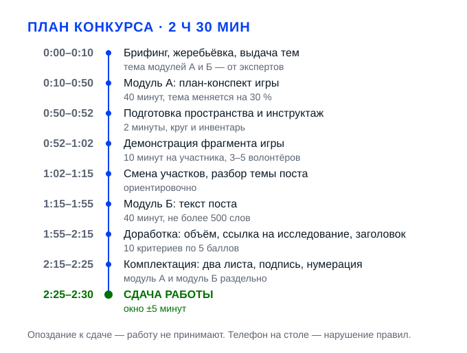
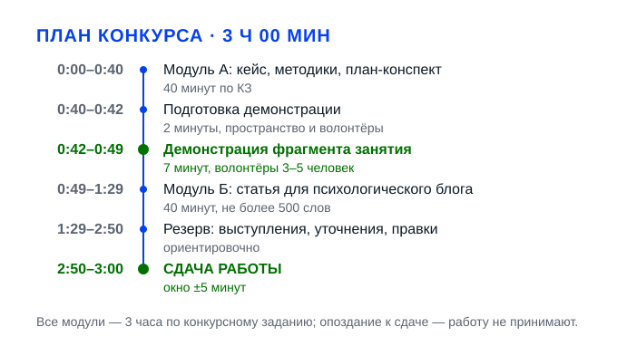
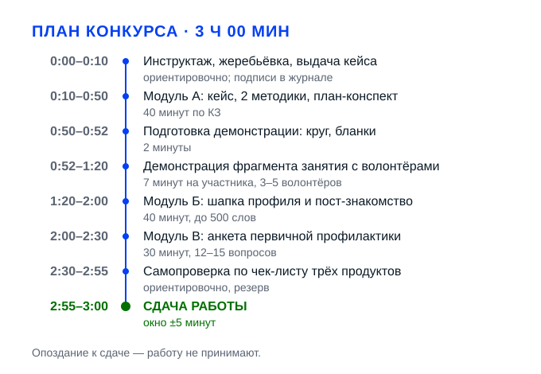

Психология (Р)
Задания ниже — официальные файлы «Абилимпикс» (источник: abilympics-russia.ru), разложенные по категориям. Решения написаны по тексту задания, регламенту и критериям оценки; в них указано, что именно проверяет эксперт.
Школьник
14–16 лет, базовый уровень заданияВыдержка из официального конкурсного задания: страницы, относящиеся к категории «Школьник» (стр. 5–8 источника).
Пошаговое решение
Конкурсное задание категории «Школьники» состоит из двух модулей по 50 баллов, всего 100. Модуль А — «Психологическая коррекция»: за 40 минут нужно написать план-конспект игры по теме от экспертов (сплочение коллектива, саморегуляция или уверенность в себе, в региональном варианте тема меняется на 30 процентов), затем за 2 минуты подготовить пространство и провести фрагмент игры с волонтёрами — 10 минут на участника. Модуль Б — «Просвещение»: за 40 минут пишется пост для странички школьного психолога не более 500 слов на тему вроде «Путешествие в мир эмоций» или «Риск и ответственность». На всё отводится 2 часа 30 минут. Решают исход две вещи: в модуле А эксперт смотрит не на замысел, а на то, как вы держите группу из трёх-пяти подростков, а в модуле Б каждый критерий весит ровно 5 баллов, поэтому забытая ссылка на исследование или текст на 520 слов стоят десятой части модуля.

Задача 1. Разобрать тему и спроектировать игруМодуль А · 50 баллов · 40 минут на план-конспект
Первые десять-двенадцать минут из сорока уходят не на письмо, а на проектирование: понять, что означает тема, для какого возраста игра, что именно должно измениться в поведении подростка и какие предметы на площадке это позволяют. Именно на этом этапе набирается или теряется половина модуля А: соответствие цели и задач возрасту и тематике (5 баллов), соответствие материалов возрасту (5 баллов), содержательность материала (4 балла). Если сразу начать писать ход игры, конспект получится гладким, но не про заданную тему, и переделывать придётся в спешке.
Действие 1.1. Понять тему и возраст
Шаг 1.1.1
Первым делом читаем тему вслух и подчёркиваем в ней ключевое слово — «сплочение», «саморегуляция» или «уверенность в себе», если эксперты дали базовый набор, либо то, что окажется в конверте при региональном изменении темы. Дальше выписываем на лист три вопроса: что именно должно измениться в поведении подростка после игры, каким действием это можно проверить здесь и сейчас, и какой материал на площадке это действие поддерживает. На всю работу с темой уходит не больше пяти минут из сорока, отведённых на план-конспект.
Тема — это 30 процентов изменения задания, и в критериях есть отдельный пункт «Соответствие определения цели и задач игры возрасту детей и тематике модуля» на 5 баллов из 50. Если ключевое слово понято широко, план получается красивым, но не про тему: эксперт видит несовпадение с первого абзаца и снимает балл сначала за цель, а вслед за ней и за содержание. Пять минут, потраченные на разбор темы, экономят двадцать минут переписывания.
Проверьте себя так: закройте лист и одной фразой скажите, что участники будут делать иначе после игры. Если фраза звучит как «станут дружнее» — тема не разобрана, нужен глагол действия: «смогут назвать три сильных качества одноклассника и сказать ему об этом вслух».
Типичная ошибка — взять тему буквально и построить игру про дружбу вообще: разговор по кругу, обмен мнениями, никакого действия. Такая игра проходит гладко, но по критерию соответствия теме теряет все 5 баллов, потому что сплочение проверяется совместным результатом, а не высказываниями о нём.
Эксперт читает первый абзац конспекта и сверяет ключевое слово темы с формулировкой цели; этого ему хватает, чтобы понять, разобрался участник в задании или подменил его общими словами.
Шаг 1.1.2
Определяем возраст: по заданию фрагмент ориентирован на подростков, значит работаем с 12–15 годами, 7–9 класс. Для этого возраста важны три вещи, и их надо держать в голове при выборе механики: подросток болезненно реагирует на публичную оценку и насмешку, он хочет быть принятым группой и одновременно отдельным, а инструкцию длиннее двух-трёх предложений не удерживает. Поэтому в конспекте сразу пишем возраст не «школьники», а «подростки 12–15 лет, 7–9 класс», и рядом — две строки о том, какие приёмы из этого следуют.
Возраст стоит в критериях дважды: за соответствие цели и задач возрасту дают 5 баллов, за соответствие материалов и оборудования возрасту — ещё 5. Один и тот же клубок знакомства с девятиклассниками и с младшими выглядит по-разному, и эксперт различает это по мелочам: по формулировке вопросов, по темпу, по тому, есть ли у подростка право промолчать. Возрастная привязка — не формальность в шапке, а объяснение всей конструкции игры.
Признак того, что возраст определён верно: в конспекте нет обращений «дети», «малыши», «ребята», а есть «участники» или «вы»; длительность одного упражнения не превышает 4–5 минут; есть правило «можно сказать «пропускаю» и не отвечать». Если хотя бы одного признака нет, переписываем формулировки.
Частая ошибка — писать для детей 7–12 лет и ставить упражнение на телесный контакт, объятия или доверительное падение на руки. С подростками это вызывает смех и сопротивление, группа разваливается на второй минуте, а эксперт фиксирует несоответствие возрасту сразу по двум критериям — минус 10 баллов.
Эксперт смотрит, как участник обращается к волонтёрам: если звучит «дети», «детки», «а теперь мы с вами», он отмечает это как несоответствие возрастной группе, даже когда сама механика подходит.
Шаг 1.1.3
Формулируем результат игры в терминах наблюдаемого поведения и записываем его в конспект отдельной строкой под целью: «после игры участник сможет…». Для темы сплочения это «назовёт по имени каждого в круге и скажет одному человеку конкретное, а не общее спасибо», для саморегуляции — «покажет дыхательное упражнение на четыре счёта и назовёт ситуацию, где его применит», для уверенности — «сформулирует одно своё умение без оговорки «ну, это так, ерунда»». Эта строка потом станет основой вопросов итогового круга.
Критерий «Содержательность подготовленного материала» — 4 балла, и он про то, есть ли в игре психологический механизм, а не только весёлая процедура. Формулировка через наблюдаемое действие сразу показывает механизм: в сплочении работает публичное признание, в саморегуляции — телесная техника с переносом, в уверенности — переформулировка самоописания. Эта же строка связывает модуль А с итогом, а за подведение итогов дают ещё 4 балла.
Проверяем просто: прочитайте формулировку и представьте, что снимаете на видео. Если можно показать пальцем на кадр, где видно результат, формулировка рабочая. Если результат можно только почувствовать или понять, она не годится — переписываем через действие.
Ошибка — написать результат как «повышение уровня сплочённости коллектива» или «гармонизация эмоциональной сферы». Такие формулировки невозможно увидеть за десять минут демонстрации, эксперт считает их общими словами, и вместе с содержательностью проседает пункт про итоги: минус 8 баллов из 50.
Эксперт ищет в конспекте строку, где сказано, что изменится в поведении; её отсутствие он трактует как отсутствие психологического замысла, а не как стилистическую вольность.
Действие 1.2. Отобрать материалы на площадке
Шаг 1.2.1
Проходим по площадке и составляем опись того, что реально лежит на столах: мяч, клубок, карточки, листы А5, цветные карандаши, скотч, маркеры, магниты, возможно мягкая игрушка и шарфы. Опись пишем от руки в столбик, напротив каждого предмета отмечаем количество и состояние. Это занимает три-четыре минуты, зато дальше вы выбираете не то, что нравится, а из проверенного списка.
Критерий «Соответствие используемых материалов и оборудования возрасту детей» стоит 5 баллов, и оценивается он по факту: чем участник пользуется в демонстрации. Если в конспекте написано «карточки с качествами», а на площадке их нет и вы импровизируете на листе в клетку, эксперт видит разрыв между планом и реальностью. Опись дисциплинирует: всё, что попало в конспект, должно быть на столе.
Проверка простая: в конспекте напротив каждого пункта инвентаря стоит количество, и оно совпадает с описью. Если для игры нужно пять клубков, а на площадке один, вы либо меняете механику на один клубок, либо сразу идёте к эксперту с вопросом, а не начинаете демонстрацию с пустыми руками.
Самая обидная ошибка — построить игру на раздаточных карточках, которых на площадке нет, и в последние две минуты перед выступлением рисовать их маркером на глазах у экспертов. На подготовку демонстрации даётся всего 2 минуты, нарисовать восемь карточек за это время невозможно, и половина замысла исчезает.
Эксперт обходит площадку и видит, чем участник пользуется; несоответствие заявленного и фактического инвентаря он отмечает в листе оценки отдельной строкой.
Шаг 1.2.2
Отбираем три-четыре предмета, которые держат механику, и проверяем каждый на безопасность: мяч не тяжёлый и не скользкий, клубок не рассыпается на нитки, шарфы без металлических застёжек, магниты не мелкие, листы без острого края. Отдельно проверяем, что предмет можно передать из рук в руки в круге радиусом полтора-два метра, не задев соседа, и что он не покатится под ноги.
За санитарные нормы и правила безопасности при проведении игры дают 3 балла — немного по сравнению с пятибалльными пунктами, но это те баллы, которые снимаются мгновенно и навсегда. Мяч, укатившийся под стулья, останавливает игру на минуту из десяти, а мелкий магнит в руках подростков — это риск, за который эксперт останавливает демонстрацию.
Проверьте предмет тремя движениями: бросьте его на стол с высоты десяти сантиметров (не разбился, не покатился), передайте соседу на расстояние вытянутой руки (не выскользнул), положите на пол (не создаёт скольжения). Если предмет прошёл все три проверки, он годится.
Ошибка — взять стеклянную банку или тяжёлый предмет для красоты и передавать его по кругу среди незнакомых волонтёров. На третьей передаче предмет падает, игра останавливается, и эксперт фиксирует нарушение безопасности: минус 3 балла плюс потерянные минуты демонстрации.
Эксперт следит за инвентарём в руках волонтёров в первые тридцать секунд; если предмет потенциально опасен, он вмешивается до начала игры, и это отражается в оценке.
Шаг 1.2.3
Сверяем количество с числом волонтёров: по заданию их от трёх до пяти, значит комплектов нужно минимум три, а лучше пять — по одному на человека, чтобы никто не ждал. Если предмет один на всех, механика должна быть построена на передаче по кругу, и это надо честно написать в конспекте, а не рассчитывать, что как-нибудь получится. Здесь же проверяем, что запасной вариант есть: если волонтёров окажется трое, игра не должна развалиться.
Критерий «Разнообразие приёмов и средств» — 5 баллов, а разнообразие невозможно, когда на пятерых один предмет: все ждут очереди, темп падает, половина группы выключена. Плюс к этому «Охват вниманием всех детей» — 4 балла, и он напрямую зависит от того, есть ли занятие каждому. Комплектность — это не про щедрость площадки, а про то, удержится ли внимание группы.
Считаем в уме: количество предметов умножаем на время одного круга и сравниваем с четырьмя минутами, отведёнными на упражнение. Если получается, что кто-то ждёт больше минуты без дела, добавляем второй круг, парную работу или роль наблюдателя с заданием.
Типичный промах — рассчитать игру на пятерых, а получить трёх волонтёров и начать тянуть время, повторяя инструкцию. Группа теряет интерес, эксперт видит, что участник не управляет ситуацией, и снимает баллы за охват вниманием и за гибкость приёмов.
Эксперт считает волонтёров до начала и смотрит, перестроился ли участник под фактическое число или продолжил по написанному плану. Отдельно он отмечает, хватило ли инвентаря на всех, кто пришёл.
Действие 1.3. Сформулировать цель и задачи
Шаг 1.3.1
Пишем цель одним предложением, начиная с глагола в неопределённой форме, и вставляем в него три элемента: возраст, тему, результат. Рабочая формулировка выглядит так: «Создать условия для того, чтобы подростки 12–15 лет в совместной игре смогли заметить и назвать сильные качества друг друга, что поддерживает сплочение группы». Никаких «способствовать развитию личности» и «формировать навыки» — эти глаголы невозможно проверить, и они сразу читаются как шаблон.
За соответствие цели и задач возрасту и тематике дают 5 баллов, и это первый пункт, который эксперт читает в конспекте. Цель с глаголом результата показывает, что участник понимает разницу между процессом и результатом игры; цель из общих слов показывает обратное. Кроме того, правильно сформулированная цель потом буквально повторяется в подведении итогов, и это даёт ещё 4 балла.
Проверяем цель тремя вопросами: в ней назван возраст, в ней есть тема игры своими словами, и из неё можно вывести вопрос для итогового круга. Если на третий вопрос ответить не получается, цель слишком абстрактна — переписываем, пока вопрос не появится сам.
Частая ошибка — писать цель, повторяющую название темы: «цель — сплочение коллектива». Это не цель, а тема, и эксперт отмечает подмену; следом разваливаются задачи, потому что их не из чего вывести. Итог — потеря 5 баллов и слабое подведение итогов.
Эксперт читает цель и проверяет, есть ли в ней возраст и проверяемый результат; цель без возраста он считает формальной и снижает оценку по пункту о соответствии возрасту и тематике.
Шаг 1.3.2
Выводим три задачи, и каждую начинаем с глагола, который можно увидеть в действии: познакомить, научить, отработать, дать возможность. Первая задача — про знание: участники узнают, что сплочение не равно «дружить со всеми». Вторая — про умение: назовут сильное качество одноклассника и скажут ему об этом лично. Третья — про перенос: выберут одно действие, которое сделают в классе на этой неделе. Три задачи — оптимум, четыре уже не помещаются в десять минут и не запоминаются.
Критерий требует, чтобы задачи соответствовали теме и возрасту, и оценивает их вместе с целью теми же 5 баллами. Связка «знание — умение — перенос» работает потому, что демонстрирует понимание структуры коррекционно-развивающего занятия: сначала смысл, потом действие, потом выход в жизнь. Это же делает подведение итогов естественным, а не приклеенным в конце.
Проверьте: под каждой задачей в конспекте есть конкретный фрагмент хода игры, где она реализуется. Если задача есть, а фрагмента нет — это украшение. Если фрагментов больше, чем задач, тоже плохо: конспект выглядит перегруженным, а эксперт считает, что участник не умеет отбирать.
Ошибка — написать пять задач, каждая из которых шире самой игры: развить коммуникативные навыки, повысить самооценку, сформировать толерантность. За десять минут демонстрации ни одна не реализуется, и по критерию полноты замысла участник теряет баллы за содержательность и логику.
Эксперт сверяет задачи с ходом игры: если в плане три задачи, а в демонстрации видно только одну, он отмечает несоответствие и снижает оценку за структуру.
Шаг 1.3.3
Кладём лист перед собой и читаем вслух по очереди: тему, цель, три задачи, первый абзац хода игры. Слушаем, не возникает ли разрыва: если тема про уверенность, а игра про знакомство, вы услышите это сразу, потому что собственная речь выдаёт несовпадение быстрее, чем чтение глазами. Здесь же проверяем, что в цели и задачах нет слов, которых не будет в демонстрации, и что все три задачи реально укладываются в десять минут с учётом инструкции и итога.
Это тот самый пункт на 5 баллов, который называется «Соответствие определения цели и задач игры возрасту детей и тематике модуля». Разрыв между шапкой и механикой — самая распространённая причина, по которой сильные участники теряют баллы: план написан красиво, а играется человек в другую игру. Сверка занимает две минуты и ловит несоответствие до того, как его увидит эксперт.
Признак согласованности: из каждой задачи можно назвать номер шага, например «основное упражнение, минуты 4–6», а из хода игры можно вернуться к теме. Если вы не можете показать пальцем, где реализуется задача, переписывайте либо задачу, либо ход.
Классика — увлеклись интересной механикой вроде слепого поезда или живых скульптур и забыли, что тема была про саморегуляцию. Игра проходит весело, волонтёры довольны, а эксперт пишет, что тема не раскрыта: минус 5 баллов и следом минус за содержательность.
Эксперт слушает первый абзац демонстрации и сравнивает его с конспектом; если цель на бумаге одна, а на площадке участник говорит другую, это фиксируется отдельно.
Задача 2. Написать план-конспект по обязательной структуреМодуль А · 50 баллов · остаток 40 минут
Конспект оценивают по структуре, и она задана в конкурсном задании жёстко: цель, задачи, организационный момент, инструкция, ход игры, подведение итогов. Пропустить элемент нельзя: за структуру и логику построения игры дают 5 баллов. Отдельно оценивается инструкция — короткая, не длиннее трёх-четырёх предложений, — и отдельно безопасность: правила под конкретную механику приносят 3 балла, шаблонная фраза про технику безопасности не приносит ничего. Тайминг расписываем по минутам: демонстрация длится 10 минут, и без поминутного плана итог съедается основным упражнением.
Действие 2.1. Оформить шапку и организационный момент
Шаг 2.1.1
Оформляем шапку конспекта шестью строками: тема игры, возраст и класс, форма работы (групповая, круг), количество участников (3–5 волонтёров), общая длительность (10 минут демонстрации), перечень инвентаря с количеством. Шапка пишется первой, потому что она задаёт рамку: пока в ней нет числа участников и времени, ход игры расползается. Пишем разборчиво, ровным почерком или печатными буквами — читать будет эксперт, а не вы.
Структура конспекта проверяется отдельным критерием на 5 баллов, и шапка — её первый уровень: без темы, возраста и инвентаря эксперт не может проверить ни соответствие возрасту, ни соответствие материалов. Формально отсутствие шапки не обнуляет модуль, но создаёт впечатление небрежности, и дальше эксперт читает строже. Кроме того, шапка — это ваш собственный чек-лист перед выходом на площадку.
Проверяем по шести строкам: тема, возраст, форма, число участников, длительность, инвентарь. Если хотя бы одна строка пустая, конспект не готов. Отдельно проверьте, что количество инвентаря в шапке совпадает с тем, что вы реально разложите на площадке.
Ошибка — начать сразу с хода игры, а шапку дописать в конце, если останется время. Как правило, не остаётся: сорок минут на конспект уходят быстро, и сдаётся лист без возраста и инвентаря. Эксперт трактует это как нарушение структуры: минус баллы за логику и за материалы.
Эксперт смотрит на шапку первым делом, потому что по ней быстро понимает, с какой группой и какими средствами участник собирается работать. Отсутствие возраста в шапке он читает как формальность.
Шаг 2.1.2
Описываем организационный момент конкретными действиями и минутами: за тридцать секунд до начала ставим стулья в круг радиусом полтора метра, сами встаём в круг, а не перед ним, просим волонтёров сесть так, чтобы видеть лица друг друга, и говорим первую фразу. В конспекте это выглядит как короткий абзац: «Приглашаю в круг, занимаем места, я сажусь вместе со всеми, чтобы не быть над группой». Такая деталь стоит одной строки, но сразу читается как профессиональный жест.
Организационный момент — обязательный элемент структуры, и за структуру и логику игры дают 5 баллов. Кроме того, положение в кругу, а не над группой, напрямую работает на критерий «Эмоциональность» (2 балла) и на охват вниманием (4 балла): из круга видно всех, и никто не остаётся за спиной. Позиция ведущего — это часть методики, а не вопрос вкуса.
Проверьте описание по признакам: указано время на организацию (не больше минуты), указано, где стоит ведущий, и указано, что делают волонтёры. Если в тексте только «провожу организационный момент», это не описание, а название раздела.
Частая ошибка — встать перед кругом, как учитель перед классом, и начать с фразы «здравствуйте, сегодня мы с вами поиграем». Дистанция сразу вырастает, подростки закрываются, а эксперт видит позицию над группой, что противоречит игровому формату и снижает эмоциональность.
Эксперт отмечает, где участник находится физически — в круге или вне его; это один из быстрых маркеров, по которым он отличает уверенного ведущего от выступающего с докладом.
Шаг 2.1.3
Вписываем короткий блок безопасности из трёх пунктов, привязанных к конкретной механике: передвижение по кругу только шагом и в одном направлении, руки и предметы не выше уровня плеч, любой участник может выйти из упражнения словом «стоп» без объяснений. Если в игре есть закрытые глаза, добавляем правило «ведущий держит за руку того, кто с закрытыми глазами», и указываем, кто именно из волонтёров выполняет эту роль.
Санитарные нормы и правила безопасности при проведении игры — 3 балла из 50. Правила, написанные под конкретную механику, показывают, что участник думал о рисках; шаблонная фраза «соблюдать технику безопасности» баллов не приносит, потому что ничего не регулирует. Кроме того, заранее объявленное право на «стоп» снимает у подростков тревогу, и группа работает свободнее.
Проверьте: каждое правило касается именно вашей игры, и на каждое есть действие ведущего. Если правило можно без изменений перенести в любую другую игру, оно слишком общее — переписывайте под свою механику.
Ошибка — ограничиться фразой про технику безопасности и не предусмотреть движения с закрытыми глазами в незнакомом помещении. На демонстрации кто-то наступает на ногу соседу, игра сбивается, и эксперт фиксирует нарушение: минус 3 балла и потеря темпа.
Эксперт слушает, какие ограничения участник объявляет перед игрой; наличие конкретных правил он отмечает как понимание безопасности, отсутствие — как формальность.
Действие 2.2. Написать инструкцию и ход игры
Шаг 2.2.1
Пишем инструкцию тремя-четырьмя короткими предложениями: что делаем, в каком порядке, что запрещено, как понять, что закончили. Для игры на сплочение это звучит так: «Сейчас каждый по кругу называет своё имя и одно дело, которое у него хорошо получается. Передаём клубок, нитку держим. Говорить можно одну фразу, перебивать нельзя. Заканчиваем, когда клубок вернётся ко мне». Инструкция зачитывается один раз и не повторяется целиком — только уточняется.
Инструкция — отдельный элемент структуры, за который вместе с логикой дают 5 баллов, и она напрямую определяет, удержится ли внимание. Подросток не воспринимает инструкцию длиннее четырёх предложений: он запоминает первое и последнее, а середина выпадает. Поэтому в плане инструкция должна быть короткой, а не подробной: подробность здесь вредит.
Проверьте инструкцию по объёму: не больше 40–50 слов, не больше четырёх предложений, и в ней есть ответ на вопрос, что считается завершением. Прочитайте её вслух с секундомером: если чтение занимает больше 25 секунд, сокращайте.
Типичная ошибка — прочитать инструкцию на полторы минуты, с оговорками и уточнениями, а потом повторять её для тех, кто не услышал. Из десяти минут демонстрации уходит три, упражнение сжимается, и вся логика «разминка — основное — итог» ломается.
Эксперт замеряет, сколько времени уходит на инструкцию: больше минуты он считает нарушением логики и снижает оценку за выразительность и структуру. Заученная наизусть инструкция его не убеждает: важна реакция группы.
Шаг 2.2.2
Расписываем ход игры по минутам, а не по этапам: минута 1 — приветствие и инструкция, минуты 2–3 — разминка в круге (имя плюс одно слово о настроении), минуты 4–7 — основное упражнение, минуты 8–9 — итоговый круг, минута 10 — завершение и благодарность. Напротив каждого отрезка пишем, что делает ведущий и что делают волонтёры. Такой тайминг потом легко урезать на площадке: если вы отстаёте на минуту, вы знаете, какой отрезок сжать, вместо того чтобы судорожно сокращать итог.
За структуру и логику построения игры дают 5 баллов, и логика проверяется именно по последовательности: разогрев, основное действие, осмысление. Без минут ход игры превращается в список упражнений, и на демонстрации участник либо не успевает подвести итог, либо заканчивает на третьей минуте. Тайминг в конспекте — это план управления временем, а времени ровно 10 минут.
Проверьте сумму: все отрезки вместе дают 10 минут, на итог отведено не меньше 2 минут, на основное упражнение — не меньше 3. Если итог сжат до тридцати секунд, это уже не подведение итогов, и 4 балла за него не получить.
Ошибка — расписать ход по этапам без минут и на демонстрации увлечься основным упражнением. Время заканчивается на середине, итог произносится скороговоркой или не произносится вовсе: теряются 4 балла за подведение итогов и часть баллов за логику.
Эксперт смотрит на часы и сверяет фактические этапы с планом; расхождение в два и более этапа он трактует как потерю структуры. Отдельно он проверяет, уложилось ли подведение итогов в свои две минуты.
Шаг 2.2.3
Вставляем в ход игры два-три приёма, которые передают инициативу волонтёрам: выбор из двух вариантов («начнём с круга имён или сразу с упражнения — как хотите?»), роль ведущего для одного из участников («кто хочет держать время, чтобы мы не заигрались?») и открытый вопрос вместо готового ответа («как вы думаете, что изменилось в круге после упражнения?»). Каждый приём помечаем на полях конспекта, чтобы на площадке не забыть его использовать.
Отдельный критерий — «Использование приёмов стимулирования инициативности и самостоятельности детей», 4 балла. Эксперт различает два формата: когда всё делает ведущий, а группа отвечает, и когда группа что-то решает сама. Второй формат для подростков принципиален: он снимает позицию «нам транслируют» и держит внимание дольше. Три приёма — достаточно, чтобы это было видно.
Проверьте по конспекту: в ходе игры есть минимум два места, где волонтёры выбирают или говорят без вашего вопроса-подсказки. Если все реплики ведущего — вопросы с ожидаемым ответом, приёмы не работают: инициатива осталась у вас.
Ошибка — весь фрагмент вести в режиме «я говорю — вы повторяете». Формально игра идёт, но по критерию инициативности ставится низкий балл, а заодно проседает эмоциональность: подростки отвечают односложно, и группа выглядит вялой.
Эксперт считает, сколько раз за демонстрацию слово передавалось группе; если ни разу, он отмечает, что формат остался монологом. Он же отмечает, кому именно доставались роли и право выбора.
Шаг 2.2.4
Прописываем в конспекте два варианта одной и той же игры: упрощённый — если группа закрытая и отвечает коротко, и усложнённый — если группа разогрелась и готова к большему. Для игры на сплочение упрощение выглядит как «называем только имя и любимое занятие», усложнение — «добавляем вопрос соседу справа: что тебе помогает, когда трудно». Эти два варианта пишутся последними, по одной строке каждый, но их наличие меняет оценку.
Творческий подход к содержанию и проведению игры — 4 балла, и гибкость здесь один из главных маркеров: участник, у которого есть заготовленный второй вариант, показывает, что думал о группе, а не только о своём плане. Кроме того, вариативность страхует демонстрацию: если волонтёры вялые, вы за минуту меняете механику и не теряете темп.
Проверка: у вас в конспекте есть два предложения, начинающиеся со слов «если группа…». Прочитайте их и представьте, что действительно произносите это на площадке без подготовки. Если формулировка неудобная или слишком длинная, упростите её сейчас, а не в момент выступления.
Ошибка — идти с единственным сценарием, рассчитанным на активную группу. Волонтёры на чемпионате часто устали и отвечают сдержанно, участник теряется, начинает уговаривать, и игра провисает. Эксперт видит отсутствие гибкости и снимает балл за творческий подход.
Эксперт отмечает, менял ли участник темп и формулировки под реакцию группы; наличие заготовленных вариантов видно по тому, насколько спокойно он перестраивается.
Действие 2.3. Написать подведение итогов
Шаг 2.3.1
Пишем итоговый круг из трёх вопросов, и формулируем их так, чтобы на них нельзя было ответить «да» или «нормально»: «Что в этой игре было для тебя самым неожиданным?», «Какое качество у соседа справа ты замечал раньше, а сегодня увидел иначе?», «Что из этого можно сделать в классе на этой неделе?». Вопросы расставляем по возрастанию глубины: сначала факт, потом наблюдение, потом перенос.
Соответствие подведения итогов возрасту детей — 4 балла, и подростковый возраст требует именно открытых вопросов: закрытый вопрос воспринимается как контроль и вызывает формальный ответ. Три вопроса, выстроенных от факта к переносу, дают возможность ответить даже тому, кто не готов говорить о себе, и при этом разворачивают тему. Это же подведение опирается на формулировку результата, которую вы написали в начале.
Проверьте: на каждый вопрос в конспекте есть заготовленный вариант ответа — не для того, чтобы его озвучить, а чтобы убедиться, что вопрос вообще имеет ответ. Если вы не можете придумать ни одного содержательного ответа, вопрос сформулирован плохо.
Частая ошибка — заканчивать игру вопросом «Вам понравилось?» или «Что вы поняли?». Первый вопрос собирает вежливые кивки, второй ставит подростка в тупик, и итог занимает тридцать секунд вместо двух минут. Эксперт фиксирует формальное подведение и снимает баллы.
Эксперт слушает именно итоговый круг: по вопросам видно, умеет ли участник обращаться к подростковой аудитории, а не к абстрактной группе. Он также смотрит, умеет ли участник держать паузу после вопроса.
Шаг 2.3.2
Связываем итог с темой буквально: после ответов волонтёров вы произносите две фразы, где называете тему своими словами и показываете, что произошло в группе. Например: «Мы сегодня не просто называли имена — каждый услышал о себе конкретное хорошее слово от другого. Сплочение начинается вот с таких точных фраз, а не с призыва дружить». После этого короткий вопрос о переносе, и на этом игра закрывается.
Эта связка закрывает сразу два критерия: соответствие теме, входящее в 5 баллов, и содержательность материала (4 балла). Если после итогового круга не прозвучало обобщение, игра остаётся процедурой, а подростки уходят без вывода, который они могли бы назвать. Эксперт в этом случае пишет, что психологический смысл не отрефлексирован.
Проверьте: в конспекте после вопросов итогового круга есть отдельный абзац обобщения из двух-трёх предложений. Если его нет, допишите сейчас, потому что на площадке придумать его под взглядами экспертов трудно.
Ошибка — закончить на последнем ответе волонтёра и сказать «спасибо, вы молодцы». Тема остаётся не названной, перенос не сформулирован, и часть баллов за содержание и итоги теряется, хотя сама игра прошла хорошо.
Эксперт ждёт от участника итоговой фразы, связывающей упражнение с темой; её отсутствие он отмечает как незавершённость занятия. Наличие обобщения для него маркер завершённости занятия.
Шаг 2.3.3
Проходим по конспекту сверху вниз и ставим галочки напротив шести обязательных элементов: цель, задачи, организационный момент, инструкция, ход игры, подведение итогов. Дальше проверяем три вещи: цель и задачи стоят до хода, а не после, время в ходу суммируется в 10 минут, инвентарь из шапки упоминается в тексте хотя бы один раз. На эту сверку уходит три-четыре минуты, и её нужно делать до того, как лист сдан.
За структуру и логику построения игры дают 5 баллов, и проверяется она буквально по наличию элементов: эксперту не нужно вчитываться, он ищет шесть заголовков и смотрит, на месте ли они. Порядок тоже важен: если итоги описаны до хода игры, это признак того, что конспект собирался наспех. Три-четыре минуты сверки — самая выгодная инвестиция времени из всех сорока.
Шесть галочек на месте, сумма времени равна десяти минутам, инвентарь упомянут в ходе. Если какого-то элемента нет, дописывайте его на свободном месте с пометкой, а не переписывайте весь конспект: время дороже аккуратности.
Ошибка — писать конспект линейно и не успеть дописать подведение итогов, потому что ход игры занял двадцать пять минут. В результате сдаётся лист без итогов, и теряются 4 балла за подведение плюс баллы за структуру, хотя работа почти сделана.
Эксперт читает конспект целиком после выступления и отмечает отсутствующие блоки; наличие всех шести элементов для него базовая линия оценки. Порядок блоков он тоже сверяет: цель и задачи должны стоять до хода игры.
Задача 3. Провести фрагмент игры с волонтёрамиМодуль А · 50 баллов · 2 минуты подготовки + 10 минут выступления
Демонстрация длится 10 минут и начинается через 2 минуты после сигнала: за это время нужно переставить пространство, разложить инвентарь и проинструктировать трёх-пяти волонтёров. Эксперт смотрит не на план, а на живую работу: удержан ли темп, получил ли слово каждый, прозвучали ли правила безопасности до упражнения и состоялся ли итоговый круг. Именно здесь набираются самые весомые баллы: охват вниманием всех (4), инициативность (4), выразительность речи (3), эмоциональность (2). План можно написать идеально и потерять половину модуля, если демонстрация началась с поиска клубка в сумке.
Действие 3.1. Организовать пространство за две минуты
Шаг 3.1.1
За две минуты подготовки пространство приводится в рабочее состояние: стулья ставятся в круг, лишние столы отодвигаются к стене, середина комнаты освобождается. Круг делаем радиусом полтора-два метра: этого хватает, чтобы передавать предмет и видеть лица, но не хватает, чтобы кричать через комнату. Стулья ставим так, чтобы между ними был проход для ведущего, иначе вы будете перешагивать через ноги волонтёров.
На подготовку демонстрации даётся ровно 2 минуты, и это время входит в конкурсный регламент: если не успели, выступление начинается в неубранном пространстве. Круг вместо рядов — принципиальная вещь для игрового формата: он убирает позицию над группой и обеспечивает охват вниманием всех детей, за который дают 4 балла. Плюс ширина прохода между рабочими местами на площадке задана не меньше 1,5 метра, и этот норматив надо сохранить.
Проверьте три вещи за десять секунд: центр свободен, все стулья в круге и обращены внутрь, ведущий может пройти по внешнему кругу, не задевая сидящих. Если хотя бы одно условие не выполнено, исправляйте сразу, потому что потом будет поздно.
Ошибка — начать демонстрацию, не переставив мебель, и вести игру в рядах, где половина группы не видит ведущего. Внимание распадается, эксперт фиксирует слабый охват аудитории, и часть баллов за организацию пространства уходит вместе с темпом.
Эксперт смотрит на площадку в момент старта: свободный центр и круг он воспринимает как готовность к игровому формату, ряды — как неспособность перестроить среду под задачу.
Шаг 3.1.2
Раскладываем инвентарь по трём точкам: на своём стуле то, что нужно ведущему (конспект, часы), на полу в центре круга предметы для упражнения, рядом с крайним стулом запасной комплект. Всё лишнее убираем в сумку, включая черновики. Предметы для передачи кладём так, чтобы до них можно было дотянуться, не вставая: это экономит первые тридцать секунд и задаёт темп.
За соответствие материалов возрасту дают 5 баллов, и проверяется это по тому, как материалы используются в демонстрации: лежат ли они под рукой или участник ищет их в сумке на четвёртой минуте. Три точки раскладки — простая эргономика ведущего: пока предметы на местах, руки и глаза свободны для группы, а это напрямую влияет на выразительность речи (3 балла).
Проговорите про себя первые три действия: взять клубок, передать соседу, вернуться в круг. Если на любом из них вы представляете поиск предмета, раскладка неверна — переложите сейчас. Иначе первый переход превращается в паузу на поиск предмета.
Частая ошибка — держать весь инвентарь кучей на столе в стороне и бегать к нему по ходу игры. Каждый такой забег — потерянный контакт с группой, а эксперт видит суету вместо управления процессом. Кроме того, теряется ритм, который вы задавали с первой минуты.
Эксперт отмечает, насколько свободно участник двигается в пространстве; суетливые поиски инвентаря он связывает с непроработанной организацией. Он также видит, где именно лежит инвентарь к моменту старта.
Шаг 3.1.3
Быстро проходим глазами по помещению и снимаем три риска: провода и кабели убираем за мебель или проклеиваем скотчем, острые углы столов закрываем или отодвигаем, скользкий участок пола вытираем насухо. Отдельно проверяем, что дверь, которая может открыться в середину круга, закрыта или кто-то из волонтёров её придерживает. Всё это делается в те же две минуты подготовки и занимает около сорока секунд.
За санитарные нормы и правила безопасности при проведении игры дают 3 балла, и снимаются они за конкретные вещи: кабель под ногами в игре с движением, стол на пути, открытая дверь. Подростки в игре двигаются резче, чем ожидаешь, поэтому риск выше, чем кажется по плану. Проверка на сорок секунд дешевле, чем остановленная демонстрация.
Признак готовности: по полу нет проводов, путь вокруг круга свободен на всю ширину, дверь в зону игры не открывается. Если вы не можете пройти вокруг круга, не задев ничего, пространство не готово. Проверять надо в обуви, в которой будете вести игру.
Ошибка — считать, что за безопасность отвечает площадка, и не смотреть под ноги. На движении кто-то цепляется за кабель, игра останавливается, и помимо 3 баллов участник теряет две-три минуты из десяти на восстановление группы.
Эксперт проходит по площадке перед началом и отмечает очевидные риски; если участник их не снял, это отражается в листе оценки, даже когда ничего не случилось.
Действие 3.2. Проинструктировать волонтёров
Шаг 3.2.1
Собираем волонтёров в круг и говорим прямо, что сейчас будет: как называется игра, сколько времени она займёт, что от них требуется. Называем их роль честно: «вы играете роль подростков 12–15 лет, поэтому реагируйте так, как реагировали бы в классе, — можно сдержанно, можно с интересом». Это снимает неловкость первых секунд и задаёт волонтёрам понятную задачу вместо абстрактного «поучаствуйте».
Задание прямо предписывает проинструктировать волонтёров (3–5 человек) перед началом. С критериями это связано через охват вниманием (4 балла) и эмоциональность (2 балла): группа, которая понимает свою роль, включается быстрее, и первые тридцать секунд не уходят на уговоры. Кроме того, честное обозначение роли читается экспертом как профессиональная позиция.
Проверьте: после инструктажа каждый волонтёр может ответить, что он делает и сколько это длится. Если кто-то смотрит в сторону с вопросом в глазах, инструктаж не закончен — повторите для него лично одну фразу.
Ошибка — сказать «сейчас поиграем» и сразу начать, не объяснив роль. Волонтёры ведут себя как взрослые на демонстрации: кивают, ждут подсказок, отвечают односложно. Группа выглядит пассивной, и эксперт снижает балл за эмоциональность.
Эксперт слушает инструктаж волонтёрам: понятная постановка роли для него признак того, что участник умеет работать с группой, а не только с планом. Он отмечает и то, назвал ли участник волонтёров по именам.
Шаг 3.2.2
Проговариваем волонтёрам те же три правила, что записаны в конспекте, и добавляем стоп-сигнал: «если кому-то некомфортно, скажите «стоп» — выходим без объяснений, игра продолжается». Показываем рукой, как подаётся сигнал, чтобы это не выглядело как признание слабости. Отдельно предупреждаем о том, что будет с закрытыми глазами, если такое упражнение есть, и кто в этом случае держит за руку.
Требование безопасности (3 балла) реализуется ровно в этот момент: правила, объявленные до игры, считаются соблюдёнными, объявленные после инцидента — нет. Стоп-сигнал важен и методически: подросток, у которого есть легальный выход, включается активнее, потому что не боится оказаться в неловком положении.
Проверьте: после ваших слов кто-то из волонтёров повторяет стоп-слово или кивает в ответ на вопрос, всем ли понятно, как остановиться. Если ответа нет, повторите правило ещё раз, коротко, и добейтесь реакции.
Ошибка — объявить правила формально, скороговоркой, и не проговорить стоп-сигнал. В упражнении с закрытыми глазами кто-то напрягается, группа это чувствует, атмосфера становится настороженной; эксперт фиксирует и нарушение безопасности, и потерю контакта.
Эксперт отмечает, прозвучали ли правила до начала упражнений; отсутствие стоп-сигнала он трактует как небрежность в части безопасности. Он также смотрит, повторяет ли участник правила при переходе к упражнению.
Шаг 3.2.3
Отводим тридцать секунд на короткую репетицию: просим волонтёров просто встать в круг, сами произносим первую фразу и первый переход («передаём клубок по часовой стрелке, нитку держим»), проверяем, что всем слышно. Это не полноценный прогон, а настройка голоса и расстояния: вы заодно понимаете, нужно ли говорить громче и стоит ли сделать круг теснее.
Две минуты подготовки даются именно для этого, и потратить тридцать секунд из них на проверку слышимости — самое разумное вложение. Помещение на площадке часто большое, а гул от соседних участков мешает; участник, который не проверил голос, начинает демонстрацию с шумом и теряет первые фразы. Выразительность речи (3 балла) и охват вниманием (4 балла) зависят от этого напрямую.
Проверьте: волонтёр с крайнего стула повторяет вашу первую фразу, не переспрашивая. Если переспрашивает — сдвиньте круг или говорите громче и медленнее, а не начинайте игру в надежде, что потом разберутся.
Ошибка — не проверять голос и начинать тихо, рассчитывая, что группа прислушается. Подростки не прислушиваются: они переспрашивают, темп падает, а эксперт слышит невнятное начало и снижает оценку за выразительность речи.
Эксперт слушает первую фразу: если участник не проверял акустику, начало демонстрации звучит неуверенно, и это сразу читается. Он также отмечает, говорит ли участник в темпе, который группа выдерживает.
Действие 3.3. Провести фрагмент игры
Шаг 3.3.1
Открываем демонстрацию за двадцать-тридцать секунд: называем себя, тему игры, возраст, на который она рассчитана, и цель — одной фразой каждое. Дальше сразу переходим к делу: «Сейчас встанем в круг и познакомимся». Никаких «разрешите представить вашему вниманию» и пересказа конспекта: эксперты читали план, им нужна работа с группой, а не вступление.
Первые тридцать секунд задают оценку по выразительности речи (3 балла) и эмоциональности (2 балла), и они же проверяются на соответствие цели и задачам возрасту: если участник называет возраст и тему, эксперт видит, что игра адресована конкретной группе. Кроме того, демонстрация идёт ровно десять минут, и минута вступления стоит десятой части всей работы.
Признак хорошего начала: за тридцать секунд прозвучали имя, тема, возраст, цель и первое действие. Если вы успели сказать только приветствие, начало слишком медленное — сокращайте вступление до одной фразы.
Частая ошибка — начать с длинного представления и объяснения структуры игры. Эксперт уже знает структуру из конспекта, а группа за минуту вступления успевает заскучать: теряется и время, и контакт. Вступление съедает минуту, и её потом не хватает на итог.
Эксперт фиксирует, сколько времени ушло до первого действия группы; затянутое вступление он отмечает как слабую выразительность и потерю темпа. Он также слышит, назван ли возраст группы вслух.
Шаг 3.3.2
Проводим короткий круг знакомства на две минуты: каждый называет имя и одно слово о своём состоянии, клубок идёт по часовой стрелке, ведущий начинает с себя и задаёт образец краткости. Своё слово произносим не «нормально», а конкретно — «собранно» или «с интересом», чтобы задать уровень ответа. Если группа стесняется, идём вторым кругом, где каждый повторяет имя предыдущего и своё.
Разминка нужна не для вежливости, а для включения: за две минуты группа переходит из позиции «нас оценивают» в позицию «мы играем», и основное упражнение проходит плотнее. По критериям это работает на охват вниманием всех детей (4 балла) и на логику построения игры (5 баллов): разогрев — обязательный первый этап, его отсутствие видно сразу.
Проверьте по реакции: после разминочного круга волонтёры смотрят друг на друга, а не только на вас, и говорят чуть громче, чем в начале. Если все по-прежнему смотрят в пол, круг не сработал — добавьте второй проход с повторением имён.
Ошибка — пропустить разминку, чтобы успеть основное, и сразу начать серьёзное упражнение. Подростки входят в работу медленно, первые ответы выходят формальными, и основное упражнение провисает на первой половине.
Эксперт смотрит на динамику группы в первые две минуты: оживление после разминки он считает признаком грамотного входа. Он же фиксирует, сколько человек включилось в разминочный круг.
Шаг 3.3.3
Проводим основное упражнение на четыре минуты, держа три вещи под контролем: инструкция произносится один раз, каждый участник получает слово, ведущий не комментирует ответы оценками. В игре на сплочение это выглядит так: каждый называет качество соседа справа и подтверждает его конкретным примером; ведущий следит за очередью и, если кто-то сбивается, помогает наводящим вопросом, а не подсказывает ответ. Если группа ускоряется, добавляем второй круг с вопросом, что помогает, когда трудно.
Основное упражнение — то, за что дают содержательность (4 балла) и разнообразие приёмов (5 баллов), и именно здесь видно, работает ли психологический механизм. Один проход по кругу без обсуждения — ещё не упражнение, а процедура; ценность появляется, когда участник слышит про себя конкретные слова и отвечает на них. Ведущий, который не оценивает ответы, сохраняет безопасность: подросток не боится сказать неточно.
Признаки работающего упражнения: все получили слово, прозвучало не меньше трёх конкретных примеров, а не общих «ты хороший», кто-то переспросил или уточнил. Если примеров нет и все отвечают шаблонно, механику надо менять на ходу — например, попросить привести один факт.
Ошибка — превратить упражнение в опрос: задавать вопрос и выслушивать по одному, комментируя каждый ответ словом «молодец». Группа переходит в режим урока, инициатива уходит к ведущему, и теряются баллы за разнообразие приёмов и за стимулирование самостоятельности (4 балла).
Эксперт оценивает, как участник держит структуру упражнения и при этом реагирует на группу; подсказки и переформулировки он считает признаком живого ведения.
Шаг 3.3.4
Держим в поле зрения всех: переводим взгляд по кругу, а не фиксируемся на активных, называем по именам тех, кто молчит, и даём им слово в мягкой форме — «а как у тебя, Настя? можно коротко». Если кто-то выпал полностью, меняем позицию: встаём так, чтобы он оказался в поле зрения, и адресуем следующий вопрос ему. Всё это без замечаний и без пауз: темп не должен провисать.
Охват вниманием всех детей в момент проведения игры — отдельные 4 балла, и это один из самых заметных критериев: эксперт смотрит не на того, кто говорит, а на тех, кто молчит. Плюс к этому приёмы стимулирования инициативности (4 балла) работают только тогда, когда слово дают всем, а не только уверенным. Подросток, которого дважды обошли, выключается до конца игры.
Проверьте по кругу: каждый получил слово хотя бы один раз и каждый хотя бы раз встретился взглядом с ведущим. Если кто-то остался без слова, он выпал — это фиксируется как слабый охват. Отдельно проверьте, услышал ли каждый своё имя от ведущего.
Типичная ошибка — работать с двумя активными волонтёрами, потому что с ними легко и весело. Остальные три выключаются, игра сужается до диалога, и эксперт снимает баллы и за охват, и за разнообразие. Такое сужение группы видно и по позам: трое сидят вполоборота.
Эксперт считает, скольким участникам досталось слово и внимание; если двое из пяти не были вовлечены, это прямо отражается в оценке. Он также смотрит, кому участник адресует вопросы по ходу игры.
Действие 3.4. Подвести итог и закрыть демонстрацию
Шаг 3.4.1
Проводим итоговый круг на две минуты по трём заготовленным вопросам, начиная с самого лёгкого: сначала факт, потом наблюдение, потом перенос. Сами отвечаем последними и коротко, чтобы не задавить группу своим ответом. Если время поджимает, оставляем два вопроса, но не один: один вопрос превращает итог в формальность. Если группа молчит, заходим с вопроса о факте: он не требует раскрытия.
Соответствие подведения итогов возрасту детей — 4 балла, и проверяется по вопросам: открытые, от факта к переносу, без оценочных формулировок. Порядок тоже важен: подростку легче начать с наблюдения, чем с самораскрытия, поэтому первый вопрос должен быть безопасным. Два вопроса — минимум, при котором итог остаётся разговором.
Проверьте: прозвучали ответы от большинства волонтёров, и хотя бы один ответ вышел за пределы «понравилось — не понравилось». Если все ответы вежливые и короткие, вопросы слишком общие — переходите к вопросу о переносе.
Ошибка — задать один вопрос «что вы поняли?» и получить паузу. Пауза в конце игры читается как провал подведения, и баллы снимаются, даже если сама игра прошла хорошо. Спасением считается второй, уточняющий вопрос, а не повторение первого.
Эксперт слушает вопросы итогового круга и то, как участник реагирует на паузы: умение выждать и переформулировать он оценивает выше, чем быстрое заполнение тишины.
Шаг 3.4.2
После ответов произносим обобщение из двух-трёх фраз, где называем тему своими словами и связываем её с тем, что произошло в круге, а затем задаём вопрос о переносе: «что из этого можно сделать в классе на этой неделе?». Даём десять секунд тишины на обдумывание — это важнее, чем кажется, потому что именно в этой паузе рождается конкретный ответ. Завершаем на вопросе, а не на своей речи.
Эта часть закрывает сразу два критерия: содержательность подготовленного материала (4 балла) и соответствие подведения итогов возрасту (4 балла). Обобщение показывает, что игра имела психологический замысел, а вопрос о переносе превращает её из развлечения в упражнение с последствием. Десять секунд тишины эксперт замечает: они отличают ведущего, умеющего держать паузу, от того, кто боится молчания.
Проверьте: после обобщения прозвучал хотя бы один конкретный ответ про действие в классе. Если ответа нет, задайте уточняющий вопрос с примером: «например, сказать кому-то спасибо за конкретную помощь — так?».
Ошибка — закончить обобщением без переноса и сразу перейти к благодарности. Тема остаётся в комнате, а не уходит с участниками, и часть баллов за содержание и итоги теряется. Достаточно одной фразы, но она должна прозвучать до благодарности.
Эксперт отмечает наличие переноса: вопрос о действии после игры он считает признаком понимания коррекционно-развивающей задачи. Он также отмечает, прозвучал ли вопрос о конкретном действии на неделе.
Шаг 3.4.3
Закрываем демонстрацию за тридцать секунд: благодарим волонтёров по именам, говорим, что игра закончена, и возвращаем пространство в исходное состояние — стулья на место, инвентарь собран. Последнее слово произносим стоя в круге, а не на выходе из него, и не добавляем новых мыслей: всё содержательное уже сказано в обобщении. Если волонтёры хотят что-то сказать после игры, это делается за пределами демонстрации.
Завершение влияет на общее впечатление и на критерий «Соблюдение правил конкурса» (2 балла): уборка пространства и соблюдение регламента — часть правил. Кроме того, чёткое закрытие освобождает время: если вы закончили на девятой минуте, у экспертов есть запас, и это воспринимается как владение таймингом. Размытое завершение, наоборот, читается как неумение держать рамку.
Проверьте: демонстрация закончилась в пределах десяти минут, стулья возвращены, инвентарь собран, волонтёры поблагодарены по именам. Если вы ушли за десять минут, в следующий раз резервируйте минуту на закрытие в тайминге.
Ошибка — закончить словами «ну вот и всё, спасибо» и оставить стулья в круге, а инвентарь на полу. Формально игра проведена, но правила конкурса включают аккуратность, и 2 балла за них легко потерять на мелочи.
Эксперт фиксирует время окончания и состояние площадки после демонстрации; аккуратное закрытие он отмечает как часть общей культуры работы. Он же смотрит, не затянулось ли закрытие дольше минуты.
Задача 4. Написать пост для странички школьного психологаМодуль Б · 50 баллов · 40 минут
Модуль Б — текст для соцсети не более 500 слов, и оценивается он десятью критериями по 5 баллов: правила конкурса, санитарные нормы, соответствие теме, доступность понятий, логичность, современные исследования не старше пяти лет, информативность, примеры, объём, стиль и тон. Содержание обязано включать информирование, практическую помощь и эмоциональный контент, а текст — опираться на инфоповод ближайшего времени. Пятнадцать баллов даёт дисциплина: лимит слов, ссылка на исследование, аккуратная запись. Поэтому писать начинаем не с красивой первой фразы, а с разбора темы, аудитории и цели.
Действие 4.1. Разобрать тему, аудиторию и цель
Шаг 4.1.1
Читаем тему поста и выписываем ключевое понятие отдельно: эмоции, дружба и сотрудничество, внутренний мир, будущее, риск и ответственность. Дальше задаём себе вопрос: что подросток 12–15 лет уже знает об этом и где у него происходит сбой. Ответ записываем одной фразой — она станет основой заголовка. На разбор темы уходит не больше пяти минут из сорока.
За соответствие контента заданной теме дают 5 баллов, и это первое, что проверяет эксперт: совпадает ли текст с темой или тема использована как повод поговорить о другом. В модуле Б тема меняется на 30 процентов в региональном варианте, поэтому рассчитывать на заученный текст нельзя — работает только навык быстро разбирать формулировку.
Проверьте: ключевое слово темы встречается в заголовке или в первом абзаце и употреблено в том же смысле, что в задании. Если вы пишете про дружбу как про умение заводить знакомства, а тема про сотрудничество, это подмена, и её видно сразу.
Ошибка — писать пост на близкую, но другую тему: например, на тему «Риск и ответственность» писать про безопасность в интернете. Тема формально рядом, но контент не тот, и 5 баллов за соответствие теряются вместе с баллами за информативность.
Эксперт сверяет заголовок и первый абзац с формулировкой темы; расхождение он отмечает как несоответствие контенту задания. Отдельно он отмечает, раскрыто ли понятие темы своими словами, а не пересказом определения.
Шаг 4.1.2
Определяем аудиторию конкретно: обучающиеся 12–15 лет, читают со смартфона, удерживают внимание на первых двух строках, не любят назидания и длинные абзацы. Рядом записываем две-три задачи, которые эта аудитория решает в рамках темы: разобраться, почему накрывает злость; понять, как подойти к человеку, с которым поссорился; решить, стоит ли рисковать и что будет потом. Эти задачи потом становятся структурой поста.
Доступность опорных понятий и вопросов целевой аудитории — 5 баллов, и она невозможна без точного адресата: текст для всех не решает ничьих задач. Задание прямо требует определить возраст целевой аудитории, её особенности и задачи, которые она решает в рамках тематики. Две-три задачи — оптимум: на них можно ответить в пределах 500 слов, на десять — нет.
Проверьте: у вас есть три строки — возраст, особенности восприятия, задачи. И есть понимание, с какого устройства и в какой ситуации это будут читать: на перемене, перед сном, в транспорте. Если вы пишете для школьников без возраста, пост получится ни о ком.
Ошибка — писать для широкой аудитории и добавлять обращения к родителям и педагогам. Пост теряет адресата, подросток не узнаёт себя в первых строках, и критерий доступности проваливается, даже если текст грамотный.
Эксперт смотрит на первые две строки: если в них нет узнаваемой подростковой ситуации, он делает вывод, что аудитория определена формально. Он также смотрит, есть ли в тексте обращение к читателю.
Шаг 4.1.3
Формулируем цель поста одной фразой: не «рассказать об эмоциях», а «дать подростку способ справиться с накрывающей злостью здесь и сейчас и объяснить, почему это работает». Дальше ищем инфоповод ближайшего времени — контрольная неделя, ссора в чате класса, начало учебной четверти, сезонная усталость — и вписываем его в первые строки. Инфоповод должен быть реальным для текущего месяца, а не «скоро лето».
Актуальность через инфоповод ближайшего времени прямо названа в задании как параметр текста и входит в критерий стиля и общего тона (5 баллов). Цель с глаголом результата удерживает текст от расползания: как только вы начинаете писать обо всём, лимит в 500 слов исчезает. Инфоповод решает другую задачу — он объясняет, почему читать надо сейчас.
Проверьте: цель умещается в одну строку и содержит действие читателя, а инфоповод можно назвать датой или событием этой недели. Если инфоповод — вообще жизнь, он не работает и его надо заменить. Повод, который нельзя назвать вслух, не работает.
Частая ошибка — писать вечный текст без привязки ко времени: он выглядит нормально, но по критерию актуальности не получает баллов, а эксперт отмечает отсутствие инфоповода как формальность. Читатель не понимает, почему это важно именно сейчас.
Эксперт ищет в тексте привязку к конкретному моменту; общие рассуждения без повода он относит к слабой проработке темы. Он также смотрит, совпадает ли заявленный повод с тем, что происходит в школе в эти недели.
Действие 4.2. Собрать содержание по трём обязательным блокам
Шаг 4.2.1
Пишем блок информирования из двух-трёх коротких абзацев: что это за явление, почему оно возникает, что с ним обычно делают неправильно. Обязательно вставляем одно современное исследование или публикацию — автора и год, например данные о том, что короткая физическая пауза снижает физиологическое возбуждение быстрее, чем попытка просто успокоиться. Ссылку даём словами, без интернета: фамилия и год. Все цифры и фамилии должны быть точными, потому что проверить их эксперт может, а исправить уже нельзя.
За использование современных исследований и публикаций не старше 5 лет дают 5 баллов — один из самых весомых пунктов модуля. Задание 2026 года означает, что подходят работы 2021–2026 годов; ссылка на учебник 2010 года баллов не приносит и создаёт впечатление устаревшего текста. Конкретное исследование резко повышает и информативность (ещё 5 баллов), потому что даёт читателю факт, а не мнение.
Проверьте: в тексте есть минимум одна ссылка с автором и годом, год не старше пяти лет, и утверждение не искажено — вы можете своими словами объяснить, что именно показало исследование. Если не можете, ссылку надо убрать или заменить на ту, которую помните точно.
Ошибка — придумать исследование или назвать известного психолога без года и работы. Эксперт проверяет ссылки, а выдуманная ссылка обнуляет доверие ко всему тексту: помимо 5 баллов за исследования снимаются баллы за информативность и стиль.
Эксперт проверяет наличие и корректность ссылки: придуманные или устаревшие источники он отмечает отдельно, потому что это вопрос профессиональной этики, а не только баллов.
Шаг 4.2.2
Даём упражнение, которое выполняется за две минуты без оборудования, и расписываем его тремя шагами с точными действиями: вдох на четыре счёта, задержка на два, выдох на шесть — три раза; назови вслух пять предметов, которые видишь; напиши в заметках одну фразу о том, что сейчас происходит. Каждый шаг — одно действие, без вариантов и оговорок: подросток должен прочитать и сразу сделать, а не выбирать.
Практическая помощь прямо названа в задании как обязательная часть содержания наряду с информированием и эмоциональным контентом. С критериями это связано через информативность (5 баллов) и наличие примеров (5 баллов): упражнение с конкретными шагами — самый убедительный пример. Кроме того, короткая техника укладывается в лимит 500 слов, а длинная инструкция съедает половину объёма.
Проверьте: упражнение выполняется по тексту без дополнительных вопросов, занимает не больше двух минут и не требует предметов. Проговорите шаги про себя в реальном времени — если на каком-то шаге вы спотыкаетесь, формулировка не годится.
Ошибка — дать общую рекомендацию дышите глубже и отвлекитесь. Она не выполняется, потому что непонятно как, и пост теряет практическую часть, а вместе с ней баллы за информативность и примеры. Практическая часть исчезает, остаётся общее рассуждение.
Эксперт ищет в тексте воспроизводимую технику; общие советы он считает отсутствием практической помощи. Ему важно, чтобы упражнение можно было выполнить по тексту без ведущего рядом: в посте читатель остаётся один.
Шаг 4.2.3
Вставляем короткий пример из жизни подростка — две-три фразы от первого лица или в виде сценки: «Ты стоишь в коридоре, в руках тетрадь, и понимаешь, что сейчас войдёшь в класс, где тебя никто не ждёт». Пример должен быть узнаваемым, но не унизительным: никаких «представьте, что вы неудачник». После примера — одна фраза, которая называет чувство: «это не слабость, это нормальная реакция на изоляцию».
Эмоциональный отклик — третий обязательный элемент содержания, и в критериях он работает через стиль и общий тон (5 баллов) и через наличие примеров (5 баллов). Подросток не откликается на объяснения, он откликается на узнавание: если в тексте есть сцена, в которой он себя видит, он дочитывает. Унизительный пример даёт обратный эффект, читатель закрывается.
Проверьте: пример можно пересказать одной фразой, и в нём есть конкретная деталь — тетрадь, коридор, чат, — а не общее «когда тебе плохо». Прочитайте пример вслух: если он звучит как мораль, а не как сцена, переписывайте.
Типичная ошибка — обойтись без примера, потому что объём ограничен. Текст из одних тезисов читается как методичка, эмоционального отклика не даёт, и сразу два критерия — примеры и стиль — проседают по 5 баллов.
Эксперт отмечает, есть ли в тексте живая сцена; её отсутствие он трактует как неумение работать с подростковой аудиторией, даже при правильных фактах.
Шаг 4.2.4
Проходим по тексту и находим все термины: саморегуляция, рефлексия, эмоциональный интеллект, копинг. Каждый оставляем не больше одного раза и сразу объясняем бытовым действием: «саморегуляция — это когда ты сам решаешь, что делать со злостью, а не злость решает за тебя». Если термин нельзя объяснить одной фразой, он не нужен: заменяем описанием. Объяснение ставим сразу после термина, а не в конце абзаца.
Доступность опорных понятий и вопросов целевой аудитории — 5 баллов, и это критерий, на котором чаще всего теряют баллы участники, знающие психологию лучше, чем свою аудиторию. Термин без объяснения работает как отсечка: подросток пролистывает. При этом совсем без понятий нельзя — просвещение предполагает, что читатель уходит с новым словом, но понятным.
Проверьте: каждый термин встречается один раз, и рядом с ним есть объяснение через действие. Если в посте больше трёх терминов, текст становится лекцией — сокращайте до двух-трёх ключевых. Считайте не буквы, а понятия: два-три — норма для поста.
Ошибка — начать пост с определения из учебника: эмоциональная саморегуляция — это система психических процессов. Первая строка отсекает читателя, и весь текст остаётся непрочитанным, что видно и по недоступности понятий, и по стилю.
Эксперт читает пост глазами подростка и отмечает места, где пришлось бы остановиться и перечитать; такие места он относит к недоступности понятий. Он отмечает и то, нет ли в тексте слов, которые подросток не употребляет.
Действие 4.3. Написать текст и уложить его в объём
Шаг 4.3.1
Пишем черновик по пятичастной схеме, где каждая часть — один абзац: крючок с инфоповодом, информирование с исследованием, упражнение из трёх шагов, сцена-пример с названным чувством, вопрос к читателю. Пишем сразу подряд, не правя формулировки: правка на этом этапе съедает время, а структуру надо увидеть целиком. Черновик обычно выходит на 650–750 слов, и это нормально — сокращать будем отдельным проходом.
Логичность и структурированность — 5 баллов, и она проверяется по последовательности блоков: читатель должен понимать, зачем переходит от строки к строке. Пятичастная схема удобна тем, что каждая часть отвечает на свой вопрос и не дублирует соседнюю. Писать с запасом по объёму — правильная стратегия при лимите 500 слов: сокращать легче, чем добирать.
Проверьте черновик по блокам: пять абзацев, у каждого своя задача, между ними нет повторов. Если информирование и пример говорят одно и то же, один из блоков лишний — это первое, что уйдёт при сокращении.
Ошибка — писать сразу красиво, останавливаясь на каждой фразе. За сорок минут так получается 300 слов и незакрытая структура: либо нет примера, либо нет упражнения. Эксперт видит неполный текст, и баллы снимаются по нескольким критериям сразу.
Эксперт просматривает структуру, а не только содержание: наличие всех блоков и переходов между ними для него признак владения жанром. Он также смотрит, есть ли между блоками переходы, а не просто абзацы подряд.
Шаг 4.3.2
Сокращаем до лимита: считаем слова в черновике, затем убираем всё, что не несёт факта, действия или эмоции — вводные конструкции, повторы, объяснения, которые уже понятны. Первый проход обычно даёт минус 150 слов, второй — ещё 50. Считаем слова по-настоящему, а не на глаз, потому что 500 слов — это примерно 3500 знаков с пробелами, и на глаз ошибиться легко.
Соответствие объёма текста поста требованиям — 5 баллов, и это один из самых простых способов потерять баллы: текст на 600 слов формально не соответствует заданию, каким бы хорошим он ни был. Лимит в 500 слов — условие жанра: пост в соцсети читают, пока он не требует нажать «показать полностью». Сокращение заодно улучшает стиль, потому что убирает воду.
Проверьте: итоговый объём не больше 500 слов, и после сокращения остались все пять блоков. Если какой-то блок исчез ради объёма, сокращайте не блок, а формулировки внутри него. Считать лучше по абзацам: так видно, где текст распух.
Ошибка — сдать текст на 560 слов, считая, что немного больше не страшно. Критерий измеримый, и эксперт проверяет объём; помимо 5 баллов теряются баллы за структуру, потому что лишние слова обычно и есть повторы.
Эксперт считает слова или оценивает объём по знакам; превышение лимита он фиксирует как несоответствие требованию, независимо от качества текста. Он также смотрит, не сократили ли текст за счёт примера или упражнения.
Шаг 4.3.3
Пишем заголовок до шести слов, в котором есть либо ключевое понятие темы, либо обращение к ситуации читателя: «Злость, которая приходит после уроков», «Как подойти первым, если поссорились». Первые две строки делают то же самое, но конкретнее: называют ситуацию и обещают действие. Дальше ставим пустую строку — в соцсети она отделяет видимую часть от продолжения по кнопке.
Первые две строки — то, что реально читают, и от них зависит, дойдёт ли текст до критериев вообще. По оценке это работает на стиль и общий тон (5 баллов) и на доступность (5 баллов): заголовок без терминов и первые строки с узнаваемой ситуацией показывают, что автор думал о читателе. Заголовок в форме вопроса к самому себе читается как школьное сочинение.
Проверьте: заголовок понятен без контекста, в нём нет терминов и канцелярита, а первые две строки читаются за три секунды. Если заголовок начинается со слова «Роль» или «Значение», переписывайте. Проверьте на телефоне: заголовок должен уместиться в две строки.
Ошибка — назвать пост «Психология эмоций: важность саморегуляции для подростков». Такой заголовок ничего не обещает, читатель не понимает, зачем открывать, и текст остаётся непрочитанным, а эксперт отмечает слабый стиль.
Эксперт обращает внимание на заголовок и первую строку, потому что по ним видно, умеет ли участник работать в формате соцсетей, а не только в формате доклада.
Шаг 4.3.4
Вычитываем текст на тон: убираем назидательные конструкции вроде «ты должен», «запомни раз и навсегда», «это неправильно», заменяем их описанием и предложением — «можно попробовать так», «если хочется, сделай это». Обращение выбираем одно на весь текст, либо «ты», либо «вы», и не меняем его в середине. Проверяем, что нет обещаний, которых психология дать не может: «навсегда избавиться от тревоги» — нельзя.
Стиль и общий тон изложения — 5 баллов, и на подростковой аудитории это самая чувствительная часть: назидание читается как родительский голос и вызывает сопротивление. Единое обращение — признак продуманного текста; смешение «ты» и «вы» внутри одного поста выглядит небрежно. Отказ от невыполнимых обещаний — это ещё и профессиональная этика, которую эксперт оценивает наравне с формой.
Проверьте тремя проходами: первый только на «должен», «нужно», «обязан», второй на смешение «ты» и «вы», третий на обещания вроде «навсегда» и «гарантированно». Каждый найденный случай переписывайте сразу, а не помечайте.
Типичная ошибка — написать текст в духе «дорогие друзья, сегодня мы поговорим о том, как важно управлять эмоциями». Тон методички отсекает читателя, и даже при хорошем содержании 5 баллов за стиль теряются.
Эксперт читает пост целиком и отмечает назидательные фразы; их обилие он трактует как неумение говорить с подростком на равных. Он также смотрит, есть ли в тексте обещания, которые психолог выполнить не может.
Действие 4.4. Проверить пост по критериям модуля Б
Шаг 4.4.1
Берём лист оценки модуля Б и проходим по всем десяти критериям, ставя себе балл и коротко записывая причину: правила конкурса, санитарные нормы, соответствие теме, доступность понятий, логичность, современные исследования, информативность, наличие примеров, объём, стиль. Два первых критерия набираются просто аккуратностью и отсутствием нарушений, и забывать про них нельзя, потому что это по 5 баллов каждый.
Модуль Б оценивается 50 баллами по десяти критериям, и каждый весит 5 — то есть любой пропущенный пункт стоит десятой части модуля. Самопроверка по списку ловит то, что не видно при обычном чтении: отсутствие инфоповода, превышение объёма, потерянный блок. Кроме того, она переводит работу из режима «улучшаю текст» в режим «закрываю конкретные позиции».
Проверьте: по каждому из десяти критериев у вас есть либо балл, либо конкретное действие, которое вы уже сделали. Если по какому-то критерию вы не можете ответить, что сделали, он не закрыт, и это надо исправить сейчас.
Ошибка — считать, что текст и так хороший, и не проходить по списку. Тогда обнаруживается, что нет ссылки на исследование или превышен объём, и на исправление остаётся две минуты вместо пятнадцати. Тогда проверка превращается в надежду на удачу.
Эксперт заполняет тот же список критериев; закрытые позиции в вашей самопроверке и в его оценке всегда совпадают, расхождение возникает только там, где проверка не проводилась.
Шаг 4.4.2
Перечитываем места, где названы исследования и авторы, и проверяем три вещи: год не старше пяти лет, утверждение не искажено, и вы можете объяснить, откуда это знаете. Если ссылка вызывает сомнение, заменяем её на то, что помните точно, — например, на данные о влиянии короткой физической активности на возбуждение или о роли сна в регуляции настроения. Лучше одна точная ссылка, чем три приблизительных.
Современные исследования — 5 баллов, но недостоверная ссылка обнуляет больше: эксперт отмечает её как нарушение профессиональной этики и перечитывает весь текст строже. Кроме того, на площадке нельзя пользоваться интернетом и любыми носителями, поэтому проверить факт в момент написания невозможно — работает только то, что вы знаете уверенно.
Проверьте: вы можете назвать автора, год и суть результата без подглядывания. Если хотя бы один элемент не воспроизводится, ссылку надо убрать, а не подправить год. Сомнительную ссылку проще убрать, чем объяснять её происхождение.
Ошибка — добавить ссылку для солидности, не помня деталей. Эксперт задаёт уточняющий вопрос или сверяет сам, и неточность стоит дороже, чем отсутствие ссылки: помимо 5 баллов страдает общее впечатление.
Эксперт проверяет источники выборочно; придуманная работа или искажённый вывод фиксируются отдельно и влияют на итоговую оценку модуля. Он также отмечает, соответствует ли вывод исследования тому, что написано в тексте.
Шаг 4.4.3
Делаем последний проход за три-четыре минуты: считаем слова, проверяем заголовок, первые две строки, наличие всех пяти блоков, отсутствие терминов без объяснений и опечаток. Отдельно проверяем, что текст читается как пост, а не как реферат: короткие абзацы по два-три предложения, между ними воздух. Сдаём в том виде, в котором он есть: переписывать набело в последние минуты опаснее, чем оставить одну шероховатую фразу.
Стиль и общий тон (5 баллов) и логичность (5 баллов) складываются из мелочей, которые видно только на последнем проходе: длинные абзацы, повторы, потерянный переход. Три-четыре минуты финальной вычитки — это около десяти процентов времени модуля и самая дешёвая страховка. Переписывание набело в спешке почти всегда добавляет новых ошибок.
Проверьте чек-лист: объём до 500 слов, заголовок до шести слов, пять блоков на месте, абзацы по два-три предложения, термины объяснены. Если все пять пунктов выполнены, текст готов к сдаче. Проверьте также, что текст не распадается на абзацы по одному предложению.
Ошибка — оставить вычитку на последнюю минуту и начать переписывать лист заново. В спешке теряются абзацы и появляются описки, а объём незаметно переваливает за лимит, что стоит 5 баллов. Переписанный лист выглядит хуже первого варианта, а времени на проверку уже нет.
Эксперт оценивает текст в том виде, в котором он сдан; аккуратность записи он рассматривает как часть стиля и общей культуры работы. Он также смотрит, читается ли текст за минуту, как обычный пост.
Задача 5. Сдать работу без потерь на формальностяхМодули А и Б · правила конкурса · 2 балла + 5 баллов
Финальная часть занимает пять-семь минут из двух с половиной часов, но стоит семь баллов: два за соблюдение правил конкурса в модуле А и пять в модуле Б. Здесь важно всё, что не относится к содержанию: разделение листов по модулям, подпись, номер страницы, отсутствие телефона на столе и сдача в срок. Задание отдельным абзацем запрещает любые информационные носители — смартфоны, планшеты, флешки, — и это единственный пункт, который может стоить не баллов, а всей работы. Поэтому сдача планируется заранее, а не тогда, когда всё написано.
Действие 5.1. Скомплектовать и обезопасить рабочее место
Шаг 5.1.1
Комплектуем сдачу: план-конспект игры и текст поста — двумя отдельными листами с явными заголовками «Модуль А. План-конспект игры» и «Модуль Б. Пост для странички школьного психолога». В шапке каждого листа пишем фамилию, имя, компетенцию и категорию, листы нумеруем и складываем так, чтобы эксперт не искал, где что. Если листов больше двух, порядок тот же: сначала модуль А целиком, потом модуль Б.
Соблюдение правил конкурса — 2 балла в модуле А и 5 баллов в модуле Б, и это самые простые баллы из ста: они даются за аккуратность и за то, что работа сдана в правильном виде. Разделение по модулям важно потому, что эксперты оценивают их по разным листам критериев, и перепутанные части затрудняют оценку. Собранная работа читается как работа человека, который доводит дело до конца.
Проверьте: два заголовка на месте, фамилия и имя написаны, листы пронумерованы, ничего лишнего не вложено. Пролистайте папку как эксперт: за десять секунд должно быть понятно, где конспект, а где пост.
Ошибка — сдать два листа без заголовков, и эксперту приходится выяснять, где какой модуль. Формально работа есть, но 5 баллов за правила конкурса в модуле Б теряются на пустом месте. Плюс к этому эксперт тратит время на выяснение вместо оценки.
Эксперт принимает работу и первым делом смотрит, комплектна ли она; отсутствие разделения по модулям он отмечает в листе. Он также проверяет, подписаны ли листы и совпадает ли категория в шапке с заявленной.
Шаг 5.1.2
Убираем со стола всё, что не относится к работе: телефон, наушники, умные часы, планшет, флешки, черновики с распечатками. Задание прямо запрещает использование любых информационных носителей во время конкурса, поэтому телефон должен лежать в сумке, а не экраном вниз. Если нужны часы для тайминга демонстрации, используем настенные часы площадки или просим волонтёра следить за временем.
Запрет на информационные носители прописан в конкурсном задании отдельным абзацем, и нарушение этого правила — единственный пункт, который может стоить не баллов, а дисквалификации. Помимо риска, телефон на столе создаёт напряжение у эксперта: он вынужден следить, не подсматривает ли участник. Чистый стол снимает этот вопрос полностью.
Проверьте: на столе только листы, ручка и предметы, разрешённые для игры. Телефон физически в сумке, а сумка не на столе. Если сомневаетесь, спросите эксперта до старта, можно ли оставить часы. Отдельно проверьте карманы и пространство под листами.
Ошибка — держать телефон на столе как часы и взять его в руки во время демонстрации. Это выглядит как использование носителя, и эксперт обязан отреагировать: от замечания до снятия работы с конкурса. Замечание фиксируется, и дальше эксперт смотрит работу пристальнее.
Эксперт проверяет рабочее место до старта; наличие телефона или планшета он фиксирует сразу, независимо от того, пользовался ими участник или нет. Он также смотрит, не лежит ли телефон на соседнем стуле.
Действие 5.2. Пройти самопроверку и сдать
Шаг 5.2.1
Проходим по полному списку критериев из задания — тринадцать пунктов модуля А на 50 баллов и десять пунктов модуля Б на 50, — и напротив каждого ставим плюс или минус. Не пытаемся исправить всё: отмечаем два-три пункта, которые реально можно поправить за оставшиеся минуты, и делаем только их. Остальное фиксируем как вывод на будущее, а не как повод переписывать сданное.
Всего в двух модулях 23 критерия и 100 баллов, и они покрывают примерно всё, что оценивается. Такой проход даёт точную картину: видно, что закрыто, а что провалено, и решение принимается по факту, а не по ощущению. Кроме того, список критериев — это готовая программа самоподготовки к следующему сезону.
Проверьте: у вас есть список из 23 строк, и в каждой стоит отметка. Если больше пяти минусов, работа требует доработки в следующем сезоне, но не в последние пять минут этого. Две-три правки за пять минут — предел, больше не успеть.
Ошибка — начать в последнюю минуту править то, что нельзя исправить: например, переписывать ход игры. Время уходит, а результат не меняется; лучше потратить его на проверку объёма поста и заголовков. Лучше сохранить целый текст с одной слабой фразой, чем потерять абзац.
Эксперт оценивает по этому же списку, поэтому ваша самопроверка — единственный способ увидеть работу его глазами до сдачи. Он также отмечает, совпадает ли ваша оценка с фактическим состоянием работы.
Шаг 5.2.2
Сдаём работу в отведённое время: подходим к эксперту, называем себя и говорим, что где лежит — «план-конспект на первом листе, пост на третьем». Уточняем, нужно ли что-то подписать или оставить на столе, и запоминаем время окончания. После сдачи к листам не возвращаемся: работа уже зафиксирована, а правки после сдачи не принимаются. Если эксперт просит оставить листы на столе, оставляем их ровно так, как он сказал.
Регламент — часть правил конкурса: работа сдаётся в срок, и опоздание или правки после сдачи не принимаются. Короткий и точный доклад о том, что где лежит, экономит время эксперта и читается как профессиональная коммуникация. То же касается демонстрации: умение закончить вовремя оценивается наравне с содержанием.
Проверьте: работа у эксперта, вы назвали, что где лежит, и у вас есть подтверждение, что её приняли. Время сдачи зафиксировано и не выходит за регламент. Уточните, нужно ли дождаться подтверждения или можно уходить: на площадке это решается по-разному.
Ошибка — задержаться на две минуты, чтобы дописать последнюю фразу, и сдать после сигнала. По правилам работа может быть не принята, и весь модуль окажется неоценённым из-за одной фразы. Одна фраза не стоит целого модуля.
Эксперт фиксирует время сдачи и комплектность; спокойная и точная сдача оставляет впечатление организованного участника и влияет на общее восприятие работы.
Студент
учащиеся колледжей и техникумовВыдержка из официального конкурсного задания: страницы, относящиеся к категории «Студент» (стр. 5–8 источника).
Пошаговое решение
Три часа, два модуля и одна сквозная логика: сначала понять, что происходит с человеком, потом показать, что с этим можно делать. Модуль А даёт сорок минут на кейс, подбор психодиагностических методик и план-конспект коррекционного занятия, после чего участник демонстрирует фрагмент занятия на волонтёрах: семь минут выступления и две минуты на подготовку. Модуль Б — ещё сорок минут на статью для психологического блога объёмом не более 500 слов, где должны сойтись информирование, практическая помощь и эмоциональный отклик. Оценивают не красоту формулировок, а связку «запрос — проблема — методика — техника — результат», поэтому дальше вся работа разложена по шагам: от первого прочтения кейса до последней вычитки текста, с цифрами из конкурсного задания и с тем, что именно смотрит эксперт в каждый момент.

Задача 1. Разобрать кейс и сформулировать психологическую проблемуМодуль А · 40 минут на диагностику и конспект
Модуль А начинается не с бланков, а с текста: сорок минут отводятся сразу на психодиагностику и план-конспект, и внутри этих сорока нужно успеть прочитать историю клиента, отделить запрос от жалобы, назвать психологическую проблему и подобрать не менее двух методик для её уточнения. Ошибка здесь стоит дороже всего, потому что из неверно понятой проблемы вырастает и слабый конспект, и пустая демонстрация: техника будет работать не с тем состоянием, которое описано в кейсе. Поэтому первые десять-двенадцать минут мы не пишем, а разбираем текст и только потом берёмся за формулировки.
Действие 1.1. Прочитать кейс и выписать факты
Шаг 1.1.1
Читаем кейс дважды и с карандашом в руке. Первый проход — целиком, без остановок, чтобы поймать общий тон: клиент злится, боится, стыдится или просто растерян. Второй проход — медленный, с подчёркиванием: отмечаем возраст, состав семьи, кто на кого давит, какие слова клиент повторяет чаще других, где в тексте прямая цитата, а где его собственное объяснение. На полях сразу ставим время: на разбор истории уходит не больше десяти-двенадцати минут из сорока, дальше уже пишем конспект.
КЗ требует определить проблему «на основании информации практического кейса», значит вывод опирается на текст, а не на первое впечатление. Двойное чтение нужно потому, что при первом проходе мы читаем историю как историю, а при втором видим структуру: повторяющиеся долженствования, обобщения «всегда» и «никогда», места, где клиент берёт на себя чужую ответственность. Эти маркеры потом и становятся мишенями коррекции.
Проверьте себя просто: закройте текст и назовите вслух возраст клиента, участников ситуации и три дословные фразы из кейса. Если три фразы не вспоминаются, значит вы читали, а не разбирали, и надо вернуться к тексту.
Типичная ошибка — прочитать кейс один раз и сразу начать писать конспект: тогда в основу ложится самая яркая фраза, а не вся картина. Вторая — читать кейс уже с готовой техникой в голове и выискивать в тексте подтверждение ей.
Оценочный лист фиксирует, остаётся ли кейс открытым во время работы: эксперт подходит и смотрит, лежит ли текст перед участником. Если кейс убран в папку после первого прочтения, вывод позже звучит как пересказ по памяти.
Шаг 1.1.2
Раскладываем лист на три колонки. В левой — только факты: «мама проверяет телефон», «на экзамене не может вспомнить термин», «в классе есть чат без Лизы». В средней — дословные цитаты в кавычках, ровно как в тексте, без пересказа. В правой — гипотезы, которые пока помечаем знаком вопроса. Такое разделение занимает пять минут и потом экономит десять: когда эксперт спросит, на чём основан вывод, вы показываете колонку фактов, а не пересказываете историю своими словами.
Смешение факта и интерпретации — главная причина, по которой диагностический вывод разваливается. «Мама контролирует» — это уже интерпретация, а «мама читает переписки и проверяет историю браузера» — факт, с которым можно работать. КЗ просит определить проблему именно по информации кейса, и колонки показывают, что вывод не выдуман, а выведен.
В колонке фактов не должно быть ни одного оценочного слова, в колонке гипотез — ни одного утверждения без знака вопроса. Пробегите по левой колонке глазами: если каждая строка начинается с «клиент говорит» или с действия, всё сделано верно.
Ошибка — записать в факты вывод «у подростка гиперопека со стороны матери»: это гипотеза, и она ещё требует проверки методиками. Из-за такой подмены на демонстрации нечего уточнять, а второй шаг модуля А — подбор методик — остаётся без основания.
В момент, когда эксперт подходит к столу, видно, чем участник занят: колонки с фактами и цитатами он читает как рабочий документ, а не как черновик. Дословность цитаты для него важнее красоты формулировки.
Шаг 1.1.3
Формулируем запрос клиента отдельной строкой, его словами: чего он хочет, а не чего он не хочет. «Хочу перестать бояться, что не оправдаю ожидания» — это запрос, «у меня всё плохо с памятью» — жалоба. Дальше проверяем, совпадает ли запрос с тем, что описано в кейсе: если клиент просит помочь с концентрацией, а из текста видно, что он не спит и держит в голове родительские ожидания, запрос надо переформулировать вместе с клиентом, а не молча.
КЗ прямо говорит: направление коррекционной работы определяется «в соответствии с запросом клиента». Формально это значит, что техника обязана отвечать на ту просьбу, с которой человек пришёл, иначе работа превращается в навязывание своего видения. На практике расхождение запроса и проблемы — норма: клиент видит симптом, а специалист — механизм, и профессиональный ход в том, чтобы показать этот механизм клиенту на понятном языке.
Запрос записан одной фразой от первого лица, и рядом есть вторая строка — рабочая формулировка проблемы. Если между ними пропасть, проговорите её вслух: «вы просите про память, а я вижу, что память здесь страдает от тревоги — проверим?».
Частая ошибка — взять запрос дословно и работать с симптомом: тренировать память упражнениями, когда причина в тревоге ожидания неудачи. Вторая — уйти в проблему, забыв о запросе, и тогда клиент не узнаёт свою просьбу в плане занятия.
Эксперт слушает, как звучит запрос в устах участника: от первого лица клиента или в третьем лице. Второй вариант он отмечает как потерю контакта с ситуацией.
Действие 1.2. Назвать проблему и выбрать мишень коррекции
Шаг 1.2.1
Формулируем проблему в психологических терминах, но без диагнозов: «тревога ожидания неудачи, связанная с интериоризированными родительскими ожиданиями», «снижение концентрации на фоне тревожного фона и нарушенного режима сна», «конформное поведение при моральном выборе в ситуации буллинга», «нарушение личных границ в семье с формированием злости и лжи как защитного поведения». Одна-две строки, без перечисления всего, что есть в кейсе.
Формулировка проблемы — это тот стержень, на который нанизываются методики, цель занятия и техники. КЗ оценивает и план-конспект, и демонстрацию владения психокоррекционными технологиями, а технология всегда выбирается под мишень: если мишень названа размыто, любая техника выглядит случайной. Кроме того, грамотная формулировка без диагноза — это профессиональная этика: педагог-психолог не ставит клинических диагнозов.
Проверьте формулировку тремя вопросами: она объясняет все основные жалобы из кейса; в ней нет слов «шизофрения», «депрессия», «расстройство личности»; из неё понятно, что именно мы будем менять. Если хотя бы один ответ отрицательный — переписывайте.
Ошибка — перечислить через запятую пять проблем: тревожность, низкую самооценку, конфликтность, агрессию и нарушение сна. С таким списком за семь минут демонстрации не сделать ничего, а эксперт видит, что участник не выделил главное.
Формулировку он сверяет с кейсом по ключевым словам: если в ней нет ни одного понятия из текста, вывод считается необоснованным. Клинических терминов он не ждёт и отмечает их появление как ошибку.
Шаг 1.2.2
Выбираем мишень — конкретное звено, которое меняется за одно занятие. Для тревоги ожидания это чаще всего катастрофизация («если не поступлю — всё рухнет») и слияние с чужой оценкой; для трудностей с памятью — тревожный фон и отсутствие стратегий запоминания; для ситуации буллинга — ощущение выбора и границы собственной ответственности; для конфликта с родителями — границы и способы говорить о злости без лжи. Мишень записываем так, чтобы её можно было измерить шкалой от нуля до десяти.
Одно занятие не может изменить всё, и КЗ это учитывает: демонстрируется фрагмент занятия, то есть работа с одной-двумя техниками вокруг одной мишени. Узкая мишень даёт видимый результат прямо на демонстрации — участник волонтёра снижает субъективную оценку тревоги с восьми до пяти, и это видно эксперту. Широкая мишень такого результата не даёт никогда.
Мишень сформулирована одним предложением и допускает замер: «уровень тревоги перед выступлением по шкале 0–10» или «количество автоматических мыслей о родительских ожиданиях, которые клиент может назвать и проверить». Если замерить нечем, мишень слишком общая.
Ошибка — взять мишенью «повышение самооценки»: она не меняется за одно занятие и не измеряется на демонстрации. Вторая — выбрать мишень, которой нет в кейсе, например работу с гневом там, где клиент говорит о страхе.
Его интересует, можно ли названную мишень увидеть за семь минут, и об этом он спрашивает прямо. Ответ «просто станет лучше» он читает как отсутствие мишени.
Шаг 1.2.3
Проверяем связку «жалоба — проблема — мишень — техника» на одном листе, в четыре строки, и читаем сверху вниз. Если на каждом шаге видно, откуда взялся следующий, связка рабочая. Если на каком-то переходе приходится объяснять «ну, это же очевидно», значит там и есть слабое место: скорее всего, техника выбрана потому, что участник её хорошо знает, а не потому, что она отвечает мишени.
Эта проверка — то, что отличает конспект от набора упражнений. В КЗ результат модуля описан как «план-конспект коррекционного занятия» и «демонстрация владением психокоррекционными технологиями», то есть оценивают не количество техник, а обоснованность их выбора. Логическая цепочка на листе — самый быстрый способ убедиться, что обоснование есть.
На листе четыре строки, и каждая следующая вытекает из предыдущей без добавления новых сущностей. Прочитайте вслух: если звучит как связный рассказ о конкретном человеке, всё в порядке. Достаточно тридцати секунд, чтобы пройти по четырём строкам сверху вниз и увидеть разрыв, если он есть.
Ошибка — держать связку в голове: под таймером она рассыпается, и на вопрос эксперта «почему именно эта техника» участник отвечает «она универсальная». Универсальных техник не бывает, бывает неподобранная мишень.
Вопрос о выборе техники эксперт задаёт после демонстрации, и ответ «я её хорошо знаю» не принимает. Ему нужна ссылка на мишень и на состояние клиента.
Шаг 1.2.4
Перед тем как писать конспект, задаём клиенту-волонтёру три-четыре уточняющих вопроса и слушаем ответы, не перебивая: как давно это началось, что уже пробовали, что стало бы первым маленьким признаком улучшения, кто в окружении знает о ситуации. Ответы коротко помечаем на листе — они дают живые формулировки для конспекта и показывают, что диагностика началась с разговора, а не с бланка.
Психодиагностика в КЗ стоит рядом с беседой: «на основании запроса клиента и с помощью психодиагностических методов». Вопросы нужны ещё и технически — они проверяют гипотезу до того, как вы потратите время на обработку бланков, а также дают критерий улучшения, который клиент называет сам и потом узнаёт в рефлексии.
Клиент ответил на все вопросы, и хотя бы один его ответ вы записали дословно. Если после беседы гипотеза не изменилась совсем, проверьте, не задавали ли вы вопросы так, чтобы услышать ожидаемое, и не остался ли ответ про критерий улучшения без внимания.
Ошибка — превратить беседу в допрос из десяти вопросов: клиент закрывается, а времени уходит четверть модуля. Вторая — не спросить про критерий улучшения и потом на рефлексии не с чем сравнивать состояние клиента.
Он смотрит, кто говорит больше в первые две минуты: если психолог, значит беседа превратилась в монолог. Для него это сигнал, что гипотеза не проверяется, а подтверждается.
Действие 1.3. Оформить рабочий бланк анализа кейса
Шаг 1.3.1
Заводим один лист А4 и делим его на блоки: данные клиента (возраст, кто обратился), запрос, факты из кейса, рабочая формулировка проблемы, мишень, две методики с обоснованием, предполагаемые техники. Пишем от руки или печатаем, но так, чтобы лист можно было держать перед глазами на демонстрации: шрифт не мельче двенадцатого, ключевые слова выделены. Этот лист — не черновик, а рабочий инструмент, и он же потом станет основой плана-конспекта.
КЗ требует представить план-конспект коррекционного занятия, и бланк анализа — его первая страница. Кроме того, структурированный лист экономит время под таймером: не нужно листать черновики, чтобы вспомнить формулировку мишени. Эксперт видит и порядок в работе, и то, что выводы зафиксированы, а не рождены в момент ответа.
На листе читаются все семь блоков, и на каждый уходит не больше трёх строк. Проверьте, что формулировка проблемы и мишень написаны полностью, а не сокращены до «тревога» и «мысли», иначе на демонстрации вы будете догадываться о собственной мысли.
Ошибка — писать бланк мелким почерком на обороте черновика: на демонстрации приходится вглядываться, темп падает, контакт с волонтёрами теряется. Вторая — оставить блок обоснования методик пустым, написав только названия.
Бланк он может попросить на стол и посмотреть, заполнены ли блоки по порядку. Отсутствие обоснования методик идёт отдельным пунктом оценочного листа. Это занимает у него не больше минуты.
Шаг 1.3.2
Отдельно отмечаем, что именно требуют уточнить методики. Если гипотеза — тревога ожидания неудачи, уточняем её уровень и устойчивость; если снижение концентрации — проверяем, связано ли оно с тревогой или с режимом; если конформность — смотрим склонность к зависимости от группы и социальную смелость. Рядом с каждой гипотезой пишем шкалу, которая её проверяет, и это будет заготовкой для обоснования.
Разница между «сделать методику» и «проверить гипотезу» — это разница между формальным и профессиональным подходом. КЗ просит предложить методики «для уточнения состояния», то есть у каждой должен быть конкретный вопрос, на который она отвечает. Когда вопрос записан заранее, интерпретация перестаёт быть пересказом всего профиля и становится ответом.
У каждой гипотезы в бланке есть шкала-адресат: например, «тревога ожидания — шкала ситуативной тревожности», «зависимость от группы — шкала конформности». Если напротив гипотезы пусто, методика подобрана наугад.
Ошибка — подобрать методику, которая измеряет всё сразу, и потом рассказывать весь профиль: на это уходит время, а вопроса «подтвердилась ли гипотеза» так и не звучит. Вторая — записать шкалу, которой в выбранной методике нет.
Ему важно увидеть строку «гипотеза — шкала»: по ней он проверяет, понимает ли участник, зачем нужна каждая методика. Без названных шкал диагностическая часть считается неполной.
Шаг 1.3.3
Раскладываем бланк, кейс и чистые листы для конспекта в том порядке, в котором будете ими пользоваться: кейс слева, бланк по центру, конспект справа. Ручка, маркер и линейка — тут же, а черновики убираем в папку под стол, чтобы они не мешали и не путались с чистовиком. Пишем только с одной стороны листа и нумеруем страницы конспекта — на выступлении приходится листать одной рукой, и двусторонняя печать здесь мешает.
На модуль А отводится сорок минут вместе с конспектом, и любая минута, ушедшая на поиски, вычитается из содержания. Кроме того, порядок на столе читается экспертом как порядок в работе: участник, у которого всё разложено, выглядит увереннее и меньше суетится на демонстрации.
Три листа лежат в один ряд и не перекрывают друг друга, ручка пишет, маркер не высох. Проверьте это до сигнала о начале, а не после: на раскладку уходит полминуты, на поиски в стопке — минуты. Достаточно пройти взглядом слева направо, чтобы убедиться, что порядок не сбился.
Ошибка — держать всё в одной куче и на демонстрации лихорадочно перебирать листы: теряется контакт с волонтёрами, а эксперту видно, что участник не управляет своим материалом и не готов к темпу. Вторая — писать на клочках и потом собирать их по карманам в поисках формулировки мишени.
Порядок на столе он фиксирует до старта модуля, пока участник раскладывается. Хаотичная стопка листов для него — признак того, что работа пойдёт рывками.
Шаг 1.3.4
Ставим себе промежуточные ориентиры по времени и записываем их на полях бланка: двенадцать минут на разбор кейса и формулировку, восемь — на выбор методик и обоснование, двадцать — на конспект. Таймер ставим на видное место и смотрим на него не чаще раза в пять минут. Если к двадцатой минуте конспекта нет, пишем сразу в чистовик короткими блоками, а не переписываем черновик набело.
Сорок минут — жёсткая рамка КЗ, и внутри неё две работы разной природы: аналитическая и письменная. Без ориентиров аналитическая часть съедает всё время, потому что думать можно бесконечно. Ориентиры же возвращают к реальности и позволяют сдать конспект целиком, а не идеальный, но наполовину.
К моменту, когда таймер показывает двадцать восемь минут, конспект должен существовать целиком, пусть и с сокращениями в основном содержании. Дальше время уходит на дописывание реплик и проверку по чек-листу.
Ошибка — писать конспект набело с первого раза и переписывать каждую страницу из-за помарки: времени на содержание не остаётся. Вторая — не смотреть на таймер вовсе и узнать о конце модуля по слову эксперта.
По своим часам он видит, когда участник начал писать конспект: если позже двадцатой минуты, модуль не укладывается. Об этом он говорит после конкурса, но балл за структуру снижает сразу.
Задача 2. Подобрать и обосновать психодиагностические методикиМодуль А · не менее двух методик
КЗ требует предложить не менее двух методик, которые позволят точно определить состояние обучающегося, и это не формальность: одна методика почти всегда даёт плоскую картину. Схема работы такая — первая методика количественная, шкальная, она даёт уровень и позволяет сравнить с нормой; вторая дополняет её качественно и показывает, как состояние устроено у этого конкретного человека. Дальше методики надо не просто назвать, а обосновать: что каждая измеряет, какую гипотезу проверяет и какие ограничения у неё есть. Именно обоснование отличает профессиональный подбор от списка знакомых названий.
Действие 2.1. Выбрать методики под гипотезу
Шаг 2.1.1
Берём первую методику — шкальную, с количественным результатом и нормами. Для тревоги ожидания и страха не оправдать ожидания это шкала ситуативной и личностной тревожности Спилбергера в адаптации Ханина либо шкала личностной тревожности Кондаша, где отдельно измеряются школьная, самооценочная и межличностная тревожность. Для снижения концентрации и паники по поводу памяти — тест «Корректурная проба» вместе с опросником САН или шкалой астенического состояния. Название записываем полностью, с автором и адаптацией.
Количественная методика нужна потому, что она даёт точку отсчёта: «высокий уровень личностной тревожности, 52 балла» звучит иначе, чем «клиент тревожный». КЗ просит методики, которые позволяют «точно определить состояние», а точность в психологии как раз и означает опору на нормы и шкалы. Кроме того, по такому результату потом легко показать динамику на рефлексии.
Методика названа с автором, измеряет то, что заявлено в гипотезе, и имеет нормы для возраста клиента. Проверьте по бланку: если в описании нет ни одной шкалы с числом, это не количественная методика, а беседа.
Ошибка — назвать «тест на тревожность» без автора и шкал: непонятно, что именно измеряется. Вторая — взять взрослую версию опросника для пятнадцатилетнего клиента и потом не суметь объяснить, почему нормы не подходят.
Названия методик он сверяет с оригиналом: ошибка в авторе или адаптации для него — признак того, что инструмент не применялся. Шкалы он просит назвать вслух, чтобы услышать, что именно измеряется.
Шаг 2.1.2
Вторую методику берём другого типа, чтобы она не дублировала первую. К шкале тревожности хорошо добавляется проективная методика «Несуществующее животное» или «Дом, дерево, человек»: они показывают, как тревога проявляется в образе себя и в отношениях, и дают материал для разговора с клиентом. К опроснику на концентрацию — методика «Пиктограмма» или проба на переключение внимания. К ситуации буллинга — социометрия и методика «Незаконченные предложения».
Две методики одного типа дают почти одинаковый результат и вдвое больше времени на обработку. Разные типы дополняют друг друга: шкала отвечает «сколько», проективная — «как именно устроено». КЗ говорит «не менее двух», то есть нижняя граница, и разумный минимум — как раз пара «количественная плюс качественная».
Вторая методика измеряет другой слой: уровень против содержания, состояние против отношения. Если обе методики дают балл по тревоге, вы выбрали не пару, а две версии одного и того же инструмента. Проверка занимает минуту: назовите вслух, что измеряет каждая, и послушайте, не звучат ли ответы одинаково.
Ошибка — взять два опросника на тревожность «для надёжности»: время уходит, а картина не становится объёмнее. Вторая — взять проективную методику без критериев интерпретации и на демонстрации растеряться.
Разницу между методиками он проверяет одним вопросом: что вы узнаете из второй, чего не узнали из первой. Если ответа нет, пара считается дублирующей.
Шаг 2.1.3
Проверяем возрастную пригодность и доступность. Смотрим на возраст клиента в кейсе: пятнадцать лет — это подростковые нормы и подростковые формулировки вопросов, взрослые версии не годятся. Проверяем, есть ли бланк и ключ на площадке или методика предполагает только устную форму. Если бланка нет, выбираем ту, которую можно провести на листе и с ключом в руке за пять минут.
Методика не по возрасту — это не мелкая погрешность: меняется смысл шкал и интерпретация становится невалидной. КЗ ставит возраст клиента в центр кейса, и эксперт почти всегда спрашивает, какие нормы применялись. Доступность тоже практична: на сорок минут модуля не поместится методика, требующая часа и отдельного стимульного набора.
Возраст клиента и возрастная версия методики совпадают, бланк и ключ у вас в руках, время проведения укладывается в пять-семь минут. Все три пункта проверяются за минуту и снимают половину рисков. Отдельно убедитесь, что ключ и нормы относятся именно к той версии, которую вы печатали.
Ошибка — выбрать методику, которой нет на площадке, и на демонстрации описывать её по памяти. Вторая — взять подростковый вариант, но интерпретировать по взрослым нормам, где границы совсем другие. Третья ошибка — брать методику, которую вы видели один раз, и надеяться разобраться с ключом по ходу.
Возраст клиента он держит в голове и сверяет с ним версию методики. Вопрос о нормах задаёт почти всегда, и ответ по памяти его не устраивает. Ответ «стандартная версия» его не устраивает.
Действие 2.2. Подготовить стимульный материал и обработку
Шаг 2.2.1
Готовим комплект на каждого: бланк вопросов, бланк ответов, ключ, таблица перевода сырых баллов в стандартные, чистый лист и карандаш для проективной методики. Бланки печатаем заранее и складываем в папку в порядке предъявления; ключ держим отдельно от бланка клиента, чтобы он не видел разметку. На каждом бланке сверху пишем номер, а не фамилию — это и этика, и удобство.
Без ключа под рукой обработка превращается в угадывание, а на модуль А отведено сорок минут на всё вместе. Отдельный лист с ключом нужен ещё и потому, что эксперт видит: участник работает по стандартной процедуре, а не по памяти. Номер вместо фамилии — требование конфиденциальности, о котором КЗ говорит косвенно, через профессиональные компетенции педагога-психолога.
Комплект собран полностью: вопросов столько, сколько в оригинале, ключ соответствует версии, таблица перевода есть. Проверьте количество вопросов на первом и последнем бланке — они должны совпадать. Ключ лежит отдельным листом, бланк клиента без пометок.
Ошибка — распечатать бланк без последней страницы и обнаружить это при клиенте. Вторая — держать ключ на виду у клиента, что искажает ответы и нарушает процедуру. Третья — печатать бланки в одном экземпляре, без запасного на случай исправления.
Комплектность он проверяет глазами в первую минуту: бланк, ключ и карандаш на столе. Отдельно смотрит, не лежит ли ключ на виду у клиента. Порядок на столе он тоже учитывает.
Шаг 2.2.2
Прогоняем процедуру на себе или на волонтёре и засекаем время: сколько занимает инструкция, заполнение, обработка. Для шкалы тревожности это обычно пять-семь минут заполнения и три минуты обработки, для проективной — две-три минуты рисунка и столько же обсуждения. Записываем эти цифры рядом с названием методики в бланке: они понадобятся, когда будем планировать семь минут демонстрации.
Реальное время почти всегда больше ожидаемого, и знать его заранее — значит не оказаться в ситуации, когда на технику осталось две минуты. Кроме того, прогон выявляет непонятные формулировки: если вы сами переспрашиваете вопрос, клиент переспросит тоже, а на конкурсе это стоит темпа и контакта.
Время каждого этапа записано, и сумма укладывается в демонстрацию с запасом хотя бы в минуту. Если не укладывается — сокращайте не технику, а количество вопросов, которые задаёте вслух. Инструкция вслух занимает не больше минуты — это тоже часть прогона.
Ошибка — планировать по оптимистичным оценкам и на демонстрации обрывать клиента на середине. Вторая — не проверять формулировки и спотыкаться о них при волонтёрах, теряя темп и доверие. Третья — не учитывать время на вопросы клиента по формулировкам.
Он засекает время демонстрации и сравнивает с заявленным в конспекте. Ровный темп без спешки в конце для него — признак отработанной процедуры. Спешку в конце он слышит по голосу.
Шаг 2.2.3
Разбираемся со способом обработки до демонстрации: как считаются сырые баллы, по каким границам они переводятся в высокий, средний и низкий уровень, что означает каждое значение. Для шкалы Спилбергера-Ханина это три уровня по инструкции, для шкалы Кондаша — баллы по трём видам тревожности, для САН — семь баллов шкалы. Записываем на бланке две-три строки интерпретации, чтобы не читать вслух весь профиль.
КЗ оценивает умение определить состояние, а состояние определяется не названием шкалы, а её значением и границами нормы. Интерпретация «высокий уровень» без числа выглядит как впечатление, а с числом и границей — как диагностический вывод. Заранее записанные строки ещё и удерживают от соблазна пересказывать всё подряд.
Вы можете назвать для каждой шкалы число, границу и уровень, и это занимает не больше двух предложений. Если на интерпретацию уходит абзац, вы не выделили главное и будете читать профиль вслух. Проверьте на одном заполненном бланке: цифра сходится с ключом.
Ошибка — интерпретировать по принципу «чем больше, тем хуже» без учёта обратных шкал: половина опросников устроена наоборот. Вторая — называть диагноз вместо уровня, что выходит за рамки компетенции психолога.
Интерпретацию он сверяет с ключом на своём экземпляре бланка. Расхождение в границах уровней он считает ошибкой обработки, а не мелочью. Ключ он держит открытым на своём столе.
Шаг 2.2.4
Проговариваем для себя этическую рамку: участие добровольное, клиент вправе не отвечать на вопрос, результаты не обсуждаются с третьими лицами, а выводы формулируются в терминах поведения, а не ярлыков. Перед началом демонстрации это говорится клиенту одной-двумя фразами: «ответы останутся между нами, можете пропустить любой вопрос». Такая фраза занимает десять секунд и снимает половину напряжения.
Психодиагностика без согласия и без объяснения границ — профессиональное нарушение, и на конкурсе это отдельный минус в оценке коммуникации. Кроме того, проговорённая рамка реально меняет качество ответов: человек, который знает, что может пропустить вопрос, отвечает честнее. Для волонтёров это ещё и сигнал, что перед ними специалист, а не студент с бланком.
Фраза о конфиденциальности и добровольности прозвучала до первого вопроса, и клиент на неё отреагировал. Если вы начали с инструкции к тесту, рамка пропущена, и вернуться к ней будет уже неловко. Достаточно одной фразы и паузы, чтобы клиент кивнул.
Ошибка — сразу выдать бланк и инструкцию, забыв о согласии: эксперт отмечает нарушение этики, а волонтёр зажимается и отвечает формально. Вторая — обещать полную тайну, которую на конкурсе невозможно обеспечить.
Первые полминуты работы с клиентом он слушает целиком, не отвлекаясь на записи. Ему важно услышать согласие и границы, а не сразу инструкцию к тесту. Согласие должно прозвучать словами, а не кивком.
Действие 2.3. Обосновать выбор в конспекте
Шаг 2.3.1
Пишем обоснование по одной схеме на каждую методику: что измеряет, какую гипотезу проверяет, почему выбрана именно она при таком запросе, какие результаты ожидаются. Четыре предложения на методику, не больше. Пример: «Шкала Кондаша измеряет тревожность в трёх школьных ситуациях и позволяет отделить самооценочную тревожность от межличностной; при запросе о страхе не оправдать ожидания ожидается повышение по самооценочной шкале».
Именно этот абзац отвечает на вопрос, который эксперт задаёт чаще всего. КЗ требует «предложить» методики, а предложение в профессиональной речи включает обоснование. Кроме того, заранее написанное ожидание результата дисциплинирует: если данные его не подтверждают, вы это заметите и скажете честно, а честность в диагностике ценится выше стройности.
На каждую методику есть четыре элемента, и ожидаемый результат сформулирован до проведения. Проверьте: если из текста нельзя понять, что вы ждёте увидеть, обоснование неполное. Обоснование читается за полторы минуты, не больше.
Ошибка — написать «методика подходит для подростков и широко используется»: это не обоснование, а реклама. Вторая — не сформулировать ожидание и потом подгонять интерпретацию под любой результат. Третья — обосновывать сразу двумя аргументами, которые противоречат друг другу.
Обоснование он читает до демонстрации и держит в голове. Если на выступлении звучит другая логика, он отмечает расхождение между конспектом и работой.
Шаг 2.3.2
Дописываем строку о том, что делать с результатом: как он уточнит или изменит рабочую гипотезу и как от него зависит выбор техники. Например, если тревога высокая по самооценочной шкале, начинаем с работы с автоматическими мыслями о своей несостоятельности; если ведущей оказывается межличностная тревожность, начинаем с границ и контакта. Такая развилка показывает, что диагностика не ритуал, а основание для следующего шага.
Связка «диагностика — коррекция» — то, ради чего в КЗ модуль А назван одним блоком: «психодиагностика и психологическая коррекция». Если результат ни на что не влияет, диагностика превращается в формальность, и эксперт это видит по конспекту. Развилка же показывает гибкость: специалист готов работать с тем, что реально обнаружилось.
В конспекте есть хотя бы одна развилка «если результат такой — делаем так, если другой — иначе». Проверьте, что обе ветки ведут к техникам, которые вы умеете проводить без подготовки. Обе ветки описаны одной строкой каждая.
Ошибка — написать развилку, которую невозможно реализовать за семь минут демонстрации: две разные техники в двух ветках означают, что вы не готовы ни к одной. Вторая — оставить развилку только на словах.
Вопрос о расхождении данных с гипотезой он задаёт как проверку гибкости. Ответ «продолжу по плану» для него означает, что диагностика была формальной.
Шаг 2.3.3
Отмечаем ограничения: проективная методика не даёт количественных норм и интерпретируется в связке с беседой, самоопросник зависит от искренности и текущего состояния, а один срез не показывает динамику. Одну-две строки таких ограничений достаточно, и они делают вывод честным. Заодно проговариваем, что для полноты картины нужны повторная встреча и наблюдение в естественной среде.
Умение назвать границы метода — признак профессиональной зрелости, и в КЗ оно входит в компетенции педагога-психолога. Кроме того, это защита от неудобных вопросов: если участник сам сказал об ограничении, обсуждать недостаток уже не нужно. И наконец, честные ограничения повышают доверие к остальным выводам.
Названо хотя бы одно ограничение на каждую методику, и оно конкретное, а не «методика не идеальна». Хорошее ограничение звучит как условие применения: «без беседы результаты рисунка не интерпретируются».
Ошибка — утверждать, что методика «точно определяет состояние»: точных методик в психологии нет, и такая фраза выдаёт новичка. Вторая — перечислять ограничения так долго, что они перевешивают сами выводы.
Границы метода он оценивает по тому, называет ли участник условия применения. Формулировка «методика точная» снижает доверие ко всей диагностической части.
Задача 3. Написать план-конспект коррекционного занятияМодуль А · план-конспект
Конспект — это документ, по которому вас оценивают даже раньше, чем вы начнёте говорить: эксперт читает его и сверяет с тем, что происходит на демонстрации. КЗ перечисляет обязательные блоки — цель, задачи, организационный момент, ритуал начала занятия, основное содержание с одной-двумя техниками и рефлексию, — и пропуск любого из них виден сразу. Пишем конспект короткими рабочими блоками, с репликами и временем, а не литературным эссе: его задача — быть исполняемым за семь минут.
Действие 3.1. Заполнить шапку конспекта
Шаг 3.1.1
Пишем цель одним предложением и в терминах наблюдаемого результата: «клиент называет автоматическую мысль о родительских ожиданиях и проверяет её на достоверность», «клиент выполняет дыхательное упражнение и оценивает тревогу по шкале до и после». Формулировки «гармонизация личности» и «повышение самооценки» оставляем в стороне: их нельзя увидеть за одно занятие.
Цель — первый пункт перечня КЗ, и по ней эксперт сверяет всё остальное: техники, рефлексию, вопросы. Цель в терминах результата позволяет проверить занятие на выполнимость за семь минут, а цели-абстракции такую проверку не проходят никогда. Кроме того, измеримая цель прямо связана с мишенью, которую вы определили по кейсу.
Цель состоит из одного предложения, в ней есть глагол действия клиента, а не психолога, и её можно проверить по поведению. Если в цели больше одного действия, вы описали две цели. Достаточно прочитать её вслух: если звучит как лозунг, переписывайте.
Ошибка — написать цель «оказать психологическую помощь в преодолении тревоги»: это описание процесса, а не результата, и по нему невозможно проверить, получилось ли. Вторая — ставить цель, которую невозможно проверить на демонстрации.
Цель он читает первой строкой конспекта и сверяет с финалом занятия. Если в рефлексии она не звучит, цель считается формальной. Сверка занимает у него несколько секунд.
Шаг 3.1.2
Ставим три задачи, каждая начинается с глагола: «проинформировать о механизме тревоги ожидания», «обучить технике проверки автоматической мысли», «сформировать навык самонаблюдения через шкалу 0–10». Задачи идут от понимания к навыку и дальше к применению, поэтому их удобно расположить ровно в том порядке, в котором пойдёт занятие. Формулировки пишем коротко, по одной строке на задачу, чтобы они читались с листа во время выступления.
Задачи — второй обязательный пункт конспекта, и они показывают, что занятие выстроено, а не собрано из любимых упражнений. Три задачи — рабочий минимум: две легко укладываются в семь минут, четыре уже не помещаются и превращают демонстрацию в галоп. Порядок «понять — научиться — применить» даёт естественную логику перехода между техниками.
Каждая задача начинается с глагола и соответствует одному блоку занятия. Проверьте, что задач не больше трёх и что ни одна не повторяет другую другими словами. Достаточно одного взгляда, чтобы увидеть повтор или лишнюю задачу.
Ошибка — переписать задачи из учебника: «развивать эмоциональную сферу, формировать коммуникативные навыки». С ними нельзя соотнести ни одно конкретное действие на демонстрации. Вторая — ставить задачу, которая не решается ни одной из заявленных техник.
Задачи он сопоставляет с блоками занятия по количеству. Лишняя задача без блока или блок без задачи для него — нарушение структуры. Количество он считает по ходу чтения конспекта.
Шаг 3.1.3
Описываем адресата двумя-тремя строками: возраст, ведущая деятельность, особенности, которые важны именно для этой темы. Для пятнадцати лет это потребность в автономии, чувствительность к оценке сверстников, конкретность мышления и недоверие к прямым нравоучениям. Дальше из этого выводятся форма работы и язык: без менторского тона, с опорой на примеры из его жизни.
КЗ ставит возраст клиента в центр кейса, и вся коррекционная работа строится с учётом возрастных особенностей. Это не общий абзац для красоты: если пятнадцатилетнему предложить упражнение в игровой форме для младших, он закроется, а если говорить абстракциями, не поймёт. Эксперт смотрит, совпадает ли тон демонстрации с описанным адресатом.
В описании адресата есть возраст, одна-две особенности и прямое следствие для занятия: форма, язык, темп. Если следствия нет, описание осталось теоретическим. Достаточно проверить, что каждое утверждение об возрасте подкреплено следствием для занятия.
Ошибка — ограничиться фразой «подросток 15 лет, требует особого подхода»: из неё ничего не следует для практики, и на демонстрации это видно по обращению к волонтёру. Вторая — описывать адресата по учебнику, не соотнося с конкретным кейсом.
Манеру обращения он сверяет с описанием возраста: менторский тон при работе с пятнадцатилетним он отмечает как несоответствие адресату. Тон он слышит в первых фразах занятия.
Шаг 3.1.4
Указываем форму, длительность и материалы: индивидуальная или групповая работа, семь минут демонстрации, бланк шкалы 0–10, карточки с вопросами, лист для записи мысли, ручка, при необходимости мягкий мяч. Материалы перечисляем списком по ходу, а не общим словом «раздаточный материал», и раскладываем их на столе в порядке использования. Если чего-то из материалов на площадке нет, заранее придумываем замену из подручного: вместо бланка — лист в клетку, вместо карточек — записи на полях конспекта.
Форма и материалы — часть организационного блока, и их наличие проверяется визуально в первые секунды. Кроме того, перечисление материалов заставляет продумать, чем именно клиент будет пользоваться: бланк шкалы на демонстрации работает лучше, чем вопрос «как вы себя чувствуете».
Все материалы названы и лежат на столе до начала, форма и длительность совпадают с тем, что происходит. Проверка занимает полминуты. Проверьте, что каждый названный материал реально лежит перед вами. Достаточно пройти по списку глазами перед началом.
Ошибка — указать материалы, которых нет на площадке, и на демонстрации изображать работу с несуществующим бланком. Вторая — не указать длительность и потерять счёт времени. Третья — перечислять материалы, которые остались в сумке у входа.
Материалы он видит на столе в момент выхода на демонстрацию. Названное в конспекте и отсутствующее на столе идёт в лист как несоответствие. Отсутствие идёт в лист отдельной строкой.
Действие 3.2. Прописать структуру занятия
Шаг 3.2.1
Пишем организационный момент тремя строками: как приглашаем клиента, как рассаживаем, сколько времени занимает вход в работу. Например: «приглашаю сесть напротив, уточняю, удобно ли ему, объясняю, что занятие займёт семь минут, и спрашиваю, с чего начнём». Организационный момент должен занимать не больше сорока секунд, иначе он съедает время у техники.
Организационный момент указан в КЗ отдельным пунктом, и он задаёт тон всему остальному: суета в начале читается как неуверенность. Три строки нужны потому, что на конкурсе начало демонстрации почти всегда скомканное, а заранее написанные фразы дают опору. Плюс это первый контакт с волонтёром, который ещё не знает, что будет происходить.
В конспекте есть дословная фраза приглашения и указание, где садятся участники. Проверьте, что она произносится без запинки: это первое, что слышит эксперт. Достаточно одной репетиции вслух, чтобы фраза перестала спотыкаться.
Ошибка — начать с фразы «ну, давайте начнём» и потерять первые пятнадцать секунд на поиск слов. Вторая — рассаживать волонтёров спиной к эксперту. Третья — начинать с длинного объяснения теории, теряя контакт.
В первые секунды он отмечает, представился ли участник и назвал ли цель встречи. Пропуск представления для него — потеря контакта, а не мелочь. Имя участника он тоже отмечает.
Шаг 3.2.2
Придумываем ритуал начала — короткое действие, которое всегда одинаково и отделяет занятие от обычного разговора: «три вдоха и выдоха», «одно слово о том, с каким настроением пришёл», «положить телефон экраном вниз». В конспекте он записывается дословно, с репликой психолога и паузой после неё. Длительность — тридцать-сорок секунд. Если ритуал связан с дыханием, считаем вслух ровным голосом, чтобы клиент не сбился и не начал подстраиваться под ваш темп.
Ритуал начала — обязательный блок конспекта по КЗ, и он выполняет вполне практическую задачу: переключает клиента из режима «сижу на конкурсе» в режим работы. Ещё он даёт участнику секунду, чтобы собраться и начать говорить ровным голосом. Эксперту ритуал показывает, что структура занятия продумана, а не импровизируется.
Ритуал назван в конспекте и выполнен на демонстрации до первого содержательного вопроса. Если после него сразу начинается упражнение, блок формально есть, а фактически пропущен. Ритуал занял не больше сорока секунд и закончился паузой, а не переходом на полуслове.
Ошибка — превратить ритуал в длинную медитацию на две минуты: техника не поместится. Вторая — забыть ритуал под волнением, что видно по конспекту. Третья — выбрать ритуал, который клиенту неудобен, например требующий закрыть глаза в незнакомом помещении.
Ритуал он сверяет с конспектом дословно. Если на демонстрации его нет, а в тексте он записан, значит конспект писался отдельно от работы. Расхождение он фиксирует в оценочном листе.
Шаг 3.2.3
Прописываем основное содержание по шагам, с репликами и временем. Для тревоги ожидания это может быть «стрела вниз»: клиент называет мысль «если не поступлю, я не оправдаю затрат», психолог задаёт вопрос «а что тогда случится?» и ведёт цепочку до конца, пока не появится базовое убеждение. Вторая техника — проверка мысли по трём вопросам: каковы доказательства, что бы я сказал другу, что произойдёт самого плохого и как я это переживу.
КЗ требует продемонстрировать одну-две техники коррекции, и именно этот блок несёт основные баллы за владение технологиями. Пошаговая запись с репликами нужна потому, что техника без точных вопросов превращается в беседу по душам. Время у каждой техники фиксируем, чтобы середина занятия не расползлась.
У каждой техники в конспекте есть цель, последовательность шагов, дословные вопросы и отведённое время. Проверьте, что вопросов не больше пяти: на демонстрации больше не прозвучит. Достаточно прочитать шаги подряд: если между ними теряется логика, на демонстрации потеряется и клиент.
Ошибка — записать технику названием: «проведена техника декатастрофизации». По такой записи нельзя провести занятие, а эксперт не увидит структуры. Вторая — записать технику без времени и потом не заметить, как она съела всю демонстрацию.
Порядок шагов он знает по конспекту и сверяет с речью: там, где шаг выпал, слышна заминка и вопрос повисает. Восстановленный по ходу шаг он считает импровизацией, а не техникой.
Шаг 3.2.4
Пишем рефлексию в двух уровнях: что клиент заметил в себе и что он унесёт с собой. Вопросы конкретные: «что изменилось в вашей мысли по шкале от нуля до десяти», «что вы попробуете дома», «что было самым трудным». После — ритуал завершения, одна фраза благодарности и договорённость о следующем шаге. На всё отводим минуту с небольшим. Договорённость формулируем конкретно: «к следующей встрече попробуйте записать две мысли, которые чаще всего приходят перед зачётом».
Рефлексия — последний обязательный блок КЗ и одновременно доказательство результата: если клиент сам называет сдвиг по шкале, цель занятия достигнута у него на глазах. Два уровня вопросов нужны потому, что первый показывает осознание, а второй — перенос в жизнь. Без рефлексии занятие выглядит оборванным, даже если техника проведена блестяще.
В конспекте два-три вопроса рефлексии и фраза завершения. На демонстрации клиент отвечает по существу, а не «нормально»: если ответ формальный, вопрос был слишком общим. Достаточно проверить, что вопросы требуют развёрнутого ответа, а не «да» или «нет».
Ошибка — закончить фразой «ну, на этом всё, спасибо»: результат не зафиксирован, и баллы за рефлексию теряются. Вторая — задать вопрос и перейти к следующему, не дав ответить. Третья — задать вопрос и подсказать ответ, лишив клиента возможности сформулировать самому.
Финал он слушает внимательнее всего: там видно, умеет ли участник закрывать работу. Отсутствие вопроса про изменение по шкале он отмечает как незавершённость.
Действие 3.3. Проверить конспект по чек-листу КЗ
Шаг 3.3.1
Проходим по перечню из КЗ сверху вниз и ставим галочки: цель, задачи, организационный момент, ритуал начала, основное содержание с одной-двумя техниками, рефлексия. Дальше проверяем служебные вещи — есть ли название темы, возраст клиента, форма работы, материалы, время. Пропущенный блок дописываем сразу, на отдельном листе, и подкладываем его в конспект.
Это формальная, но самая дешёвая проверка: каждый пропущенный блок — это потерянные баллы за структуру, независимо от качества содержания. Список блоков в КЗ закрытый, то есть проверять по нему можно механически, и на это уходит две-три минуты. Эксперт делает ровно то же самое, только после вас.
Шесть галочек стоят напротив шести блоков, и ни одна не поставлена «на будущее». Если галочка поставлена, а текста нет, вы обманываете себя, а не эксперта. Достаточно одной минуты, чтобы пройти по списку и увидеть пустой блок.
Ошибка — считать, что ритуал и организационный момент — одно и то же, и закрыть два пункта одной строкой. Эксперт читает их отдельно. Вторая — дописывать пропущенный блок на демонстрации, листая конспект перед клиентом.
Перечень блоков он проверяет по своему оценочному листу, пункт за пунктом. Каждый пропуск идёт отдельной строкой, независимо от качества содержания. Перечень у него всегда под рукой.
Шаг 3.3.2
Читаем конспект с секундомером в руке и считаем: вход, ритуал, запрос, первая техника, вторая техника, рефлексия, завершение. Сумма должна укладываться в семь минут выступления с запасом в тридцать секунд, потому что волонтёры отвечают медленнее, чем вы ожидаете. Если сумма вышла за шесть с половиной минут, вычёркиваем два вопроса из первой техники и оставляем рефлексию нетронутой.
Семь минут на выступление и две минуты на подготовку демонстрации — жёсткие рамки КЗ, и они не растягиваются. Конспект, рассчитанный на десять минут, гарантированно обрывается на середине, а оборванная техника не засчитывается как владение технологией. Проверка с секундомером — единственный способ узнать реальную длительность.
Сумма по блокам не превышает шести с половиной минут, и у рефлексии остаётся не меньше минуты. Проверьте, что время записано напротив каждого блока, а не только в шапке. Достаточно одного чтения с секундомером, чтобы увидеть перебор.
Ошибка — планировать технику на три минуты, а на демонстрации тратить пять: клиент не успевает ответить, и вы обрываете его на середине фразы. Вторая — планировать по ощущению времени, которое на конкурсе всегда обманывает.
По секундомеру он видит, где участник ускоряется, а где теряет темп. Обрыв техники на середине для него — незавершённое действие, а не нехватка времени.
Задача 4. Организовать пространство и провести фрагмент занятияМодуль А · выступление 7 минут
На демонстрацию отводится семь минут и две минуты на подготовку, и в эти две минуты нужно успеть расставить пространство, разложить материалы и проинструктировать волонтёров. КЗ отдельно требует организовать пространство для демонстрации и провести инструктаж трёх-пяти волонтёров, то есть подготовка оценивается наравне с самим занятием. Дальше всё решает темп: ровное начало, работа по конспекту, ясные вопросы и закрытый финал. Именно здесь видно, владеет ли участник технологией или только умеет о ней рассказать.
Действие 4.1. Организовать пространство
Шаг 4.1.1
Расставляем стулья так, чтобы психолог и клиент сидели под углом примерно в девяносто градусов, на расстоянии вытянутой руки, без стола между ними. Остальные волонтёры садятся полукругом в полутора метрах, не за спиной клиента. Стул психолога ставим чуть выше или на одном уровне — так разговор идёт на равных, без позиции «начальник за столом». Если помещение узкое, ставим стулья по диагонали — это сохраняет угол и не требует перестановки мебели.
КЗ требует организовать пространство для демонстрации фрагмента занятия, и это не про эстетику: угол в девяносто градусов снижает давление прямого взгляда, а расстояние вытянутой руки оставляет клиенту личную зону. Волонтёры за спиной создают ощущение наблюдателей и мешают говорить откровенно, что сразу видно по ответам.
Клиент садится первым, психолог — так, чтобы видеть и его, и экспертов. Проверьте, что никто не сидит напротив клиента вплотную и что проход к стулу свободен. Достаточно сесть на место клиента и посмотреть, что он видит перед собой.
Ошибка — сесть напротив через стол: поза допроса, клиент закрывается. Вторая — рассадить группу так, что клиенту приходится говорить, повернувшись спиной к половине присутствующих. Третья — поставить стулья так, что колени собеседников соприкасаются.
Расстановку он оценивает до первого слова: угол, дистанция, положение волонтёров. Позиция через стол для него сразу снижает оценку организации пространства.
Шаг 4.1.2
Раскладываем материалы по порядку использования: бланк шкалы 0–10 под рукой у клиента, карточки с вопросами у психолога, ручка на столе, лист для записи мысли — между ними. Всё, что не нужно в первые три минуты, убираем в папку. Свои записи держим так, чтобы клиент не читал их вверх ногами. Бланк шкалы делаем крупным, чтобы клиент видел цифры без наклона, и оставляем место для двух отметок — до и после.
Материал, который приходится искать, ломает темп и контакт: пара секунд поиска превращается в паузу, из которой трудно вернуться. Порядок материалов показывает и уровень организации, который в КЗ стоит рядом с содержанием. Закрытые записи — ещё и вопрос этики: клиент не должен видеть ваши пометки о нём.
На столе только то, что используется, и это лежит в том порядке, в котором пойдёт работа. Проверьте, что бланк шкалы виден клиенту с его места. Достаточно проверить, что до любого материала вы дотягиваетесь рукой.
Ошибка — держать весь конспект открытым перед клиентом: он начинает читать и отвлекается. Вторая — разложить материалы на отдельном столе в стороне и бегать за ними. Третья — держать материалы на коленях и искать их под столом.
Он смотрит, пользуется ли клиент бланком или только слушает. Если материалы лежат нетронутыми, работа с заявленной шкалой считается невыполненной. Тронутый бланк он видит по пометкам.
Шаг 4.1.3
Убираем то, что мешает: выключаем звук на телефоне и убираем его в сумку, просим закрыть дверь, если она хлопает, проверяем свет — лицо клиента должно быть освещено, а не в тени. Если помещение шумное, договариваемся с волонтёрами говорить тише и не перебивать. Эти тридцать секунд экономии нервов стоят дороже, чем кажутся. Если дверь закрыть нельзя, договариваемся с волонтёрами, что входящие не разговаривают, и сами не реагируем на шум.
Фоновый шум и хлопающая дверь сбивают и клиента, и вас, а на семиминутном выступлении одна потерянная фраза стоит дорого. Свет важен технически: по лицу клиента видно эмоцию, а вам нужно её замечать, чтобы реагировать. Кроме того, спокойная обстановка читается экспертом как управление пространством.
Телефон без звука, дверь закрыта, лицо клиента освещено, посторонние звуки перекрыты договорённостью. Достаточно оглядеться на входе. Достаточно оглянуться по сторонам перед началом и убрать один-два раздражителя.
Ошибка — начать работу под звонок телефона и извиняться на середине техники. Вторая — сесть так, что окно светит в глаза клиенту, и он щурится весь разговор. Третья — не заметить, что в помещении холодно, и весь разговор видеть, как клиент кутается.
Реакцию на помехи он отмечает как управление средой: замечает ли участник шум и убирает ли его. Суета вокруг телефона для него — потеря темпа. Шум он слышит раньше участника.
Действие 4.2. Проинструктировать волонтёров
Шаг 4.2.1
Распределяем роли вслух и по именам: кто клиент, кто наблюдатели, кто следит за временем. Клиенту объясняем, что он играет подростка пятнадцати лет с описанной ситуацией, и просим отвечать так, как ответил бы он, а не «правильно». Наблюдателям говорим, что они просто присутствуют, и просим не комментировать по ходу. Инструктаж ведём стоя, короткими фразами, и смотрим на того, кому говорим.
Инструктаж трёх-пяти волонтёров прямо прописан в КЗ, и от него зависит качество демонстрации: волонтёр, который не понял роль, отвечает общими фразами и рушит технику. Распределение по именам нужно, чтобы обращаться к человеку, а не к «участнику номер два». Роль клиента лучше давать тому, кто уже кивнул и выглядит включённым.
Каждый волонтёр знает свою роль и назвал её вслух или кивнул после объяснения. Проверьте, что клиент понял возраст и ситуацию: попросите повторить одним предложением. Достаточно попросить клиента повторить роль одной фразой, чтобы убедиться, что он понял.
Ошибка — сказать «вы будете клиентом, всё по ходу поймёте»: импровизация почти всегда даёт вежливого клиента без проблем. Вторая — инструктировать всех сразу одной фразой. Третья — инструктировать волонтёров при экспертах скороговоркой, оправдываясь нехваткой времени.
Инструктаж он слушает целиком и отмечает, названы ли роли и проверено ли понимание. Общая фраза «вы будете клиентом» означает, что инструктажа не было.
Шаг 4.2.2
Проговариваем правила работы: участие добровольное, можно не отвечать на вопрос, можно остановиться в любой момент словом «стоп». Говорим это клиенту прямо, при остальных, и добавляем, что всё сказанное останется между участниками занятия. Эти три фразы занимают двадцать секунд и снимают у клиента страх сказать лишнее. Если волонтёр отказывается от роли клиента, не уговариваем: меняем роли молча и сразу, время дороже.
Стоп-слово и добровольность — базовая этика психологической работы, и на конкурсе за неё начисляют баллы в блоке коммуникации. Практический смысл тоже есть: клиент, знающий, что может остановиться, отвечает открытее и даёт материал для техники. Без правил волонтёр начнёт «изображать проблему», и работа станет театральной.
Клиент знает стоп-слово и может его назвать, если спросить. Проверьте это прямым вопросом до начала работы, а не после первого упражнения. Достаточно двадцати секунд и одной прямой фразы, чтобы это проверить.
Ошибка — проговорить правила формально, скороговоркой, чтобы успеть к технике: клиент их не услышит. Вторая — не назвать стоп-слово вовсе и потом не заметить, что волонтёру неприятно. Третья — назвать стоп-слово, но не объяснить, что после него работа действительно прекращается.
Рамку безопасности он ищет в первые полминуты: добровольность, стоп-слово, конфиденциальность. Отсутствие любой из трёх частей идёт в блок этики. Формулировку он запоминает дословно.
Шаг 4.2.3
Используем две минуты подготовки на короткий прогон: просим клиента сесть на своё место, показываем, где будет бланк, и репетируем первый переход — от приветствия к вопросу о запросе. Достаточно одного прохода, чтобы убрать суету. Одновременно проверяем, что таймер на виду и волонтёр, следящий за временем, понял, когда подавать сигнал. Прогон делаем стоя, не садясь: так лучше видно, где именно встанет клиент и куда ляжет бланк.
Две минуты на подготовку демонстрации указаны в КЗ отдельно, и тратить их на перечитывание конспекта бессмысленно: структура уже написана. Прогон первого перехода даёт самый заметный эффект, потому что именно начало чаще всего скомкано. Сигнал времени нужен, чтобы не смотреть на часы посреди техники.
К концу второй минуты вы стоите на своём месте, материалы разложены, волонтёры рассажены. Если вы всё ещё ищете бланк или переставляете стулья, подготовка провалена, и это видно эксперту по первой минуте выступления.
Ошибка — потратить две минуты на правки конспекта и выйти без прогона: первые тридцать секунд уходят на раскачку. Вторая — не договориться о сигнале и обнаружить, что время вышло. Третья — репетировать всю технику и потратить подготовку на прогон вместо расстановки.
Готовность к началу он фиксирует по факту: участник на месте, волонтёры рассажены, материалы разложены. Поиск бланка в первую минуту он считает потерей подготовки.
Действие 4.3. Провести фрагмент занятия
Шаг 4.3.1
Начинаем ровно так, как записано: представляемся, называем цель встречи одной фразой, проводим ритуал начала. Говорим в среднем темпе, с паузами после вопросов, смотрим на клиента, а не в конспект. Первые сорок секунд задают тон: если голос ровный, дальше волонтёр отвечает спокойно. Если голос садится от волнения, делаем один медленный выдох перед первой фразой — это заметно только вам.
Начало оценивается сразу и запоминается лучше всего остального: по нему эксперт делает первый вывод о владении технологией. Кроме того, ритуал и названная цель снижают тревогу клиента и вашу собственную. Взгляд в конспект в первые секунды читается как неуверенность, хотя конспект нужен и дальше.
Первые сорок секунд уложились в план: приветствие, цель, ритуал, пауза. Клиент смотрит на вас, а не в пол, и готов отвечать. Достаточно проверить по часам, что первые сорок секунд не растянулись на минуту.
Ошибка — начать с извинения «я волнуюсь» или с длинного рассказа о теме занятия: время уходит, а контакт не установлен. Вторая — читать приветствие с листа. Третья — начать с оговорки, что вы готовились к другой теме.
Контакт он оценивает по взгляду и по тому, отвечает ли клиент сразу. Чтение приветствия с листа для него — признак неуверенности, а не старательности.
Шаг 4.3.2
Проводим первую технику по шагам конспекта: спрашиваем о ситуации, просим назвать мысль дословно, замеряем её по шкале от нуля до десяти, задаём вопрос «а что тогда случится» и ведём цепочку, пока не появится базовое убеждение. После каждого вопроса держим паузу в три-четыре секунды — именно в паузе рождается ответ, а не в подсказке. Конспект держим на коленях и подглядываем только в паузах, когда клиент думает, а не когда он говорит.
Это основной блок, за который дают баллы за владение психокоррекционными технологиями: КЗ требует продемонстрировать одну-две техники. Дословная мысль и шкала нужны, чтобы результат стал измеримым, а цепочка вопросов — чтобы клиент сам дошёл до вывода. Пауза технически важнее вопроса: без неё психолог отвечает за клиента.
Мысль названа дословно, оценка по шкале записана, цепочка дошла до базового убеждения. Клиент говорит больше, чем вы: это признак работающей техники. Достаточно посчитать вопросы: их не больше пяти, и после каждого была пауза.
Ошибка — задавать наводящие вопросы и подсказывать ответ: клиент соглашается, но вывода не делает. Вторая — перескакивать к упражнению, не сделав замер, и потом не показать динамику. Третья — задавать два вопроса подряд, не давая клиенту ответить на первый.
Он считает, кто говорит больше: на работающей технике клиент. Если психолог объясняет и подсказывает, он отмечает подмену техники беседой. Соотношение он оценивает на слух.
Шаг 4.3.3
Переходим ко второй технике без паузы, одной связкой: «теперь давайте проверим эту мысль». Если работали со «стрелой вниз», дальше идёт проверка убеждения по трём вопросам: доказательства за и против, что сказал бы друг, что произойдёт самого плохого и как это можно пережить. Фиксируем новую оценку по шкале и сравниваем с первой. Новую оценку просим назвать вслух и записываем рядом с первой цифрой, чтобы разница была видна и вам, и клиенту.
Вторая техника в КЗ не обязательна, но именно она превращает инсайт в навык: клиент уходит с вопросом, который может задать себе сам. Связка одной фразой нужна, чтобы занятие выглядело целым, а не набором упражнений. Повторный замер даёт ту самую динамику, которую потом можно назвать на рефлексии.
Две цифры на бланке отличаются, и клиент сам называет разницу вслух. Если он говорит «вроде легче» без числа, сдвиг не зафиксирован. Достаточно попросить клиента назвать число самому, а не спрашивать, стало ли легче.
Ошибка — провести вторую технику как отдельное упражнение, не связав с первой: занятие рассыпается на части. Вторая — не сделать повторный замер и потерять доказательство результата. Третья — провести вторую технику наспех, потому что первая заняла слишком много времени.
Связку между техниками он слушает как отдельный элемент: прозвучала ли она одной фразой. Две техники подряд без связки для него — набор упражнений. Числа он записывает себе в лист.
Шаг 4.3.4
Закрываем занятие рефлексией по конспекту: что изменилось в мысли, что показалось трудным, что клиент попробует сам. Слушаем ответ до конца, не поправляя, и завершаем ритуалом и одной фразой договорённости о следующем шаге. На всё — не больше минуты с небольшим, иначе финал скомкан. Если времени осталось меньше минуты, задаём один вопрос — про изменение по шкале, и завершаем ритуалом.
Рефлексия замыкает занятие и одновременно служит доказательством результата: когда клиент сам называет сдвиг, цель достигнута у него на глазах. Незакрытое занятие воспринимается как оборванное, даже если техники были проведены точно. Договорённость о следующем шаге показывает, что работа имеет продолжение, а не заканчивается на конкурсе.
Прозвучали все вопросы рефлексии, клиент ответил развёрнуто, финал произнесён спокойно и без спешки. Проверьте по часам: осталось хотя бы двадцать секунд. Достаточно проверить, что клиент сказал больше одного слова на каждый вопрос.
Ошибка — закончить на середине вопроса из-за сигнала времени: лучше сократить вторую технику, чем финал. Вторая — задать рефлексию и тут же ответить за клиента. Третья — завершать занятие на середине фразы клиента из-за сигнала.
Завершённость он проверяет по рефлексии и по ритуалу: оба должны прозвучать до сигнала времени. Обрыв на середине фразы клиента он отмечает отдельно. Сигнал времени он подаёт сам, не дожидаясь просьбы.
Шаг 4.3.5
Если волонтёр отвечает формально или уходит в сторону, не спорим и не перебиваем: возвращаем разговор вопросом «а что вы почувствовали в этот момент?» и держим паузу. Если он говорит, что ему тяжело, признаём: «спасибо, что сказали, это важная часть работы», и предлагаем остановиться или перейти к следующему шагу. Никаких оценок его ответов вслух. Если волонтёр замолкает надолго, не заполняем паузу собой: считаем до пяти и только потом задаём уточняющий вопрос.
Волонтёры на конкурсе ведут себя по-разному, и умение работать с сопротивлением — часть демонстрации владения технологией. Признание чувств вместо спора сохраняет контакт и показывает навык активного слушания. Оценки вроде «это неправильно» разрушают доверие за одну секунду и обнуляют всю предыдущую работу.
После вашей реакции клиент продолжает говорить, а не замолкает. Если он замолчал, значит вопрос прозвучал как оценка. Достаточно одного наблюдения, чтобы это увидеть, и оно стоит дороже любых слов. Смотрите на клиента, а не в конспект.
Ошибка — спорить с волонтёром или давать совет, которого не просили: разговор уходит в сторону от конспекта. Вторая — игнорировать слёзы или сильное волнение и продолжать по плану. Третья — интерпретировать поведение волонтёра вслух при всех.
Такие эпизоды он разбирает после конкурса, но отмечает сразу: спор, совет без запроса или игнорирование волнения. Гибкость в эти секунды для него — признак владения. Паузу он тоже засчитывает как часть работы.
Задача 5. Написать статью для психологического блогаМодуль Б · 40 минут, до 500 слов
Модуль Б — это просвещение, и проверяется здесь не глубина теории, а умение говорить с человеком на его языке. Тема предлагается экспертами, допускается изменение примерно на треть, объём — не более 500 слов, и в тексте должны быть три вещи одновременно: информация, практическая помощь и эмоциональный отклик. Сорок минут на статью — это ровно столько, чтобы придумать заголовок, собрать три смысловых блока и вычитать текст. Пишем сразу в чистовик, потому что переписывать набело будет некогда.
Действие 5.1. Разобрать тему и аудиторию
Шаг 5.1.1
Читаем тему и ищем в ней инфоповод последних недель: сессия, начало учебного года, экзамены, ссора в общежитии, разговоры о нейросетях. Для темы «Психология гнева» инфоповодом может быть конфликт в группе или скандал в соцсетях, для «Цифровизации и психологического благополучия» — очередное исследование о времени в телефоне. Инфоповод записываем одной строкой и держим перед глазами весь текст.
Актуальность в КЗ расшифрована как «использование инфоповода ближайшего времени», то есть текст должен быть привязан к моменту, а не написан «вообще». Это самый простой способ сделать статью живой: читатель узнаёт свою ситуацию в первой же строке. Без привязки текст получается справочным и не вызывает отклика, за который тоже дают баллы.
Инфоповод назван конкретно, и его можно датировать этой неделей. Проверьте: если строку можно поставить в статью пятилетней давности без изменений, повод слишком общий. Достаточно назвать дату события, к которому привязан текст.
Ошибка — писать «в современном мире стресса стало больше»: это не инфоповод, а общее место. Вторая — придумывать событие, которого не было, и терять доверие читателя. Третья — брать инфоповод, о котором аудитория не знает.
Привязку ко времени он ищет в первых строках. Текст, который мог быть написан год назад, он отмечает как неактуальный, даже если содержание верное. Дату он проверяет по контексту.
Шаг 5.1.2
Определяем аудиторию узко: студенты первого курса, которым тяжело в общежитии; подростки, которые ссорятся с родителями из-за телефона; все, кто выбирает направление и боится ошибиться. Записываем три задачи, которые эта аудитория решает в рамках темы: понять, что с ней происходит, перестать винить себя, получить одно действие на сегодня. Дальше весь текст пишем для этого человека, а не для экспертов.
Универсальность в КЗ означает, что статья интересна всей целевой аудитории, и достигается она не размытостью, а точностью: когда описан узнаваемый эпизод, его примеряет на себя каждый. Задачи аудитории дают структуру текста: на каждую — свой блок. Если аудитория не определена, статья расползается на общие советы.
Аудитория описана одной строкой, и под неё есть три задачи. Проверьте, что каждую задачу можно решить за один абзац, иначе она не для статьи, а для книги. Достаточно прочитать первую строку и представить человека, которому она адресована.
Ошибка — писать «для всех»: тогда никому не адресовано и читается как методичка. Вторая — брать аудиторию, которой тема не касается. Третья — описать аудиторию так широко, что задачи из неё не выводятся.
Регистр обращения он сверяет с заявленной аудиторией: обращение к читателю или разговор о нём в третьем лице. Второе он считает признаком текста для галочки.
Шаг 5.1.3
Формулируем цель статьи одной строкой и один главный тезис, который читатель должен унести: «гнев — это сигнал о нарушенной границе, и с ним можно работать, а не только терпеть». Тезис записываем вверху листа и проверяем каждый абзац вопросом «это про мой тезис или в сторону». Всё, что в сторону, вычёркиваем сразу, ещё до набора текста. Тезис пишем на отдельном листе крупно и ставим рядом с рабочим местом, чтобы он попадал в поле зрения.
Цель поста — отдельный пункт требований КЗ, и она отличается от темы: тема называет область, цель называет изменение в читателе. Один тезис нужен из-за объёма: в 500 слов помещается одна мысль с примером и упражнением, а две мысли конкурируют и обе остаются недоказанными.
Цель и тезис записаны до начала письма, и тезис помещается в одно предложение. Проверьте: если тезис требует «и ещё», значит мыслей две. Достаточно проверить, что тезис не содержит союза «и ещё». Достаточно прочитать тезис вслух: он должен звучать как одна мысль.
Ошибка — начинать сразу с текста: через десять минут получается набор абзацев без стержня. Вторая — брать тезис, который невозможно раскрыть за 500 слов. Третья — менять тезис по ходу письма и получить текст с двумя финалами.
Одну мысль он ищет по финалу: если в конце появляется новый тезис, статья считается недописанной. Доказанность он проверяет по наличию примера. Пример он ищет в практике, а не в теории.
Действие 5.2. Написать текст статьи
Шаг 5.2.1
Придумываем заголовок из пяти-семи слов, с конкретным образом или вопросом: «Злость, которая помогает: что она защищает», «Почему после часа в телефоне пусто». Заголовок пишем последним, но место под него оставляем сверху. Первая строка после заголовка — сцена, а не определение: «Вы выходите из чата и понимаете, что руки дрожат». Заголовок перебираем в трёх вариантах и выбираем тот, где есть конкретный предмет, а не абстракция.
Заголовок и первая строка решают, прочитают ли текст вообще, а в блоге просвещение работает только при чтении. Сцена в начале создаёт эмоциональный отклик, который КЗ называет отдельным параметром. Определение в первой строке отталкивает: читатель пришёл за собой, а не за термином.
Заголовок понятен без контекста, в нём нет слов «деструктивный» и «прокрастинация», и первая строка описывает ситуацию, а не понятие. Проверьте на трёх вариантах: какой из них вы открыли бы сами, тот и оставляйте.
Ошибка — заголовок «Психология гнева: как им управлять» слово в слово из задания: это тема, а не заголовок. Вторая — начинать с «В данной статье мы рассмотрим», это отталкивает с первой строки. Третья — обещать в заголовке решение, которого в тексте не будет.
Заголовок он читает до всего остального и сравнивает с формулировкой задания. Совпадение слово в слово для него — отсутствие собственной работы над текстом.
Шаг 5.2.2
Пишем информирующую часть на 120–150 слов: что происходит с человеком физиологически и психологически, почему это нормально, откуда берётся механизм. Для гнева — выброс адреналина, сужение внимания, потребность в действии; для цифровизации — дофаминовые петли и сравнение с чужими успехами. Один-два факта, без ссылок на исследования, которые нельзя проверить.
Информирование — первое из трёх требований к содержанию в КЗ, и оно отличает просвещение от мотивационного поста. Именно информация снимает вину: человек узнаёт, что с ним происходит механизм, а не дефект характера. Объём в 120–150 слов выбран потому, что на теорию в 500 словах больше нельзя: останется место для практики и эмоции.
В блоке есть два-три конкретных факта и нет непроверяемых утверждений вроде «учёные доказали». Проверьте, что после чтения можно своими словами объяснить механизм. Достаточно пересказать механизм своими словами, не подглядывая.
Ошибка — пересказывать учебник и грузить терминами: читатель бросает текст на втором абзаце. Вторая — ссылаться на исследования без названий, что выглядит как выдумка. Третья — вставлять статистику без источника, чтобы текст выглядел научным.
Достоверность он проверяет по формулировкам: обобщения «учёные доказали» без источника он отмечает как псевдонауку. Корректное упрощение механизма принимает.
Шаг 5.2.3
Даём практическую часть — одно упражнение на 4–5 шагов, которое можно сделать сегодня. Для гнева подходит пауза на шесть секунд с выдохом длиннее вдоха и вопрос «какая моя граница нарушена»; для тревоги выбора — список из трёх критериев и правило «решаю за двадцать минут». Шаги нумеруем, каждый начинается с глагола, общий объём — около 150 слов. Шаги нумеруем арабскими цифрами и начинаем каждый с глагола в повелительном наклонении.
Практическая помощь — второе требование КЗ, и это то, ради чего читают психологические блоги: человеку нужен один выполнимый шаг, а не направление развития. Одно упражнение лучше трёх, потому что три не выполняются никогда. Нумерация и глаголы в начале строк делают текст применимым сразу, без перечитывания.
Упражнение можно выполнить по тексту, не заглядывая в другие источники, и на это уходит меньше пяти минут. Проверьте, что каждый шаг конкретен: «подышать» — нет, «вдох на четыре счёта, выдох на шесть» — да.
Ошибка — дать список из десяти советов: он выглядит солидно, но не выполняется. Вторая — упражнение, для которого нужен психолог рядом. Третья — давать упражнение, которое требует оборудования или второго человека.
Применимость он проверяет вопросом: можно ли сделать это сегодня без оборудования. Упражнение, требующее второго человека или приложения, считается неприменимым.
Шаг 5.2.4
Добавляем эмоциональный слой: одну фразу узнавания («если вы сейчас кивнули — это нормально») и короткую историю или пример из жизни на два-три предложения. Финал делаем открытым: вопрос к читателю и приглашение написать в комментариях, что помогло именно ему. Заканчиваем не призывом «берегите себя», а конкретным вопросом. Историю берём короткую и обезличенную: без имён, без узнаваемых деталей чужих биографий.
Эмоциональный отклик — третий обязательный элемент содержания по КЗ, и он не украшение: именно он удерживает внимание и делает информацию запоминающейся. История работает лучше статистики, потому что читатель узнаёт в ней себя. Вопрос в финале превращает чтение в разговор, а блог живёт разговором.
В тексте есть место, где читатель узнаёт себя, и финал заканчивается вопросом, а не призывом. Проверьте, вызывает ли текст желание ответить, а не только дочитать до конца, и нет ли в финале восклицательных знаков вместо мысли.
Ошибка — выдавить эмоцию искусственно, восклицательными знаками и «это так важно!». Вторая — закончить общими словами о заботе о себе. Третья — заканчивать текст хештегами вместо содержательного вопроса.
Отклик он оценивает по собственной реакции: возникает ли желание ответить. Текст, который только информирует, он отмечает как сухой, даже если он полезный.
Действие 5.3. Проверить текст по требованиям КЗ
Шаг 5.3.1
Считаем слова: вручную по абзацам или через счётчик в редакторе, вместе с заголовком. Норма — не более 500 слов по КЗ, рабочий ориентир — 430–470, чтобы остался запас. Если вышло больше, режем не практику и не финал, а информирующую часть: там обычно два лишних факта. На вычитку и подсчёт оставляем последние пять минут модуля. Считаем слова по абзацам и записываем число напротив каждого, чтобы видеть, где перебор.
Объём — единственное требование КЗ, которое проверяется механически, и превышение видно сразу. Запас в 30–50 слов нужен потому, что при вычитке почти всегда добавляется связка или уточнение. Резать теорию, а не практику, стоит потому, что именно практическая часть несёт наибольшую ценность для читателя.
Счётчик показывает не больше 500 слов, и текст при этом читается связно, без обрывов на середине мысли. Проверьте абзацы: если один занимает половину текста, структура сломана. Достаточно сверить сумму по абзацам с общим счётчиком.
Ошибка — писать до 700 слов и надеяться, что «500 — это примерно». Вторая — сокращать механически, вырезая целые куски и оставляя незакрытые мысли. Третья — считать только основной текст, забывая заголовок и подпись.
Объём он считает по своему экземпляру и сравнивает с 500 словами. Превышение фиксируется формально, но структуру после сокращения он проверяет отдельно.
Шаг 5.3.2
Проходим по трём параметрам КЗ и ставим галочки: актуальность — есть инфоповод и он в первых строках; универсальность — текст понятен и первокурснику, и выпускнику, без специальных знаний; эмоциональный отклик — есть сцена, узнавание и вопрос в финале. Отдельно проверяем профессиональную этику: нет обещаний «вы избавитесь навсегда», нет диагнозов, нет советов, заменяющих терапию.
Эти три параметра прямо перечислены в КЗ, и каждый проверяется одним взглядом, если знать, что искать. Этическая проверка нужна потому, что просветительский текст легко скатывается в обещания, а психолог отвечает за то, что написал. Кроме того, отсутствие обещаний и диагнозов — это как раз то, что отличает профессиональный блог от популярного.
На каждый из трёх параметров находится по одному примеру в тексте, и их можно показать. Отдельно проверьте, что нигде не написано «навсегда» и «гарантированно». Достаточно одной минуты на проход по трём пунктам.
Ошибка — писать «это поможет всем»: обещание, которое невозможно выполнить. Вторая — ставить читателю диагноз по описанию симптомов. Третья — оставлять в тексте совет обратиться к врачу без пояснения, когда это действительно нужно.
Этику он читает отдельным проходом, не смешивая с содержанием. Обещания и диагнозы для него — нарушение, независимо от пользы остального текста. Проход по тексту занимает у него минуту.
Специалист
работающие профессионалыВыдержка из официального конкурсного задания: страницы, относящиеся к категории «Специалист» (стр. 5–15 источника).
Пошаговое решение
Разбор конкурсного задания регионального чемпионата «Абилимпикс» 2026 по компетенции «Психология» для категории «Специалисты». На всё задание даётся 3 часа и 100 баллов: модуль А «Психодиагностика и психологическая коррекция» — 40 минут на кейс, диагностику и план-конспект плюс 7 минут на демонстрацию фрагмента занятия и 2 минуты на подготовку, 40 баллов; модуль Б «Просвещение» — 40 минут на пост-знакомство до 500 слов, 30 баллов; модуль В «Профилактика» — 30 минут на анкету для студентов колледжей, 30 баллов. От школьников и студентов эту категорию отличают два требования: в модуле Б нужен пост-знакомство с шапкой профиля, а в модуле В появляется отдельный продукт — анкета первичной профилактики. Дальше разобрано по шагам, что делать с первой минуты.

Задача 1. Войти в конкурсный день и прочитать кейсМодуль А · 40 баллов, из них 2 — за соблюдение правил конкурса
Конкурсный день по этой компетенции устроен так, что первые полчаса решают судьбу модуля А: на психодиагностику вместе с планом-конспектом даётся 40 минут, и внутри этих сорока минут нужно успеть прочитать кейс, увидеть за жалобой психологическую проблему, подобрать не менее двух методик, обосновать их и собрать конспект занятия. Всё задание целиком идёт 3 часа и стоит 100 баллов: модуль А — 40, модуль Б «Пост-знакомство» — 30, модуль В «Анкета первичной профилактики» — 30. Здесь вы учитесь читать кейс как профессионал: сначала факты без интерпретаций, потом гипотезы, и только потом термины, потому что самая частая потеря баллов — красивая формулировка проблемы, не вытекающая из текста кейса.
Действие 1.1. Пройти организационный этап
Шаг 1.1.1
Приходим к началу регистрации с документом, ставим подпись в журнале участников и остаёмся на инструктаж по охране труда до конца, потому что под ним тоже нужна подпись. На инструктаже записываем в черновик четыре адреса: где выдадут кейс, где стоит ЖК-панель с офисным пакетом, где зона волонтёров, к которым вы выйдете на демонстрацию, и куда сдавать готовые материалы. Жеребьёвку слушаем внимательно: вам нужны номер рабочего места и порядковый номер выступления, потому что от него зависит, сколько времени у вас будет между подготовкой конспекта и выходом к волонтёрам.
Соблюдение правил конкурса — 2 балла в модуле А, и снимают их чаще всего не за ошибку в работе, а за опоздание, разговоры в зоне ожидания или отсутствие подписи в журнале. Порядковый номер выступления определяет стратегию на весь день: если вы выступаете первым, конспект нужно закончить раньше, а репетицию провести в голове, а не на площадке. Три часа пролетают незаметно именно на переходах.
К концу этапа у вас записаны: номер рабочего места, номер очереди, время вызова на демонстрацию и место сдачи трёх продуктов. Проверьте, что подписи в журнале и в листе инструктажа стоят, а телефон и любые носители сданы или оставлены вне площадки — в зачётной зоне они не должны появиться ни разу.
Самая частая ошибка — прийти к жеребьёвке «потом подойду» и узнать свой номер за пять минут до вызова: план на день рассыпается, а время на конспект съедается переходами. Вторая — оставить телефон в кармане «на беззвучном»: любые носители на площадке запрещены, и это стоит дороже всех баллов за диагностику.
Эксперт фиксирует организационную часть в первые минуты: пришли ли вы вовремя, слушали ли инструктаж, нет ли при вас запрещённых носителей. Дальше он к этому не возвращается — но и не забывает.
Шаг 1.1.2
Осматриваем рабочее место до старта: стол, стул, освещение, розетка, доступ к ЖК-панели, наличие бумаги и ручки. Сразу проверяем ножку стола и высоту стула — за 3 часа работы за неудобным столом спина и внимание сдают раньше, чем кончится время. Если у вас нарушение слуха, убеждаемся, что работает индукционная система или наушники и что сурдопереводчик видит вас; если нарушение зрения — просим текст кейса в Word не меньше 16–18 пт и проверяем, что он открывается, а не «должен открыться».
За соблюдение санитарных норм и правил безопасности в модуле А дают 2 балла, и сюда входит именно ваше рабочее место: свободные проходы, устойчивый стол, отсутствие проводов под ногами. Отдельная история — доступность: организаторы обязаны обеспечить адаптацию, но проверять её работоспособность приходится вам, потому что переделывать условия во время модуля никто не станет, а время на диагностику не продлят.
Проверяем тремя прогонами: текст кейса читается без напряжения с рабочего расстояния, кнопка вызова эксперта или ассистента доступна, проход между столами не уже полутора метров. Если что-то не работает, зовём эксперта сейчас, а не в середине работы.
Типичная ошибка — сесть и начать читать, отложив проверку условий: через двадцать минут выясняется, что шрифт мелкий, а очки забыты, и половина сорока минут уходит на перечитывание. Вторая — молча терпеть неудобное место: замена оборудования во время модуля не предусмотрена, а жалоба после него уже не рассматривается.
Эксперт обходит площадку на старте и отмечает, готово ли место и не создаёт ли участник помех другим. Отдельно он смотрит, попросил ли участник адаптацию заранее — это часть оценки организационной зрелости.
Действие 1.2. Прочитать кейс и выписать факты
Шаг 1.2.1
Читаем кейс дважды. Первый раз — целиком, не останавливаясь и ничего не подчёркивая, чтобы увидеть историю как историю. Второй раз — с ручкой, и здесь выписываем только то, что сказано буквально: сколько лет клиенту, в какой ситуации возникает трудность, какие слова он произносит, что именно он делает и чего избегает, как давно это продолжается, кто ещё участвует в ситуации. Формулировки берём дословно в кавычках — «не могу вспомнить нужный термин», «прокручиваю в голове события дня», «закатывает глаза».
Объективное оценивание эмоционального состояния клиента — 5 баллов из 40, самая дорогая позиция модуля А. Она ставится не за термин, а за точность: эксперт сверяет вашу формулировку с текстом кейса и видит, опираетесь вы на материал или на собственные домыслы. Дословные цитаты в черновике — это единственный способ не потерять детали, потому что память через двадцать минут подменяет сказанное удобной интерпретацией.
В черновике должно быть не меньше пяти конкретных фактов, каждый из которых можно предъявить эксперту по тексту кейса. Закройте кейс и перескажите его одним абзацем без единого психологического термина: если получается — факты собраны, если в пересказе уже звучит «тревожность», вы записали выводы.
Главная ошибка — читать кейс один раз и сразу писать «у клиента социальная тревожность»: половина деталей теряется, а в конспекте потом нечем подтвердить гипотезу. Вторая — переписывать кейс целиком, тратя на это десять минут из сорока: нужны пять-семь строк фактов, а не протокол.
Эксперт слушает вашу формулировку проблемы и держит перед собой текст кейса. Всё, что вы сказали сверх текста, он помечает как домысел — это прямой минус за объективность.
Шаг 1.2.2
Раскладываем факты по пяти колонкам: ситуация, автоматические мысли, эмоции и телесные реакции, поведение, последствия. В кейсе про страх оценки это выглядит так: ситуация — новая компания и вечер перед сном; мысли — «все подумают, что я не умею формулировать»; эмоции — стыд, неловкость, напряжение в плечах; поведение — молчание в новых компаниях, прокручивание дня вместо сна; последствия — недосып, сужение контактов, нарастающее избегание. Такая таблица на полстраницы умещает весь кейс и сразу показывает, где находится мишень коррекции.
Эта схема — не украшение конспекта, а рабочий инструмент: она отделяет мысль от эмоции, а эмоцию от поведения, и именно на стыке видно, что менять. Критерий «соблюдение структуры и логики занятия» на 4 балла проверяется по тому, попала ли цель занятия в реальный механизм проблемы. Если мишень выбрана по таблице, цель формулируется точно; если без неё, занятие получается «про всё сразу» и теряет баллы за полноту реализации задач.
Проверьте, что в каждой колонке есть хотя бы один пункт из текста кейса, а не из вашего опыта. Отдельно посмотрите, какая колонка самая плотная: если больше всего записей в «мыслях», коррекция пойдёт через когнитивные техники; если в «поведении» — через поведенческие эксперименты и тренировку навыка.
Ошибка — заполнять таблицу терминами вместо фактов: «когнитивные искажения» в колонке мыслей ничего не даёт, потому что непонятно, какое именно. Вторая — пропустить телесный уровень, а он в кейсах со стыдом и тревогой часто и есть вход в работу: дыхание и заземление снимают симптом быстрее, чем разговор о мыслях.
Эксперт смотрит, различает ли участник мысль, эмоцию и поведение, — это базовая профессиональная грамотность, за неё и дают 5 баллов за объективность.
Действие 1.3. Перевести жалобу в психологическую проблему
Шаг 1.3.1
Переформулируем жалобу в проблему, сохранив её механизм. Жалоба «боюсь показаться глупой» превращается в формулировку: «избегающее поведение в ситуациях оценивания поддерживается страхом негативной оценки и руминацией после контакта, что закрепляет дефицит социального опыта». В формулировке должны быть три части: что происходит, за счёт чего держится, к чему приводит. Дальше отделяем запрос от проблемы: клиент просит «перестать бояться», а работать вы будете с избеганием и руминацией, потому что страх сам по себе не убирается прямым усилием.
Объективность оценивания и аргументированность методик (5 и 4 балла) держатся на этой формулировке: эксперт видит, умеете ли вы отличить запрос от проблемы и обозначить механизм. Формулировка «низкая самооценка» проблемой не является — она описывает результат и не подсказывает, что делать на занятии. Механизм же сразу задаёт мишень и технику, а значит, и логику всего конспекта.
Проверьте формулировку тремя вопросами: из неё видно, что клиент делает; видно, что это поддерживает; видно, к какому результату ведёт. Если хотя бы на один вопрос ответа нет, формулировка ещё описательная. Отдельно проверьте, что в ней нет слов, которых не было в кейсе как факта, — только как вывод из фактов.
Частая ошибка — подменить проблему диагнозом: написать «социофобия» и остановиться. Диагноз в рамках конкурсного задания не ставится и баллов не добавляет, а вот мишень коррекции без него не видна. Вторая ошибка — расширить проблему до личности: «тревожно-мнительный тип» звучит солиднее, но работать с этим на одном занятии невозможно.
Эксперт оценивает формулировку в первые полторы минуты выступления. Если проблема названа точно, дальше он слушает уже заинтересованно — это заметно и по вопросам, которые он задаёт.
Шаг 1.3.2
Прежде чем принять гипотезу, проверяем минимум две альтернативы. Для кейса со страхом оценки это могут быть: дефицит навыка самопрезентации без тревожного компонента, последствия хронического недосыпа, депрессивный фон с потерей интереса. По каждой альтернативе задаём вопрос: какие факты кейса её подтверждают и какие противоречат. В кейсе прямо сказано, что клиент прокручивает события дня и испытывает неловкость за сказанное, а в новых компаниях молчит — это подтверждает тревожно-избегающую гипотезу и не поддерживает версию «просто не умеет общаться».
Аргументированность выбора методик — 4 балла, и она появляется именно здесь: методики подбираются под гипотезу, которая выдержала проверку. Эксперт отдельно слушает, назвали ли вы альтернативы, потому что специалист отличается от студента умением не влюбляться в первую версию. Кроме того, альтернативы пригодятся в конспекте: они объясняют, зачем нужна вторая методика.
У вас на бумаге две-три гипотезы с плюсами и минусами, и одна из них помечена как рабочая. Проверьте, что для рабочей гипотезы есть минимум два независимых факта из кейса, а не один. Если факт всего один, гипотеза остаётся версией, и в конспекте это нужно честно назвать.
Ошибка — выбрать гипотезу по принципу «эту тему я лучше знаю»: тогда методики и техника расходятся с кейсом, и комиссия это слышит в первом же предложении. Вторая — не зафиксировать альтернативы письменно: на выступлении вы про них забудете, а вопрос эксперта «а что ещё вы рассматривали?» останется без ответа.
Эксперт почти всегда задаёт вопрос об альтернативах — это его способ проверить, мыслите ли вы как специалист. Готовый ответ в конспекте экономит время и добавляет уверенности.
Задача 2. Подобрать и обосновать психодиагностические методикиМодуль А · не менее 2 методик, 9 баллов за объективность и аргументацию
По конкурсному заданию нужно предложить не менее двух психодиагностических методик, которые уточнят состояние клиента. Это не формальность: две методики должны работать в паре — одна измеряет ведущий симптом, вторая проверяет то, что гипотеза предсказывает, но напрямую не показывает. Времени на реальную диагностику не дают, поэтому оценивают не результат, а замысел: что вы измеряете, зачем, как предъявляете с учётом возраста и нозологии и как будете читать результат. Именно здесь теряются баллы за «набор известных методик» без связи с кейсом.
Действие 2.1. Выбрать две методики под гипотезу
Шаг 2.1.1
Первую методику берём под ведущий симптом. Для кейса со страхом оценки это «Тест тревожности Кондаша»: он разделяет школьную, самооценочную и межличностную тревожность, и шкала самооценочной тревожности прямо попадает в жалобу «боюсь показаться глупой». Второй вариант для того же кейса — «Шкала оценки уровня реактивной и личностной тревожности» Спилбергера в адаптации Ханина: она разводит состояние «здесь и сейчас» и устойчивую диспозицию, и это важно, потому что от разницы зависит, работаем мы с симптомом или с характером.
Аргументированность выбора — 4 балла, и она проверяется по одному признаку: названа ли конкретная шкала, а не методика целиком. Ответ «возьму Кондаша» звучит как список; ответ «возьму шкалу самооценочной тревожности Кондаша, потому что в кейсе тревога привязана к оценке себя другими» показывает мышление. Заодно это экономит вам время на выступлении: не нужно объяснять, что вы имели в виду.
Проверьте, что вы можете назвать по первой методике: конструкт, конкретную шкалу, диапазон возраста, время заполнения и что означает высокий балл. Если хотя бы один пункт не вспоминается, методику лучше заменить на ту, которую вы знаете досконально, — на конкурсе выигрывает не самая изящная, а самая уверенно объяснённая.
Ошибка — выбрать методику «посолиднее»: СМИЛ или 16PF займут по часу и не ложатся в 40 минут. Вторая — взять методику не по возрасту: клинические опросники для взрослых в кейсе с пятнадцатилетним подростком выглядят как незнание норм.
Эксперт слушает название и сразу смотрит в кейс: попадает ли шкала в жалобу. Если попадает, вопросов почти не задаёт; если нет — просит обосновать, и это самое неприятное место выступления.
Шаг 2.1.2
Вторую методику подбираем так, чтобы она проверяла другой уровень: не симптом, а то, что его поддерживает. К тревожности логично добавить «Методику диагностики самооценки Дембо–Рубинштейн» в модификации Прихожан — она показывает, как клиент оценивает себя по шкалам «ум, уверенность, характер», и позволяет увидеть расхождение идеального и реального. Если в кейсе на первом плане конфликт и подавленная агрессия, пара будет другой: «Опросник Томаса–Килманна» на стратегии поведения в конфликте плюс «Копинг-тест Лазаруса» на способы совладания.
Связка «симптом + механизм» — это и есть ответ на требование не менее двух методик. Каждая по отдельности даёт половину картины, вместе они позволяют проверить гипотезу: если самооценка по Дембо заметно расходится с притязаниями, а тревожность высокая, версия про страх оценки подтверждается с двух сторон. Эксперт видит логику пары и ставит баллы за аргументацию, а не за количество названий.
Сформулируйте одной фразой, что вы узнаете из второй методики, чего не узнаете из первой. Если фраза не складывается, методики дублируют друг друга. Проверьте также, что вторая не длиннее первой по времени: на двоих у вас есть не больше двадцати минут из сорока.
Частая ошибка — взять две шкалы тревожности: они меряют почти одно и то же, и пара выглядит как отсутствие замысла. Вторая — добавить проективную методику без квалификации: «Рисунок семьи» без подготовки не интерпретируется за пять минут и легко превращается в фантазию.
Эксперт почти всегда спрашивает: «А зачем вам вторая методика?» Хороший ответ звучит как «первая показывает остроту, вторая — механизм», и после него он переходит к следующему пункту.
Действие 2.2. Проверить пригодность методик
Шаг 2.2.1
Сверяем каждую методику по четырём признакам: возраст испытуемого, наличие стандартизации и норм, время предъявления, требования к квалификации. Кондаш рассчитан на школьный возраст и студентов, Спилбергер — с 14 лет и старше, Дембо–Рубинштейн в модификации Прихожан — с младшего подросткового возраста. Если в кейсе клиенту 15 лет, клинические шкалы для взрослых отпадают сразу, а «взрослые» нормы в интерпретации нужно оговаривать, потому что подростковые значения смещены.
Соответствие методов возрасту — часть критерия «соответствие определения цели и задач коррекционного занятия возрасту» на 3 балла и «соответствие материалов и техник возрасту» на 4 балла. Внятная оговорка про нормы экономит баллы: вы показываете, что знаете границы инструмента. Кроме того, если методику нельзя предъявить за отведённое время, её просто не успеют провести — и вся пара рассыпается.
По каждой методике у вас в конспекте написано: возраст, время, шкалы, направление интерпретации высоких и низких значений. Проверьте вслух: если вы не можете за тридцать секунд объяснить, что значит высокий балл по шкале, вы её не знаете достаточно для конкурса.
Ошибка — назвать методику без указания шкал: «опросник Кеттелла» на выступлении рассыпается, потому что шкал шестнадцать и непонятно, какие вы будете читать. Вторая — переносить взрослые нормы на подростка и на этом строить вывод.
Эксперт проверяет возрастную пригодность первым делом: это формальный признак, который видно сразу и который нельзя оправдать обстоятельствами. Если методика не по возрасту, он перестаёт искать аргументы в вашу пользу и дальше слушает настороженно, отмечая каждую неточность отдельно.
Шаг 2.2.2
Продумываем предъявление с учётом нозологии, потому что площадка рассчитана на все основные нозологии. При нарушении слуха инструкцию пишем текстом и дублируем жестовым переводом, все вопросы выводим на экран или на бумагу, а не читаем вслух с листа. При нарушении зрения бланк печатаем шрифтом 16–18 пт, при необходимости дублируем брайлем и предлагаем заполнение с помощью ассистента под диктовку. При нарушении опорно-двигательного аппарата бланк кладём на наклонную подставку, а не на колени, и оставляем руку свободной для письма.
Это прямо входит в критерий соответствия материалов и оборудования возрасту и возможностям — 4 балла, и в 2 балла за санитарные нормы и безопасность. Специалист отличается от студента именно тем, что заранее думает, как инструмент доедет до конкретного человека. На конкурсе адаптация ценится отдельно: в задании прямо сказано, что площадка обеспечивает все нозологии, а участник должен этой возможностью воспользоваться осознанно.
Проверьте каждую методику на «перевод в другой формат»: можно ли её предъявить текстом без потери смысла, можно ли заполнить одной рукой, укладывается ли инструкция в четыре предложения. Если методика требует устных стимулов на слух, для участника с нарушением слуха это стоп-сигнал.
Ошибка — сказать «адаптирую по ситуации»: на выступлении это звучит как отсутствие плана. Вторая — предложить ассистента для чтения стимулов, не оговорив, что ассистент не подсказывает и не интерпретирует, иначе результаты становятся невалидными.
Эксперт смотрит на адаптацию отдельно от содержания: даже точная гипотеза не спасёт, если инструмент нельзя применить к человеку, который перед вами. Он задаёт прямой вопрос — как вы предъявите эту шкалу слабослышащему участнику, — и по ответу видит, работали ли вы в инклюзивной группе.
Действие 2.3. Обосновать выбор и спланировать интерпретацию
Шаг 2.3.1
Пишем обоснование в три предложения, и каждое решает свою задачу. Первое называет конструкт и шкалу: «Для уточнения состояния беру шкалу самооценочной тревожности Кондаша». Второе связывает шкалу с кейсом: «В кейсе тревога возникает в ситуациях оценки себя другими, а эта шкала измеряет именно такой компонент». Третье объясняет выбор второй методики: «Дембо–Рубинштейн добавляет уровень самооценки, чтобы увидеть, насколько страх опирается на реальное расхождение притязаний и достижений». Больше в обоснование писать не нужно — его слушают, а не читают.
Это самое плотное место модуля А по баллам: 4 балла за аргументированность и 5 за объективность оценивания складываются именно из этого абзаца. Кроме того, ясное обоснование страхует на выступлении: если эксперт перебьёт вопросом, у вас уже есть готовая формулировка, и вы не начнёте заново. Три предложения укладываются в сорок секунд — ровно столько времени есть на этот пункт из семи минут.
Прочитайте обоснование вслух и засеките время. Если получилось больше минуты — режьте третье предложение, а не первое. Проверьте, что в тексте нет слов «известная», «популярная», «хорошо зарекомендовала себя»: они не аргумент и баллов не дают.
Типичная ошибка — обосновывать методику её авторитетом: «Спилбергер — классика» эксперт слышит по десять раз за день и балл за это не ставит. Вторая — обосновывать сразу всё задание вместо выбора: участник начинает рассказывать про коррекцию, теряет нить и не успевает назвать вторую методику.
Эксперт отмечает в листе именно наличие связи «конструкт — шкала — факт кейса»: три элемента на месте — балл полный, два — половина, один — ноль. Лишние названия методик ему не нужны, поэтому расширять обоснование до перечня нет смысла, а вот пропущенное название шкалы стоит четверти балла.
Шаг 2.3.2
Заранее решаем, как будем читать результат и что делать при рассогласовании. Если обе методики показывают высокий уровень — гипотеза подтверждена, работаем с избеганием и руминацией. Если тревожность высокая, а самооценка сохранная — дело скорее в конкретном навыке, и акцент занятия смещается на поведенческую тренировку. Если наоборот — ведём работу с самоотношением. Отдельно оговариваем этику: информированное согласие, конфиденциальность, право отказаться от вопроса и правило «результат сообщается без ярлыков».
Способность прочитать результат и не подогнать его под гипотезу — это и есть профессиональная зрелость, за которую дают баллы и за объективность, и за аргументацию. Эксперт специально спрашивает: «А если шкалы разойдутся?» — и по ответу видит, умеете ли вы думать вероятностно. Этическая часть входит в критерий проявления эмпатии на 3 балла и в соблюдение правил конкурса.
Проверьте, что у вас есть три ветки: подтверждение, частичное подтверждение, опровержение. По каждой — одно действие. Если третьей ветки нет, вы не диагностируете, а иллюстрируете заранее готовый вывод, и это видно по формулировкам.
Ошибка — заранее написать вывод «у клиента социальная тревожность» и подбирать шкалы под него: при первом же уточняющем вопросе конструкция распадается. Вторая — забыть про согласие и конфиденциальность: в кейсе описана семья и коллеги, и упоминание третьих лиц без необходимости снимает баллы.
Эксперт слушает ветку «а если не подтвердится» внимательнее, чем основную: именно там видно, диагностируете вы или демонстрируете уверенность в себе. Он может прервать и спросить прямо, что вы сделаете при рассогласовании шкал, — и по первой фразе поймёт, готов ли ответ заранее.
Задача 3. Собрать план-конспект коррекционного занятияМодуль А · 17 баллов за цель, структуру, доступность и логику
План-конспект по конкурсному заданию обязан содержать цель, задачи, организационный момент, ритуал начала занятия, основное содержание с одной-двумя техниками и рефлексию — без любого из этих блоков работа считается неполной. Оценивают в нём четыре вещи: соответствие цели и задач возрасту (3 балла), соответствие техник возрасту и возможностям (4), структуру и логику (4), доступность содержания упражнений (5) и полноту реализации задач (4). Плюс 3 балла за эмпатию, которые тоже рождаются здесь, в том, как написан текст. Конспект вы пишете за 40 минут вместе с диагностикой, поэтому он должен быть коротким, конкретным и сразу готовым к показу.
Действие 3.1. Сформулировать цель и задачи
Шаг 3.1.1
Формулируем цель через изменение состояния клиента, а не через действия специалиста. Вместо «провести коррекцию тревожности» пишем: «снизить уровень ситуативной тревоги в ситуациях оценивания и расширить репертуар поведения за счёт отказа от избегания». В цели должны быть три элемента: с чем работаем, за счёт чего и что изменится. Дальше привязываем цель к возрасту: для пятнадцатилетнего клиента формулировка остаётся той же по смыслу, но в задачах появляется опора на подростковую референтную группу и на навык самостоятельно справляться, а не «слушаться взрослого».
Соответствие цели и задач возрасту — 3 балла, и эксперту достаточно одного предложения, чтобы увидеть, понимаете ли вы, с кем работаете. Цель, сформулированная через действие специалиста, лишает занятие проверяемого результата: в конце непонятно, достигнута она или нет. А без проверяемого результата невозможно и выполнить критерий полноты реализации задач на 4 балла.
Проверьте цель тремя вопросами: видно ли, с каким состоянием работаем; видно ли, каким механизмом; можно ли к концу занятия сказать «достигнута» или «не достигнута». Если третий вопрос вызывает затруднение, цель слишком общая. И отдельно проверьте, что в ней нет слов «формирование гармоничной личности» — за такие формулировки баллы не дают.
Частая ошибка — писать цель через тему: «цель занятия — тревожность». Вторая, ещё более дорогая, — ставить целью «проработать детские травмы» в занятии на двадцать минут: эксперт сразу видит несоразмерность и снижает балл за соответствие возрасту и за реалистичность.
Эксперт читает цель первым делом и по ней решает, слушать дальше внимательно или по диагонали. Цель, привязанная к кейсу, сразу поднимает ожидания от остального текста.
Шаг 3.1.2
Раскладываем цель на три задачи, каждая со своим проверяемым результатом. Первая — коррекционная: «снизить субъективный уровень напряжения при воспоминании о ситуации оценивания, измеряемый по шкале САН до и после», её решает техника дыхания и работа с мыслью. Вторая — развивающая: «сформировать навык замечать автоматическую мысль и заменять её альтернативной на одном конкретном примере». Третья — обучающая или поддерживающая: «освоить одну технику самопомощи, применимую дома вечером перед сном». Три задачи — это ровно столько, сколько можно реально выполнить за занятие.
Полнота реализации задач — 4 балла, и проверяют её простым способом: в конце выступления эксперт смотрит, прозвучал ли ответ на каждую из заявленных задач. Если задач четыре, а техник две, две останутся без ответа, и балл снизится. Три задачи с проверяемым результатом дают возможность закрыть их все и показать полноту в семи минутах.
Проверьте, что каждая задача начинается с глагола, который можно проверить: снизить, сформировать, освоить, научить различать. «Развивать», «способствовать», «гармонизировать» проверить нельзя. И проверьте, что задач не больше, чем техник плюс один приём рефлексии.
Ошибка — написать пять задач «для солидности»: на выступлении вы закроете две, и эксперт отметит неполноту. Вторая — перепутать задачи с этапами занятия: «приветствие» и «рефлексия» — это структура, а не задачи.
Эксперт сверяет задачи с техниками прямо в листе оценки и по ходу демонстрации отмечает, какая задача закрыта. Совпадение один к одному даёт полный балл, расхождение снимает его без обсуждения: если задач пять, а техник две, он заранее знает, что три останутся без ответа.
Действие 3.2. Выстроить структуру занятия
Шаг 3.2.1
Организационный момент пишем конкретно: как рассаживаем группу, сколько времени занимает посадка, что говорим в первые тридцать секунд. Для занятия с подростками или студентами это круг из стульев без стола между участниками, дистанция около метра, лицом друг к другу, и фраза о том, что здесь не оценивают и не пересказывают услышанное. Ритуал начала выбираем такой, который укладывается в минуту и не требует реквизита: например, каждый по кругу называет своё состояние одним словом и показывает его жестом, а группа повторяет жест.
Структура и логика занятия — 4 балла, и организационный момент с ритуалом входят в неё как обязательные блоки по конкурсному заданию. Ритуал решает практическую задачу: он переключает группу из режима «мы на конкурсе» в режим «мы на занятии», и без него первые две минуты из семи уходят на суету. Для участника с нарушением слуха ритуал должен быть визуальным — жест, карточка, надпись на экране, — иначе он выпадает из круга с первой секунды.
Проверьте ритуал по трём признакам: он занимает не больше минуты, в нём участвуют все без исключения, он не требует, чтобы человек говорил о личном. И проверьте, что вы успеваете объяснить его двумя предложениями: «сейчас каждый назовёт состояние одним словом и покажет жест».
Ошибка — начинать с длинного рассказа о себе и о целях занятия: на демонстрации в семь минут это съедает треть времени. Вторая — выбрать ритуал, где нужно делиться личным («расскажите о своей самой большой тревоге»): волонтёры закрываются, и группа теряет динамику.
Эксперт смотрит на первые сорок секунд демонстрации: собрал ли участник группу и обозначил ли правила. По этому впечатлению он дальше оценивает и мобилизацию внимания на 4 балла.
Шаг 3.2.2
Основную часть делим на две техники с таймингом. Первая — короткая, телесная, на две минуты: диафрагмальное дыхание со счётом на четыре вдоха и шесть выдохов, ладонь на живот, чтобы чувствовать движение стенки живота. Вторая — когнитивная, на пять-шесть минут: разбор одной конкретной ситуации по схеме «ситуация — мысль — эмоция — что сделал — что можно было подумать иначе». Между ними — тридцать секунд на переход. Рефлексию оставляем на минуту в конце: что заметил, что заберу домой.
Доступность содержания упражнений — самая дорогая позиция в модуле А вместе с объективностью: 5 баллов. Она ставится за то, может ли участник группы выполнить технику после одного объяснения. Если техника требует трёх уточнений, она недоступна, и балл снимается. Тайминг здесь тоже часть логики: без него демонстрация разъезжается, а семь минут на выступление — жёсткая рамка.
Проверьте каждую технику на «скажи в двух предложениях»: если инструкция не укладывается, техника сложна для этой группы. И проверьте последовательность: сначала снижаем напряжение телесно, потом работаем с мыслью — в обратном порядке тревожный человек не удерживает внимание на когнитивной части.
Ошибка — начинать с когнитивной работы на высоком напряжении: группа не включается, и первые минуты уходят на уговоры. Вторая — брать три техники вместо двух: в семь минут они не влезают, и вы бросите третью на середине, что читается как незавершённость.
Эксперт отмечает, объяснена ли техника до начала выполнения. Если участники начинают делать неправильно и их приходится поправлять, доступность оценивается ниже.
Действие 3.3. Подобрать техники и подготовить материалы
Шаг 3.3.1
Выбираем технику под механизм, а не под настроение. В кейсе со страхом оценки механизм — катастрофизация и руминация, значит, работает когнитивная реструктуризация на одном примере: берём фразу «все подумают, что я не умею формулировать», ищем в ней искажение и формулируем альтернативу, опирающуюся на факты. Если кейс про конфликт в команде, механизм другой — подавленное отстаивание, и техника будет из ассертивного ряда: «я-сообщение» по схеме «факт — чувство — просьба», отработанное в паре.
Соответствие техник возрасту и возможностям — 4 балла. Техника должна попадать в механизм, иначе занятие превращается в набор упражнений «на всё». Эксперт проверяет именно это соответствие: когнитивная работа с пятнадцатилетним возможна, но требует коротких формулировок и конкретного примера, а не абстрактной дискуссии о мышлении.
Проверьте технику по цепочке: какое поведение или мысль она меняет, за счёт какого механизма, что участник сделает руками или скажет вслух. Если на последний вопрос ответа нет, техника не готова к показу. И проверьте, что она выполнима без реквизита, которого нет на площадке.
Ошибка — взять технику «из моды»: метафорические карты, песочница, арт-терапия требуют материалов и времени, а на площадке их может не быть. Вторая — взять технику, которая вскрывает слишком глубокий материал: в семиминутной демонстрации с волонтёрами это риск, за который снимут баллы и за эмпатию, и за безопасность.
Эксперт смотрит, объясняет ли участник механизм техники группе. Одно предложение «зачем мы это делаем» отличает специалиста от ведущего игр: после него он слушает уже содержательную часть, а не проверяет, знаете ли вы, что такое когнитивная реструктуризация.
Шаг 3.3.2
Готовим материалы ровно под выбранные техники: два-три бланка схемы «ситуация — мысль — эмоция» с готовыми строками-подсказками, крупный шрифт 14–16 пт, карточки с фразами для ассертивного упражнения, при необходимости — слайд на ЖК-панели с той же схемой. Ручки и планшеты-подложки берём на площадке, но проверяем заранее. Всё лишнее убираем со стола: три бланка, одна карточка и один слайд — это весь реквизит, зато каждый предмет используется.
Материалы и оборудование оцениваются в 4 балла вместе с техниками: эксперт смотрит, соответствуют ли они возрасту и удобны ли в работе. Крупный шрифт и подсказки в бланке — это не украшение, а доступность, за которую дают ещё и 5 баллов. Кроме того, лишний реквизит на столе во время демонстрации отвлекает и вас, и группу, а время на его подготовку вычитается из тех же 40 минут.
Проверьте комплект на столе: бланков столько, сколько волонтёров, плюс один запасной; шрифт читается с расстояния вытянутой руки; на слайде нет мелкого текста; ничего не лежит вне зоны видимости. Если чего-то не хватает, решение принимаем сейчас, а не в первые тридцать секунд демонстрации.
Ошибка — распечатать бланки мелким шрифтом «чтобы влезло»: половина группы не сможет работать, и доступность упадёт. Вторая — принести десять видов материалов, из которых используются два: стол превращается в склад, а вы тратите время на поиск нужного листа.
Эксперт подходит к столу до начала демонстрации и смотрит на комплект. Опрятный, минимальный и продуманный набор читается как профессиональная готовность.
Задача 4. Провести фрагмент занятия с волонтёрамиМодуль А · 7 минут выступления, 2 минуты на подготовку
На демонстрацию даётся 7 минут и 2 минуты на подготовку, и в эти семь минут нужно уложить ритуал, одну-две техники и рефлексию — то есть весь план-конспект в сжатом виде. Волонтёров на площадке 3–5 человек, они не клиенты и не обязаны вам помогать, поэтому инструктаж и границы обсуждаются до начала. Здесь же набираются самые «человеческие» баллы: проявление эмпатии (3), умение мобилизовать внимание и вызвать интерес (4), доступность содержания (5) и полнота реализации задач (4).
Действие 4.1. Подготовить пространство и волонтёров
Шаг 4.1.1
За две минуты подготовки переставляем стулья в круг, убираем стол из центра, оставляем свой стол с бланками сбоку, чтобы он не разрывал круг. Проверяем, что всем видно вас и экран, что между стульями есть проход для вас, если придётся подойти к человеку с нарушением слуха и говорить лицом к лицу. Свет направляем так, чтобы он не бил в глаза группе: если есть возможность, садимся спиной к окну, а не лицом.
Организация пространства входит в критерий соблюдения санитарных норм и безопасности (2 балла) и напрямую влияет на мобилизацию внимания (4 балла). Круг без стола — единственная расстановка, в которой группа работает как группа, а не как аудитория. Свет и посадка лица к группе нужны ещё и потому, что часть участников может читать по губам, а вы будете говорить, не поворачиваясь спиной.
Проверьте: все стулья в круге, равные интервалы, ваш стул в круге, а не за столом; экран виден всем без поворота головы; проход к каждому участнику свободен. На перестановку уходит не больше сорока секунд — если больше, вы выбрали слишком тяжёлую мебель.
Ошибка — говорить, стоя за столом: стол становится барьером, и группа отвечает вполсилы. Вторая — поставить стулья слишком плотно: в круге по 3–5 человек это допустимо, но если человеку нужно больше личного пространства, он отсядет, и круг разорвётся.
Эксперт смотрит на расстановку в момент подготовки: она либо есть, либо её нет, и это первое, что он видит. Круг без стола он отмечает как признак того, что участник работал с группами раньше, а стол в центре — как признак того, что занятие будет лекцией.
Шаг 4.1.2
Инструктируем волонтёров за минуту, тремя пунктами. Первый: что мы будем делать и сколько это займёт — называем время честно. Второй: правило добровольности — участвовать в упражнении можно в полном объёме, частично или только наблюдать, и никто не будет вызывать «на сцену». Третий: конфиденциальность — то, что звучит в круге, остаётся в круге. Если кто-то из волонтёров с нарушением слуха, дублируем инструкцию на карточке или через сурдопереводчика и проверяем понимание вопросом, а не кивком.
Проявление эмпатии — 3 балла, и оно начинается с инструкции, а не с техники. Правило добровольности — профессиональный стандарт: без него любое упражнение с личным материалом становится давлением. Проверка понимания вопросом, а не кивком, — обязательный приём в работе с людьми с нарушением слуха и заодно признак того, что вы действительно умеете работать с группой.
Проверьте, что после инструкции вы можете пересказать её сами в трёх фразах, а волонтёры знают, где им можно остановиться. Задайте один контрольный вопрос: «Если не хочется говорить, что вы делаете?» Ответ должен быть: «Молчу или говорю «пропускаю»».
Ошибка — скороговоркой выдать инструкцию, чтобы сэкономить время: группа не понимает правил и в упражнении ведёт себя настороженно. Вторая — не оговорить добровольность и получить волонтёра, который говорит «мне нечего сказать» и выпадает из работы, а вы тратите время на уговоры.
Эксперт слушает инструкцию целиком и отмечает, прозвучали ли добровольность и конфиденциальность: это два маркера эмпатии, которые он ищет в первые сорок секунд. Если инструкция сведена к «сейчас поиграем», балл за эмпатию он снижает независимо от качества техники.
Действие 4.2. Провести фрагмент занятия
Шаг 4.2.1
Начинаем с ритуала, ровно того, что записан в конспекте: каждый по кругу называет состояние одним словом и показывает жест, группа повторяет жест. Сами начинаем первым — это задаёт образец и снимает напряжение: «я — собранное волнение», плюс жест. Затем одним предложением объясняем, чем займёмся, и переходим к технике. Первые сорок секунд говорим стоя, чтобы держать контакт, дальше садимся в круг и работаем на уровне глаз группы.
Структура и логика занятия — 4 балла, и начало демонстрации проверяет её лучше всего. Образец, который вы подаёте первым, работает как приглашение: группа включается быстрее, чем после слов «ну, кто начнёт?». Один жест на человека укладывается в минуту при пяти волонтёрах, если вы держите темп и не комментируете каждый ответ.
Проверьте по часам: ритуал занял меньше минуты, все пять человек назвали слово, никто не пропустил. Если кто-то промолчал, предложите сказать одно слово позже, но не давите. И проверьте, что после ритуала вы сразу назвали, что будет дальше, — пауза без объяснения читается как потеря нити.
Ошибка — комментировать каждый ответ: «ну вот, видите, у всех бывает», — на это уходит по пятнадцать секунд на человека, и минута превращается в три. Вторая — забыть про жест и превратить ритуал в перекличку, тогда группа остаётся в позиции отвечающих.
Эксперт смотрит на первые сорок секунд особенно внимательно: собрал ли участник группу, задал ли рамку, был ли сам естественным. По этому фрагменту он почти сразу понимает, будет ли демонстрация работой с группой или монологом перед группой.
Шаг 4.2.2
Проводим дыхательную технику за две минуты: просим положить ладонь на живот, вдох на четыре счёта носом, выдох на шесть через приоткрытый рот, и повторяем шесть циклов. Говорим тише и медленнее, чем обычно, сами дышим в том же ритме — группа синхронизируется с ведущим. Затем сразу, без паузы, переходим к когнитивной части: раздаём бланки, берём один безопасный пример — ситуацию из учебной жизни, где оценка была, но последствий не было, и проходим по схеме вместе с группой.
Доступность упражнений — 5 баллов. Она видна именно в этой связке: инструкция короткая, образец показан, а не объяснён, и группа выполняет. Дыхание работает как быстрый вход в снижение напряжения и как доказательство, что техника реальна. Переход без паузы нужен, чтобы группа не начала обсуждать самочувствие и не ушла в сторону от задачи.
Проверьте: группа действительно дышит в ритме, а не смотрит на вас; бланк заполнен хотя бы одной строкой у каждого; пример разобран до альтернативной мысли, а не остановлен на «ну да, бывает». Если альтернатива не сформулирована, техника не выполнена.
Ошибка — рассказывать про дыхание вместо того, чтобы его делать: половина времени уходит на теорию. Вторая — брать в пример слишком болезненную ситуацию: группа включается эмоционально, и вы уходите в разбор переживаний вместо навыка.
Эксперт смотрит на руки и позы группы: если люди выполняют технику, значит, она доступна, и балл за доступность он ставит по этому признаку. Если волонтёры смотрят на часы и переглядываются, доступность оценивается ниже, даже когда инструкция была правильной.
Действие 4.3. Завершить демонстрацию и уложиться во время
Шаг 4.3.1
Закрываем круг рефлексией на минуту: два вопроса — «что заметил в себе» и «что заберу с собой». Отвечаем по кругу, по одной фразе, начинаем с себя, чтобы задать короткий формат. В конце благодарим группу и одним предложением напоминаем домашний приём: вечером, когда прокручиваются события дня, повторить шесть циклов дыхания и записать одну мысль с альтернативой. На этом фрагмент закончен.
Рефлексия — обязательный блок плана-конспекта, без неё работа считается неполной. Одновременно это и способ закрыть задачи: «что заметил» отвечает на развивающую, «что заберу» — на обучающую. Домашний приём добавляет полноту реализации задач (4 балла) и показывает, что занятие не заканчивается на площадке.
Проверьте: рефлексия заняла не больше минуты, каждый сказал по фразе, никто не ушёл в длинный монолог. Если один участник говорит больше двадцати секунд, мягко возвращайте к формату: «спасибо, а одним словом?».
Ошибка — пропустить рефлексию, потому что не хватило времени: это прямая потеря баллов за структуру и полноту. Вторая — превратить рефлексию в опрос «понравилось ли»: оценка удовольствия ничего не говорит о результате.
Эксперт слушает рефлексию как доказательство того, что задачи достигнуты, и именно здесь ставит балл за полноту реализации. Короткие ответы по кругу он отмечает как признак управляемого формата, а длинный монолог одного участника — как потерю рамки.
Шаг 4.3.2
Следим за временем по часам на столе или на экране, а не по ощущению: в семь минут ощущение времени сбивается в полтора раза. Держим три контрольные точки — минута на ритуал и рамку, две на дыхание, три с половиной на когнитивную часть, минута на рефлексию, остаток на вопросы эксперта. Если к третьей минуте группа не начала работать с бланком, сокращаем разбор примера до одной строки и переходим к рефлексии: лучше показать меньше и целиком.
Умение мобилизовать внимание и вызвать интерес — 4 балла, и оно напрямую зависит от темпа: вялое начало теряет группу, а перебор — оставляет без рефлексии. Жёсткие семь минут — это часть задания, и эксперт останавливает выступление по времени, не давая досказать. Поэтому контрольные точки важнее красоты отдельного фрагмента.
Проверьте себя по трём точкам: на первой минуте группа назвала состояния, на третьей — держит бланк, на шестой — говорит в рефлексии. Если хотя бы одна точка пропущена, на следующем прогоне режьте когнитивную часть, а не ритуал.
Ошибка — пытаться уместить всё и оборвать занятие на середине техники: эксперт видит незавершённость и снижает баллы сразу по трём критериям. Вторая — наоборот, закончить за минуту до конца и стоять в паузе: время не используют, а интерес группы уже потерян.
Эксперт фиксирует время по секундомеру и останавливает на седьмой минуте. Всё, что не прозвучало, он не оценивает — и это самая обидная потеря баллов на конкурсе.
Задача 5. Написать пост-знакомство в социальной сетиМодуль Б · 30 баллов, 40 минут, не более 500 слов
Модуль Б для специалистов отличается от школьного и студенческого: нужен не пост на тему и не статья для блога, а пост-знакомство. В нём вы презентуете себя как специалиста и одновременно раскрываете содержание блога, то есть отвечаете на два вопроса читателя: кто вы и зачем мне на вас подписываться. Объём — не более 500 слов, содержание обязано включать информирование и эмоциональный контент, а текст должен соответствовать трём параметрам: актуальность через инфоповод ближайшего времени, универсальность для всей целевой аудитории и эмоциональный отклик. На всё 40 минут, и в них входит ещё оформление шапки профиля.
Действие 5.1. Определить аудиторию и цель блога
Шаг 5.1.1
Определяем целевую аудиторию узко, а не «все, кому интересна психология». Для педагога-психолога рабочая аудитория — родители подростков 12–17 лет и сами подростки, и задачи у них разные: родителям нужно понимать, что происходит с ребёнком и когда идти к специалисту, подросткам — справляться с тревогой без взрослого посредника. Выбираем одну основную аудиторию, вторую обозначаем как дополнительную, и все примеры пишем под основную. Такая определённость и есть ответ на требование универсальности.
Доступность тезисов целевой аудитории — 5 баллов, и она начинается с того, названа ли аудитория. Эксперт проверяет, нет ли в тексте терминов, которые ваша аудитория не поймёт: «сепарация», «индивидуация», «когнитивная схема» без расшифровки превращают пост в отчёт. Кроме того, от аудитории зависит и выбор инфоповода, а он стоит ещё 5 баллов в составе содержательности.
Проверьте: вы можете назвать возраст аудитории, её типичную ситуацию и её типичный вопрос. Если вместо вопроса получается «интересуется психологией», аудитория ещё не определена. И проверьте, что каждый термин в будущем тексте либо расшифрован в скобках, либо заменён бытовым словом.
Ошибка — писать «для всех»: тогда пост получается водянистым, и эксперт отмечает размытость адресата. Вторая — писать для коллег-психологов: профессиональный язык звучит солидно, но не проходит по критерию доступности тезисов.
Эксперт читает первые две строки и сразу видит, к кому обращён текст. Обращение к конкретной аудитории он отмечает в листе как первое попадание: дальше он проверяет только, нет ли в тексте терминов, которых эта аудитория не поймёт.
Шаг 5.1.2
Формулируем цель блога одной фразой, которую можно вставить в пост: «помогаю родителям подростков отличать нормальную тревогу от той, с которой уже нужна помощь, и даю конкретные шаги на каждый день». Из этой фразы автоматически вытекает содержание: разбор типичных ситуаций, простые техники, признаки, когда идти к специалисту, и границы — чего в блоге не будет. Цель блога и цель поста не совпадают: цель поста — познакомиться и дать повод остаться, поэтому в тексте должна быть одна полезная вещь, которую можно применить сегодня же.
Содержательность подготовленного материала — 5 баллов. Она складывается из двух вещей: есть ли в тексте польза и есть ли понятная рамка блога. Пост-знакомство без обозначенной цели блога читается как «я психолог, подписывайтесь», и балл за содержательность падает. Полезная вещь «на сегодня» — это и есть эмоциональный отклик в действии: человек попробовал и запомнил.
Проверьте: цель блога укладывается в одну фразу без запятых-перечислений; в посте есть одно конкретное действие для читателя; обозначено, чего в блоге не будет. Если последний пункт пропущен, добавьте его — он защищает и вас, и читателя.
Ошибка — написать цель блога как «популяризация психологических знаний»: это не цель, а жанр, и по ней нельзя проверить, о чём будет следующий пост. Вторая — не дать ни одного практического шага: тогда пост остаётся визиткой, содержательность падает, а читателю не за что зацепиться.
Эксперт ищет в тексте ответ на вопрос «что я получу, если подпишусь», и содержательность оценивает по нему. Если ответ есть и подкреплён конкретным действием, он ставит полный балл, даже когда тема выбрана самая обычная: тема не важна, важна польза.
Действие 5.2. Оформить шапку профиля
Шаг 5.2.1
Собираем шапку профиля из пяти блоков, каждый в одну-две строки: кто вы, кому помогаете, чем полезен блог, как связаться и в каком режиме вы отвечаете, и одна человеческая деталь. Например: «Анна Иванова, педагог-психолог, работаю с подростковой тревогой и детско-родительскими конфликтами. Пишу для родителей, которые устали угадывать, что происходит с ребёнком. Здесь: разбор ситуаций, техники на каждый день, признаки, когда нужен специалист. Пишу по вторникам и пятницам. Люблю горы и разговоры за чаем».
Оформление шапки прямо входит в задание модуля Б, и это отдельный продукт, а не приложение к посту. Шапка оценивается через содержательность и структуру: эксперт видит, умеете ли вы упаковать профессиональную позицию в пять строк. Одновременно шапка задаёт границы — режим ответов и формат связи, — а это уже часть безопасности и профессиональной этики, за которую в модуле Б дают 3 балла.
Проверьте шапку по пяти блокам: кто, кому, о чём, как связаться, чем живой. И проверьте, что она читается за десять секунд — это ровно столько, сколько человек смотрит на профиль перед подпиской. Если приходится перечитывать, блоков слишком много.
Ошибка — написать в шапке только регалии: «психолог, 12 лет опыта, сертифицированный специалист» — это не отвечает ни на один вопрос читателя. Вторая — не указать режим ответов и получить поток сообщений в три часа ночи, включая кризисные.
Эксперт смотрит шапку отдельно от поста: пять блоков и живая деталь дают полный балл, одни регалии — половину. Ему важно увидеть, что вы умеете упаковать профессиональную позицию в пять строк, потому что в соцсети это и есть первый контакт.
Шаг 5.2.2
Обозначаем в шапке границы работы: блог не заменяет консультацию, в личных сообщениях не провожу разбор ситуаций, при остром состоянии — телефон доверия и экстренные службы, на консультацию записываются по ссылке или в указанное время. Формулируем коротко и без канцелярита: «здесь я делюсь знаниями, а не консультирую; если нужна личная работа — запись по ссылке». Отдельной строкой — для подростковой аудитории: если совсем тяжело, скажи взрослому, которому доверяешь, и позвони на бесплатный телефон доверия.
Соблюдение правил и санитарных норм безопасности в модуле Б стоит 2 и 3 балла, и границы — самая практическая часть этой позиции. Психолог в публичном блоге отвечает за то, чтобы читатель в остром состоянии не остался с постом вместо помощи. Кроме того, границы защищают вас: без них любой пост провоцирует личные сообщения с запросом на бесплатную терапию.
Проверьте: в шапке есть одна фраза про то, что блог не заменяет консультацию, и один адрес, куда идти в остром состоянии. Если этих двух элементов нет, добавьте — они занимают две строки и снимают риск.
Ошибка — писать «обращайтесь, всегда помогу»: это обещание, которое невозможно выполнить и которое создаёт опасные ожидания. Вторая — указывать личный телефон в открытом профиле: он попадёт в спам и в нерабочие часы.
Эксперт отмечает наличие границ как признак профессиональной зрелости. Для категории «Специалисты» это отдельный маркер: у школьников и студентов такого требования нет.
Действие 5.3. Написать и отредактировать пост
Шаг 5.3.1
Строим пост по пяти частям, укладываясь в 500 слов. Первая — крючок через инфоповод ближайшего времени: начало учебной четверти, сессия, период перед экзаменами. Вторая — узнаваемая ситуация из практики, в двух-трёх предложениях и без имён. Третья — информирование: что происходит на самом деле, одно понятие, расшифрованное бытовым языком. Четвёртая — одна техника с пошаговой инструкцией, применимой сегодня. Пятая — эмоциональный контент и вопрос в конце, на который легко ответить.
Содержательность — 5 баллов, структура и логика построения текста — 5, отражение позиции автора — 3. Пять частей закрывают все три позиции одновременно: информирование даёт содержательность, последовательность даёт структуру, а личная фраза в конце — позицию автора. Инфоповод в первом абзаце — это требование актуальности, без него пост читается как вечнозелёная памятка и теряет баллы.
Проверьте пост по чек-листу из пяти пунктов: инфоповод в первых двух строках, конкретная ситуация, одно расшифрованное понятие, одна техника с шагами, вопрос к читателю. Затем посчитайте слова — их должно быть меньше 500, комфортно 380–450.
Ошибка — начинать с «Здравствуйте, дорогие друзья, меня зовут...»: первые две строки в ленте обрезаются, и крючок теряется. Вторая — вставить три техники и пять понятий: пост превращается в конспект, и читатель не запоминает ничего.
Эксперт читает пост целиком и проверяет наличие всех трёх параметров из задания: актуальности, универсальности и эмоционального отклика. Отсутствие инфоповода — самая частая потеря баллов в модуле Б: без него текст читается как памятка, а не как пост.
Шаг 5.3.2
Редактируем в три прохода. Первый — по объёму: считаем слова, вычёркиваем всё, что не несёт информации, обычно уходит двадцать-тридцать процентов. Второй — по доступности: каждое предложение длиннее двадцати слов делим, каждый термин либо расшифровываем, либо заменяем. Третий — по тону: читаем вслух и убираем канцелярит, страдательный залог и конструкции «является», «осуществляется», «в рамках». Оставляем одно-два личных предложения от себя — они и дают эмоциональный отклик.
Соответствие объёма требованиям — 4 балла, и превышение 500 слов снимает их целиком, даже если текст хороший. Стиль и общий тон изложения — ещё 3 балла, и они теряются именно на канцелярите: пост, написанный языком отчёта, не вызывает отклика. Три прохода занимают десять минут из сорока и окупаются сразу в нескольких критериях.
Проверьте: слов меньше 500, самое длинное предложение — не больше двух строк, канцелярских слов нет, есть хотя бы одно предложение от первого лица о собственном опыте или наблюдении. Прочитайте вслух — если спотыкаетесь, читатель тоже споткнётся.
Ошибка — считать слова «на глаз» и получить 560: эксперт считает автоматически или вручную и снимает 4 балла. Вторая — оставить текст без личного компонента: получается справочная статья, а требование эмоционального отклика остаётся невыполненным.
Эксперт проверяет объём и тон в первую очередь: это быстрые формальные признаки, по которым он отсеивает часть работ. Дальше он читает текст на предмет позиции автора и отклика — и здесь выигрывают те, у кого есть одно-два личных предложения.
Задача 6. Составить анкету первичной профилактикиМодуль В · 30 баллов, 30 минут
Модуль В есть только у специалистов: нужно подготовить анкету для студентов профессиональных образовательных учреждений с целью первичной профилактики, причём цель выдаётся экспертами и может быть изменена на 30 процентов — рисковое поведение, экзаменационный стресс или заниженная самооценка. Оценивают не красоту анкеты, а её работоспособность: соответствие цели и возрасту, доступность вопросов уровню развития и жизненному опыту, отсутствие оценочных суждений, разрешающую способность, количество вопросов и расчётное время заполнения, а также наличие открытых и закрытых вопросов вместо стереотипного набора. На всё 30 минут, и это самый короткий модуль конкурса.
Действие 6.1. Разобрать цель и выделить предмет профилактики
Шаг 6.1.1
Читаем выданную цель и переводим её в профилактическую задачу. «Экзаменационный стресс» — это не «узнать, волнуются ли студенты», а «выявить долю студентов с признаками дезадаптивного стресса и факторы, на которые можно повлиять до сессии». Формулируем письменно три вещи: что мы хотим узнать, зачем это учреждению, и что будет сделано по результатам — например, группа психологической поддержки или памятка куратору. Три этих пункта станут вводным абзацем анкеты для эксперта, но не для респондента.
Соответствие цели и задач анкеты представленной проблеме — 3 балла и возрасту — ещё 3. Обе позиции проверяются по вводной части: если в ней написано «изучение психологического благополучия студентов» без привязки к выданной цели, баллы снимаются. Перевод цели в задачу нужен ещё и потому, что от него зависит формулировка вопросов: нельзя придумать вопрос, не зная, что вы собираетесь делать с ответом.
Проверьте, что у вас есть одна фраза «что узнаём», одна «зачем» и одна «что сделаем по итогам». Если третья фраза не пишется, значит, анкета ни для чего не нужна, и это видно эксперту сразу по вводной части. Заодно проверьте, что цель из задания не подменена более широкой темой.
Ошибка — понимать профилактику как информирование: тогда анкета превращается в памятку с вопросами. Вторая — ставить целью «выявить студентов группы риска» и не описывать, что с ними будет дальше: для первичной профилактики это недопустимо, потому что она работает со всей группой, а не с отобранными.
Эксперт читает вводную часть анкеты и сверяет её с выданной целью: совпадение по смыслу даёт балл, общие слова — ноль. Он специально смотрит, описано ли, что будет сделано по результатам, потому что без этого анкета не является профилактической.
Шаг 6.1.2
Определяем нежелательные формы поведения, которые нужно профилактировать, и записываем их как наблюдаемые, а не как качества. Для экзаменационного стресса это отказ от подготовки из-за тревоги, ночные занятия до утра, успокоительные без назначения, пропуск консультаций, избегание пробных экзаменов. Для рискового поведения — незащищённые контакты, алкоголь в компании, опасные челленджи. Для заниженной самооценки — отказ отвечать и участвовать в конкурсах, обесценивание своих результатов.
Соответствие вопросов уровню развития и жизненному опыту аудитории — 4 балла. Наблюдаемая форма поведения и есть тот уровень: студент колледжа знает, что такое ночная подготовка, и не знает, что такое «дезадаптивные копинг-стратегии». Чем конкретнее перечень, тем легче потом сформулировать косвенные вопросы и тем выше разрешающая способность анкеты (4 балла).
Проверьте каждый пункт вопросом: смог бы студент первого курса увидеть это в своей жизни за последний месяц? Если формулировка требует психологического образования, она не годится. И проверьте, что форм поведения не больше пяти — иначе анкета расползётся по объёму.
Ошибка — писать формы поведения как диагнозы: «склонность к аддикции», «аутоагрессия». Вторая — брать слишком широкие категории: «рисковое поведение» одним пунктом не даёт возможности задать ни одного конкретного вопроса.
Эксперт ищет в анкете конкретику: перечень наблюдаемых форм поведения виден по вопросам, которые из него выросли. Если вопросы спрашивают про «склонности» и «особенности личности», он делает вывод, что перечня не было, и снижает балл за соответствие уровню аудитории.
Шаг 6.1.3
Выделяем факторы, которые влияют на появление этих форм, и делим их на две группы: повышающие риск и защитные. Для экзаменационного стресса риск — высокая учебная нагрузка, конфликт в группе, отсутствие сна, привычка сравнивать себя с другими, неясные критерии оценки; защита — поддержка близких, опыт успешно сданных экзаменов, умение планировать, доступ к преподавателю с вопросами, наличие техник саморегуляции. Дальше каждый фактор превращается в отдельный вопрос анкеты: так она получает разрешающую способность, потому что показывает не только «сколько тревожных», но и «из-за чего».
Разрешающая способность анкеты — 4 балла, и она означает именно это: анкета должна различать тех, у кого признаков нет, и тех, у кого они есть, и указывать, за счёт чего. Анкета, состоящая из вопросов «часто ли вы волнуетесь», этого не умеет и оценивается низко. Факторы риска и защиты дают вам готовую структуру блоков, а значит, и логику.
Проверьте: на каждый фактор риска есть хотя бы один вопрос, и хотя бы два вопроса касаются защиты. Если вопросов про защиту нет, анкета получается оценочной и пугающей, а это уже нарушение принципа первичной профилактики.
Ошибка — ограничиться факторами риска: респондент читает анкету как обвинение, а учреждение не получает информации о ресурсах. Вторая — брать факторы, на которые учреждение не может повлиять (наследственность, материальное положение семьи): по ним невозможно предложить профилактическое действие.
Эксперт смотрит, есть ли в анкете обе группы факторов — риска и защиты: это самый быстрый признак того, что автор понимает первичную профилактику, а не диагностику. Анкета только про риск получает половину балла за разрешающую способность.
Действие 6.2. Сформулировать вопросы
Шаг 6.2.1
Формулируем косвенные вопросы вместо прямых. Вместо «употребляете ли вы алкоголь» — «случалось ли за последний месяц, что вы оказывались в компании, где выпивали, и вам предлагали присоединиться?». Вместо «есть ли у вас экзаменационный стресс» — «что вы обычно делаете за день до экзамена: повторяете до ночи, просите кого-то позаниматься с вами, откладываете подготовку, стараетесь лечь спать вовремя?». Косвенный вопрос спрашивает о поведении и ситуации, а не о ярлыке, и на него легче ответить честно.
Наличие оценочных суждений — 3 балла, и косвенная формулировка — главный способ их избежать. Прямой вопрос «часто ли вы тревожитесь» содержит скрытую оценку: отвечать «часто» неприятно, и студенты занижают. Кроме того, косвенные вопросы проходят по критерию соответствия уровню развития и жизненному опыту — они говорят о конкретных ситуациях, знакомых каждому.
Проверьте каждый вопрос тестом на социальную желательность: если честный ответ звучит неприятно, вопрос нужно переформулировать. И проверьте, что в вопросе нет слов «нормально», «правильно», «должен» — они задают оценку и снимают баллы.
Ошибка — спрашивать прямо о стигматизируемом поведении: половина ответов будет ложной, и разрешающая способность анкеты упадёт до нуля. Вторая — делать косвенные вопросы настолько витиеватыми, что их приходится перечитывать: доступность тоже оценивается.
Эксперт читает вопросы глазами студента и отмечает те, на которые неловко отвечать: такие он помечает как оценочные и снимает баллы. Косвенный вопрос, построенный на конкретной ситуации, он, наоборот, отмечает как удачный ход.
Шаг 6.2.2
Собираем три типа вопросов. Закрытые с четырьмя-пятью вариантами ответа — основа: «за день до экзамена вы обычно: повторяете до ночи / повторяете до вечера и отдыхаете / готовитесь вместе с кем-то / откладываете и надеетесь на удачу / затрудняюсь ответить». Вопросы-шкалы с оценкой частоты — для динамики: «за последний месяц я откладывал подготовку из-за волнения» с вариантами от «никогда» до «почти всегда». Открытые — один-два, в конце: «что вам больше всего помогло бы перед сессией?» и «чего вам не хватает в колледже, чтобы справляться со стрессом?».
Стереотипность анкеты и наличие открытых и закрытых вопросов — 4 балла. Анкета только из закрытых вопросов выглядит шаблонной и не даёт неожиданных ответов, а только из открытых — не поддаётся подсчёту. Сочетание трёх типов решает обе задачи и одновременно обеспечивает количество вопросов и расчётное время заполнения (4 балла).
Проверьте: закрытых вопросов большинство, шкалы использованы минимум дважды, открытых ровно один-два и оба в конце. Если открытых больше трёх, анкету не заполнят до конца; если ни одного, вы не узнаете того, о чём не догадались спросить.
Ошибка — делать все вопросы открытыми «чтобы честнее отвечали»: на 15 открытых вопросов студент отвечает двумя словами или бросает анкету. Вторая — использовать шкалу с чётным числом вариантов без «затрудняюсь ответить»: респондента заставляют выбрать, и данные искажаются.
Эксперт считает типы вопросов и смотрит, есть ли шкалы: это одна из самых простых для проверки позиций модуля В. Анкета из одних закрытых вопросов получает минус за стереотипность, из одних открытых — минус за время заполнения.
Шаг 6.2.3
Проверяем вопросы на стереотипность и на «подсказку». Убираем всё, что задаёт ожидаемый ответ: «согласны ли вы, что сессия — это стресс для любого студента?» — такой вопрос не измеряет ничего, кроме вежливости. Убираем двойные формулировки: «часто ли вы волнуетесь и плохо спите перед экзаменом» нельзя ответить однозначно, если одно есть, а другого нет. Убираем наводящие обороты «не кажется ли вам, что...» и заменяем прямым вопросом о конкретном эпизоде.
Наличие оценочных суждений и стереотипность — по 3 и 4 балла, и обе позиции теряются именно на двойных и наводящих вопросах. Такой вопрос даёт невалидный ответ, а значит, и профилактическое действие по нему не построить. Проверка на двойные формулировки занимает две минуты и спасает сразу два критерия.
Проверьте каждый вопрос на два признака: в нём спрашивается ровно об одном факте, и в нём нет готового ответа. Полезный приём — прочитать вопрос вслух и представить два разных человека, которые ответят по-разному. Если таких людей представить не удаётся, вопрос не работает.
Ошибка — оставить вопрос «волнуетесь ли вы на экзамене?»: на него все ответят «да», и анкета не различит никого. Вторая — соединить в одном вопросе поведение и чувство, а потом не знать, что именно измерено.
Эксперт проверяет валидность выборочно: берёт три вопроса и пробует представить два разных ответа. Наводящие и двойные формулировки он видит сразу и снимает балл за оценочность, потому что на таком вопросе нельзя построить профилактическое действие.
Действие 6.3. Собрать, проверить и оформить анкету
Шаг 6.3.1
Собираем анкету в готовый документ: заголовок, обращение к респонденту на две-три строки, инструкция по заполнению, заверение в анонимности, затем блоки вопросов по темам, в конце благодарность и, если нужно, контакт, куда можно обратиться за помощью. Обращение пишем на «вы» и без канцелярита: «мы хотим понять, что помогает студентам справляться с нагрузкой перед сессией, и сделать поддержку в колледже удобнее». В инструкции объясняем, что нет правильных ответов и можно пропустить любой вопрос.
Соблюдение правил и санитарных норм безопасности — 1 и 2 балла, и они закрываются именно корректным оформлением: анонимность, добровольность, право пропустить вопрос. Плюс структура анкеты влияет на расчётное время заполнения (4 балла): без блоков и инструкции человек тратит время на разбирательство. Обращение задаёт тон и снижает социальную желательность ответов.
Проверьте: в анкете есть заголовок, обращение, инструкция, заверение в анонимности, блоки и благодарность. Прочитайте обращение вслух — оно должно звучать как речь живого человека, а не как выписка из приказа.
Ошибка — начать анкету сразу с вопросов: респондент не понимает, зачем это и кто увидит ответы, и отвечает формально. Вторая — не оговорить анонимность, хотя вопросы касаются чувствительных тем: без этого честных ответов не будет.
Эксперт читает анкету с начала, как её прочитает студент, и отсутствие обращения и инструкции отмечает как структурный недочёт. Отдельно он смотрит на заверение в анонимности: в анкете про стресс и риск без него ответы считаются недостоверными.
Шаг 6.3.2
Приводим анкету к рабочему объёму: 12–15 вопросов, расчётное время заполнения 10–12 минут. Считаем по формуле «примерно сорок секунд на закрытый вопрос и до двух минут на открытый», то есть тринадцать закрытых и два открытых дают около одиннадцати минут. Дальше проверяем разрешающую способность: по каждому блоку должно быть минимум два вопроса, чтобы ответ можно было перепроверить, и хотя бы один вопрос, который отделяет норму от риска — например, про пропуск приёма пищи или сна меньше пяти часов перед экзаменом.
Количество вопросов и расчётное время заполнения — 4 балла, и это позиция, где легко потерять всё сразу: анкета на 30 вопросов не будет заполнена, а на 6 — ничего не покажет. Разрешающая способность (4 балла) требует, чтобы по каждому блоку было чем перепроверить ответ. Двенадцать-пятнадцать вопросов — это оптимум, который проходит по обоим критериям.
Проверьте арифметику времени: посчитайте вопросы по типам и сложите. Затем пройдите анкету сами с секундомером — если у вас ушло больше двенадцати минут, у студента уйдёт больше. И проверьте, что в каждом блоке есть пара вопросов, а не один.
Ошибка — сделать анкету на 25 вопросов «чтобы охватить всё»: время заполнения выходит за 20 минут, и это прямая потеря 4 баллов. Вторая — оставить по одному вопросу на блок: ответ невозможно проверить, и разрешающая способность падает.
Эксперт считает вопросы и умножает на норматив времени: сорок секунд на закрытый, до двух минут на открытый. Если заявленное время расходится с расчётом, он проверяет по тексту и снижает балл за количество вопросов и расчётное время.
Шаг 6.3.3
Прогоняем анкету на одном волонтёре, если время позволяет, и правим по его реакциям: где переспросил, где замялся, где сказал «не понял, что выбрать». Даже без волонтёра делаем контрольный проход по трём вещам: все ли вопросы понятны без пояснений, нет ли двух вопросов об одном и том же, есть ли вариант «затрудняюсь ответить» там, где он нужен. Затем оформляем аккуратно: единый шрифт не меньше 12 пт, нумерация, варианты ответов с отступом, галочки или клетки для отметок.
Творческий подход к выполнению задания — 2 балла, и он проявляется не в дизайне, а в том, что анкета работает: продумана логика, есть ходы, которые снимают напряжение респондента. Прогон на волонтёре — самый быстрый способ найти непонятные формулировки, а они стоят баллов сразу по двум критериям: доступность и разрешающая способность. Аккуратное оформление читается как уважение к тому, кто будет заполнять.
Проверьте: волонтёр заполнил анкету без ваших пояснений, все вопросы прочитаны до конца, ни один не вызвал вопроса «а что тут имеется в виду». И проверьте, что на бланке хватает места для ответов на открытые вопросы — две-три строки, а не одна.
Ошибка — не проводить прогон и оставить вопрос, который понимаете только вы: на площадке это уже не исправить. Вторая — оформить анкету сплошным текстом без отступов: заполнять её неудобно, и часть ответов останется пустой.
Эксперт смотрит на анкету как на готовый инструмент: можно ли её завтра раздать группе без доработки. Если да — это и есть творческий подход в его практическом смысле.
Задача 7. Проверить комплект и сдать работуВсе модули · до 100 баллов, сдача в конце 3 часов
Сдаются три продукта: план-конспект коррекционного занятия с обоснованием методик, пост-знакомство и анкета. Формально за сдачу отдельных баллов не дают, но потерять можно много: неполный комплект, файл не с тем именем, текст, превысивший 500 слов, или анкета без открытых вопросов — всё это обнаруживается при оценивании, когда исправить уже нельзя. Последние минуты трёх часов лучше потратить на проверку по чек-листу, чем на дописывание фразы, которая всё равно не будет прочитана.
Действие 7.1. Пройти по чек-листу
Шаг 7.1.1
Проверяем каждый продукт по его собственным критериям. В плане-конспекте — цель, три задачи, организационный момент, ритуал начала, одна-две техники с таймингом, рефлексия, обоснование двух методик с названными шкалами. В посте — инфоповод в первых строках, информирование, практическая часть, эмоциональный контент, объём меньше 500 слов, шапка профиля из пяти блоков. В анкете — обращение, инструкция, анонимность, 12–15 вопросов, закрытые и открытые, блоки, благодарность.
Это прямая сверка с критериями оценки: каждая позиция в листе эксперта соответствует пункту чек-листа. Пятнадцать минут проверки закрывают риск потерять баллы за структурный пропуск — а пропущенный ритуал начала или отсутствующая рефлексия стоят 4 баллов за структуру сразу. Проверять нужно по списку, а не по памяти: память в конце трёх часов работает хуже всего.
Проверьте, что по каждому пункту можете поставить галочку, не открывая текст заново. Если пункт вызывает сомнение, откройте и найдите его глазами. Отдельно проверьте то, что нельзя исправить после сдачи: объём поста и количество вопросов в анкете.
Ошибка — проверять только то, что писал последним: анкета свежая, а в конспекте забыта рефлексия. Вторая — править текст за минуту до сдачи и ломать структуру: лучше оставить как есть, чем потерять логику ради одного слова.
Эксперт не наблюдает за самопроверкой, но её результат виден в листе: полный комплект против неполного. Пропущенный ритуал начала или отсутствующая рефлексия обнаруживаются при оценивании сразу, и вернуться к ним уже нельзя.
Шаг 7.1.2
Проверяем форматы и объёмы: пост — до 500 слов, анкета — 12–15 вопросов и 10–12 минут, план-конспект — не больше двух страниц, чтобы его можно было прочитать за минуту. Смотрим, что все файлы открываются, названы понятно и лежат там, куда просили сдавать. Если работа сдаётся в бумажном виде — проверяем, что распечатано без обрезанных полей и с читаемым шрифтом не меньше 12 пт.
Соответствие объёма — 4 балла в модуле Б и 4 балла за количество вопросов в модуле В. Эти два критерия проверяются механически, и обиднее всего терять их на оформлении. Кроме того, неоткрывающийся файл или неверное имя — это фактически несданная работа, а апелляция по таким случаям не удовлетворяется.
Проверьте: каждый файл открыт вами после сохранения, слова в посте посчитаны, вопросы в анкете пересчитаны, шрифт не меньше 12 пт. Убедитесь, что в тексте нет служебных пометок вроде «дописать» и «проверить» — они остаются в черновиках чаще, чем кажется.
Ошибка — считать, что «и так понятно»: обрезанное поле или файл, который не открывается на другом компьютере, стоят целого модуля. Вторая — оставить в тексте служебные пометки вроде «дописать» и «проверить»: они остаются в работах чаще, чем кажется, и читаются как незавершённость.
Эксперт получает комплект и первым делом проверяет читаемость и объём: неоткрывающийся файл или текст на 560 слов он видит раньше содержания. Дальше он оценивает смысл, и до смысла доходят только работы, прошедшие эту формальную проверку.
Действие 7.2. Сдать работу по правилам
Шаг 7.2.1
Сдаём в отведённое окно, а не в последнюю секунду: подходим к эксперту, называем свои продукты и показываем, где они лежат. Коротко, в одну фразу, сообщаем, что в комплекте, — это снимает вопросы и экономит время на приёмке. Если что-то не успели, говорим сразу и прямо, а не надеемся, что не заметят: у специалистов ценится точность, а не иллюзия полноты.
Соблюдение правил конкурса — 2 балла в модуле А, 2 в модуле Б и 1 в модуле В, и сдача входит в эту позицию. Опоздание к сдаче означает, что работу не принимают, независимо от качества. Кроме того, внятное предъявление комплекта — часть профессиональной коммуникации, которую эксперт отмечает и в критерии эмпатии.
Проверьте: время сдачи в пределах окна, комплект назван полностью, эксперту понятно, где что лежит. После сдачи уточните, нужно ли что-то ещё, и дождитесь подтверждения, что работа принята, — иначе позже будет невозможно доказать, что вы её сдали.
Ошибка — доделывать текст до последней минуты и прибегать к сдаче с опозданием: работу не примут, даже если всё написано отлично. Вторая — сдать молча и уйти, оставив эксперта разбираться, какой файл к какому модулю относится.
Эксперт фиксирует время сдачи по часам: это одна из немногих позиций, где решение не обсуждается и апелляция не рассматривается. Названный комплект он отмечает как признак организованности, а молчаливую сдачу — как потерю времени на приёмке.
Шаг 7.2.2
Соблюдаем правила до конца: не обсуждаем кейс и свои решения с другими участниками, не показываем тексты, не пользуемся телефоном и любыми носителями в зоне конкурса, не выносим материалы площадки. Если после сдачи нужно остаться в зоне ожидания — остаёмся там, где разрешено, и не мешаем работе других. Личные записи, сделанные на площадке, оставляем при себе до конца конкурса.
Любые информационные носители на площадке запрещены прямым указанием в конкурсном задании, и нарушение этого правила может привести к аннулированию результата, а не к снижению баллов. Обсуждение кейса после сдачи — тоже нарушение, потому что у других участников ещё идёт работа. Два балла за соблюдение правил в каждом модуле — это немного, но потеря результата целиком стоит гораздо дороже.
Проверьте перед выходом: телефон там, где ему положено быть, чужих материалов при вас нет, кейс не обсуждается. Отдельно проверьте, что ваши черновики не остались на общем столе: по ним другие участники могут восстановить содержание задания.
Ошибка — обсудить кейс с соседом «пока ждём»: это фиксируется и рассматривается как нарушение правил. Вторая — оставить черновик с чужими данными на столе: с точки зрения этики это разглашение, а с точки зрения конкурса — нарушение.
Эксперт и наблюдатели следят за зоной ожидания до конца конкурса. Нарушения фиксируются в протоколе, и восстановить баллы потом невозможно: обсуждение кейса после сдачи рассматривается так же строго, как использование телефона во время работы.